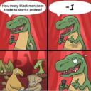

Andrea Pappe Pasinato
06-Apr-20 01:39 PM
 3
3
DOMANDE BIOMECCANICA:
3
Alexandru Mihailescu
06-Apr-20 01:40 PM
Pinned a message.

Alberto Salvato
15-Apr-20 09:49 AM
Chi ha finito l'esame può gentilmente scrivere le domande?

Alessandro
15-Apr-20 02:32 PM
Ragazzi, le domande?
salvia
15-Apr-20 02:32 PM
Si infatti.. sareste di grande aiuto
enry22
15-Apr-20 02:58 PM
Sì esatto, chi è stato interrogato sarebbe troppo gentile a scriverle

asja
15-Apr-20 07:12 PM
È arrivata anche a voi una email con scritto che l'orale è stato spostato il 21?
Marta
15-Apr-20 07:12 PM
Si

Laura b.
15-Apr-20 07:12 PM
Sì
Ludo Vica
15-Apr-20 07:12 PM
Anche a me

Cla1224
15-Apr-20 07:12 PM
Si
giacomosarto
15-Apr-20 07:12 PM
Sì alle 8:30 dice
asja
15-Apr-20 07:13 PM
Ah okay quindi è una cosa generale, grazie
a98
15-Apr-20 07:14 PM
Pavan aveva mandato tempo fa questa mail. Credo sia arrivata ora la comunicazione da uniweb
Gre
15-Apr-20 07:15 PM
@a98 A me era già arrivata quella mail
a98
15-Apr-20 07:15 PM
Sì infatti, è una mail vecchia del 3 Aprile. Ma la comunicazione da uniweb a me è arrivata adesso
asja
15-Apr-20 07:15 PM
Grazie mille è che non pensavo arrivasse più la notifica da uniweb
è che non pensavo arrivasse più la notifica da uniweb
Giulia
16-Apr-20 12:06 AM
Scusate, ma anche a voi la pagina risulta vuota? Perché prima c’erano scritte due cose ora non mi apre nulla
Sara R
16-Apr-20 12:10 AM
Si anche a me
Marco
16-Apr-20 12:11 AM
Idem
cla
16-Apr-20 10:18 AM
Per caso qualcuno si ricorda cosa c’era scritto prima che sparisse tutto??
enry22
16-Apr-20 10:22 AM
È meglio scrivere direttamente nel gruppo le domande allora invece che nel foglio
salvia
16-Apr-20 10:24 AM
Se scaricate l’app si vedono
Gre
16-Apr-20 10:25 AM
Manderesti uno screen?
cla
16-Apr-20 10:27 AM
Grazie mille! Non lo sapevo
Francesca Mattaliano Belforti
16-Apr-20 12:12 PM
Ciao a tutti! Stamattina Pavan che domande ha fatto? ️
️
️
a98
16-Apr-20 12:20 PM
A me ha chiesto i grafici di momento stabilizzante e instabilizzante riferiti all'asta incernierata a terra con una molla anch'essa incernierata. Era più o meno il primo esempio che aveva fatto lui quando ha introdotto l'instabilità dell'equilibrio
Andrea Pappe Pasinato
16-Apr-20 12:20 PM
aggiornate le domande
Alessandro Senter
16-Apr-20 12:32 PM
Ma è buono o severo?
gioacchino
16-Apr-20 12:44 PM
In che senso stabilizzante e instabilizzante ?
Momento con forza minore del carico critico e maggiore del carico critico ?
gioacchino
16-Apr-20 12:46 PM
Riusciresti a mandarmi gli appunti ?
enry22
16-Apr-20 12:50 PM
Ma quindi si faceva così il grafico o andava cambiato?
silvia
16-Apr-20 01:00 PM
Ma la difficoltà degli esercizi che chiede è simile a quella dei pdf di moodle circa?
asja
16-Apr-20 01:02 PM
Comunque io ho l'app ma non mi fa lo stesso vedere il file aggiornato
Gilda_B
16-Apr-20 01:07 PM
A me neanche fa vedere il file aggiornato  ♀️
♀️
♀️
Gre
16-Apr-20 01:07 PM
Facciamo che a fine giornata chi lo vede fa lo screen
Così stiamo tutti tranquilli? Ok?
asja
16-Apr-20 01:10 PM
Sarebbe meglio
enry22
16-Apr-20 01:18 PM
Neanche a me fa vedere il foglio con le domande nonostante abbia l'app
leonardobertini
16-Apr-20 01:35 PM
E per gli esercizi come si fa a fargli vedere il procedimento? Oppure non si scrive niente e si dice tutto a voce?
asja
16-Apr-20 01:41 PM
Ma quindi l'esame si svolgerebbe con una domanda e un esercizio?
Alessandro Senter
16-Apr-20 04:35 PM
È normale che pavan sia in ritardo nel collegamento o sono stronzo io?!
Gre
16-Apr-20 04:35 PM
Probabilmente deve finire ancora un’interrogazione
Sei nella sala d’attesa?
camillapozzer
16-Apr-20 06:24 PM
A me ha chiesto un esercizio ma che andava svolto praticamente solo a ragionamento, non ha voluto che mostrassi fogli (a un certo punto mi ha chiesto lui di disegnare perché non ci stavamo capendo)
salvia
16-Apr-20 06:26 PM
Posso chiederti che esercizio fosse? Cioè di che argomento
camillapozzer
16-Apr-20 06:26 PM
Sulla rotazione/abbassamento
chiara
16-Apr-20 06:27 PM
Ma tipo sulla deformabilità flessionale ?
enry22
16-Apr-20 06:28 PM
riesci a mandare il disegno per caso?
camillapozzer
16-Apr-20 06:29 PM
Erano due aste con una cerniera in mezzo e incastrate ai lati e con la forza che premeva sulla cerniera
enry22
16-Apr-20 06:30 PM
grazie mille
camillapozzer
16-Apr-20 06:30 PM
Dopo mi ha chiesto di ragionare su come cambiava l'abbassamento se la forza invece di essere al centro fosse stata spostata , se ci fosse stato un carico .... Cose più di ragionamento che di dimostrazione
camillapozzer
16-Apr-20 06:32 PM
Simile però a dx non c'era un carrello ma era incastrato
enry22
16-Apr-20 06:32 PM
Dopo mi ha chiesto di ragionare su come cambiava l'abbassamento se la forza invece di essere al centro fosse stata spostata , se ci fosse stato un carico .... Cose più di ragionamento che di dimostrazione
@camillapozzer come si risponde a questa?
camillapozzer
16-Apr-20 06:34 PM
Che se hai carico non puoi dividerlo a metà ma avrai carico uguale sulla parte sx e dx e sarà uguale al carico iniziale, e poi analizzi la v della rottura della cerniera considerando il carico
Però lui ti guida un po' se vede che sei in difficoltà
Non ti lascia allo sbaraglio
enry22
16-Apr-20 06:35 PM
grazie mille 
Pietro Toso
16-Apr-20 06:48 PM
A me ha chiesto questo
Chiedendomi rotazione e traslazione del punto 3
enry22
16-Apr-20 06:49 PM
hai la soluzione per caso?
Pietro Toso
16-Apr-20 06:50 PM
Non me lo ha fatto finire tutto, però è simile a quello che avevamo fatto in classe col taglio al posto del momento
enry22
16-Apr-20 06:51 PM
e di teoria ti ha chiesto qualcosa?
Pietro Toso
16-Apr-20 06:52 PM
No
Gre
16-Apr-20 07:11 PM
@Pietro Toso Dove è quel esercizio che ha fatto in classe
Gre
16-Apr-20 11:00 PM


mellon
18-Apr-20 08:31 PM
Ragazzi scusate, per chi ha l’esame da 6 cfu non c’è l’instabilità dell’equilibrio giusto?? E il carico critico? Grazie 
Gre
18-Apr-20 08:31 PM
Non c’è
mellon
18-Apr-20 08:33 PM
Ottimo grazie mille! Quindi di fatto per ora ai 6 cfu ha chiesto solo la deformabilità flessionale??
enry22
20-Apr-20 12:04 PM
Oggi ha chiesto altro oltre all'esercizio sull'abbassamento?
enry22
21-Apr-20 03:59 PM
Oggi che domande ha fatto Pavan?
Gre
21-Apr-20 03:59 PM
Sta interrogando ora
Gre
21-Apr-20 06:16 PM
Lo provo tra 10 minuti
Se qualcuno vuole ci ragioniamo assieme
Gilda_B
21-Apr-20 06:45 PM
Anche a me viene così
Gre
21-Apr-20 06:46 PM
Giusto, ho corretto prima che ho dimenticato qualche 2
E poi ho usato i segni opposti
silvia
21-Apr-20 06:48 PM
Il mio unico dubbio è la rappresentazione "totale" come si disegna?
Come "2" ma con phi epsilon e alpha totali giusto?
Gilda_B
21-Apr-20 06:49 PM
Fai la sovrapposizione dei due disegni
Gre
21-Apr-20 06:49 PM
Che il lato era 2L e io avevo considerato L
Gilda_B
21-Apr-20 06:49 PM
Quindi come il due ma con l'asta orizzontale piegata un po' verso l'alto
Credo
silvia
21-Apr-20 06:50 PM
Ok perfetto
Provo a fare anche l'altro esercizio
Gre
21-Apr-20 06:50 PM
Come dice @Gilda_B
@silvia Io lo sto finendo così lo confrontiamo
Gilda_B
21-Apr-20 06:51 PM
Tra poco lo faccio anche io
Gre
21-Apr-20 06:52 PM
@Gilda_B Perfetto
silvia
21-Apr-20 07:10 PM
Io faccio fatica a trovare il valore di v2(carrello), siete riuscite per caso? O in generale se siete riuscite a trovare il momento flettente come avete fatto?
silvia
21-Apr-20 07:13 PM
Mmm ok quindi tratti il carrello come una cerniera praticamente
Gre
21-Apr-20 07:14 PM
Come una cerniera lo puoi spezzare e non consideri però le reazioni vincolari orizzontali
Che non hai perchè è un carrello
silvia
21-Apr-20 07:15 PM
Si scusa, intendevo quello
Gre
21-Apr-20 07:22 PM
Ho un dubbio sulla scelta del momento
Ceh sul verso del momento, ma i conti dovrebbero essere giusti
leonardobertini
21-Apr-20 07:24 PM
Ma il cartella spezza la continuità della trave o no?
Il carrello
Gilda_B
21-Apr-20 07:25 PM
Ma in questo modo è come se la reazione vincolare del carrello non esistesse
leonardobertini
21-Apr-20 07:30 PM
Io non penso si possa abbassare in prossimità del carrello
Gilda_B
21-Apr-20 07:33 PM
In prossimità credo di sì (come nell'asta di eulero ad esempio) ma il carrello non penso possa abbassarsi
leonardobertini
21-Apr-20 07:34 PM
Si intendevo che il carrello non si abbassa
Gre
21-Apr-20 07:53 PM
Avevo un dubbio su questa cosa infatti, ma allora come si fa?
Allora dopo lo rifaccio
Quindi c’è continuità solo se c’è la cerniera?
silvia
21-Apr-20 08:04 PM
Eh non saprei anche a me è venuto questo dubbio, io di solito faccio l'analisi statica e mi trovo le sollecitazioni, per fare "allenamento" ma in questo caso dall'analisi statica non ne vengo fuori. Ho provato a mettere un equazione ausiliaria ma non avrebbe molto senso perché si usa quando abbiamo due corpi che di solito vengono congiunti appunto da una cerniera. Correggetemi se sbaglio, io ho l'esame domani e questo esercizio mi ha mandato un po' in crisi
Gre
21-Apr-20 08:07 PM
Ceno e lo rifaccio, allora il discorso che avevo fatto valeva se c’era una cerniera giusto?
Gilda_B
21-Apr-20 08:10 PM
L'equazione ausiliaria la usi quando hai 2 corpi.. qui non credo si tratti di due corpi
silvia
21-Apr-20 08:11 PM
Si infatti non ha senso anche secondo me
Alessandro Belluzzo
21-Apr-20 08:12 PM
Io direi che posto così il sistema è labile, perchè il momento sul carrello non è nullo, pertanto la parte di destra ruoterebbe in senso antiorario per effetto della forza F... tutto avrebbe molto più senso se il carrello fosse posto sotto la struttura rendendola quindi iperstatica
Gilda_B
21-Apr-20 08:13 PM
Si il carrello è posto sotto infatti
C'è il mio disegno poco più sopra
silvia
21-Apr-20 08:14 PM
Ma che calcoli hai fatto per trovare il disegno?
leonardobertini
21-Apr-20 08:16 PM
Ma quello/a a cui l'ha chiesto all'esame come ha risposto?
Gre
21-Apr-20 08:52 PM
Esatto, bella domanda @leonardobertini
@Gilda_B, ma nel suo disegno non è sotto, è in mezzo
enry22
21-Apr-20 08:56 PM
Io ho spezzato la struttura e mi viene V2=F
Facendo il momento rispetto all'angolo in basso a destra
Gre
21-Apr-20 08:57 PM
Come a me
Ma evidentemente non è corretto
enry22
21-Apr-20 08:59 PM
A nessun'altro viene V2=F?
Gre
21-Apr-20 09:04 PM
A tutti quelli che hanno spezzato viene così, ma a quanto pare non è giusto spezzare
Gloria
21-Apr-20 09:28 PM
Ma scusate nel tratto incastro-carrello non dovrebbe esserci una forza perpendicolare affinché si deformi?
Gre
21-Apr-20 09:29 PM
Quindi dici che non si deforma?
Eh beh giusto, se il carrello non subisce deformazioni
Se invece si muove è come avevamo detto prima
Gre
21-Apr-20 09:33 PM
Ha senso in realtà
silvia
21-Apr-20 09:34 PM
Perché teoricamente è iper statico?
Gre
21-Apr-20 09:34 PM
Però teoricamente si deforma perché il carrello si muove in direzione orizzontale
Non è iperstatico nel nostro caso, perché noi abbiamo 6gdl e 5cdv, quindi in realtà è labile
Laura b.
21-Apr-20 09:37 PM
Ma quindi è un corpo solo o sono 2 ? Non ho ancora capito...
silvia
21-Apr-20 09:38 PM
Se fossero due corpi avremmo 6gdl e 4 cdv ma noi abbiamo un corpo solo (in teoria)quindi abbiamo 3 gdl e 4 cdv
Gre
21-Apr-20 09:39 PM
Io non capisco se sto carrello è nel mezzo i sotto
silvia
21-Apr-20 09:56 PM
Ah ok allora si portando avanti le equazioni anch’io lo farei così. Mi ero bloccata al fatto che v2 non si poteva determinare subito
Gre
21-Apr-20 09:57 PM
Si, io addirittura non capivo dove fosse il carrello @silvia
Anche io sono d’accordo con questa soluzione
Anche io sono d’accordo con questa soluzione
silvia
21-Apr-20 10:05 PM
Comunque mi rimane il dubbio che si possa fare come dicevi prima @Gre , ovvero di dividere il carrello anche se sono più propensa a pensare che sia sbagliato.
Gre
21-Apr-20 10:10 PM
Secondo me l’alternativa che ho detto prima è valida se c’è una cerniera interna
enry22
21-Apr-20 10:26 PM
Nella seconda foto si vede bene
@Gilda_B
Grazie mille, quindi viene una rotazione negativa cioè verso l'alto
leonardobertini
21-Apr-20 10:37 PM
Scusate ma quindi che forma avrebbe?
enry22
21-Apr-20 10:41 PM
Non so però
Però se la rotazione è negativa significa che è verso l'alto
leonardobertini
21-Apr-20 10:47 PM
Non so mi sembra strano
enry22
21-Apr-20 10:59 PM
Boh non saprei, il carrello ha una forza che spinge verso il basso quindi potrebbe essere così
leonardobertini
21-Apr-20 11:00 PM
Domani provo a rifarlo
Gilda_B
22-Apr-20 09:04 AM


Buongiorno ragazzi! Mi ha chiesta l'abbassamento sulla cerniera interna
Gre
22-Apr-20 09:05 AM
Buongiorno, grazie mille
aria
22-Apr-20 09:11 AM
Grazie!!
enry22
22-Apr-20 09:26 AM
Grazie!
enry22
22-Apr-20 09:34 AM
L'altro interrogato può scrivere la domanda?
enry22
22-Apr-20 09:40 AM
Hai anche la soluzione?
leonardobertini
22-Apr-20 09:56 AM
Se hai la soluzione puoi mandarla?
Gre
22-Apr-20 10:17 AM
Forse mi sto perdendo in un bicchiere d’acqua, ma qualcuno mi dice come trovo V2?
@serena Hai la soluzione per caso?
Gloria
22-Apr-20 10:24 AM
@Gre perfetto anche io ho fatto così
Gloria
22-Apr-20 10:27 AM
@Gilda_B grazie mille
Gre
22-Apr-20 10:27 AM
@Gilda_B mi dici come hai trovato per favore V2 nell’es di ieri?
Mi sono capita scusate
scusate
alcexx
22-Apr-20 10:41 AM
Certo è che la difficoltà sta crescendo esponenzialmente negli ultimi giorni 
silvia
22-Apr-20 11:08 AM
@aria io lo risolvere così, però ho preso in considerazione 2l come larghezza totale e non l e 2l come altezza totale
È scritto un po' di fretta se non capite qualcosa ditemi
sofia
22-Apr-20 11:10 AM
Anch'io l'ho fatto così
Laura b.
22-Apr-20 11:11 AM
Anch'io avevo iniziato a fare così , ma sei i due corpi hanno rigidezze diverse una influisce sull'altra ,no ?
aria
22-Apr-20 11:11 AM
Eh infatti anche io non riuscivo a capire questo
Laura b.
22-Apr-20 11:12 AM
Perché se fossero uguali, so che hanno comportamento simmetrico quindi posso considerare il corpo di dx da solo
silvia
22-Apr-20 11:13 AM
Si anch'io ci ho pensato però essendoci la cerniera potrebbe essere che la rigidezza viene annullata? E quindi si possono studiare le rotazioni separatamente?
aria
22-Apr-20 11:15 AM
Si esatto, spero sia da fare cosi, altrimenti non saprei come correlarle
Laura b.
22-Apr-20 11:16 AM
Però se chiedesse l'abbassamento della cerniera non penso potrei fare così ...
aria
22-Apr-20 11:17 AM
Se chiedesse l'abbassamento della cerniera io studuerei le due strutture come staccate e poi sommerei l'abbassamento di ciarcuna, sarebbe una cazzata?
silvia
22-Apr-20 11:17 AM
Stavo giusto per scriverlo
Gre
22-Apr-20 11:17 AM
Anche io farei come te @aria
Io volevo provare a fare quell’esercizio, ma non ho capito la richiesta quale è
aria
22-Apr-20 11:18 AM
La rotazuone in A
silvia
22-Apr-20 11:18 AM
Ma l'avete fatto considerando una altezza qualsiasi?
Gre
22-Apr-20 11:18 AM
@aria Grazie
aria
22-Apr-20 11:20 AM
Penso che tutti i lati siano lunghi L, quello orizzontale consideri le due metà L/2 e L/2
silvia
22-Apr-20 11:21 AM
Ah ok
aria
22-Apr-20 11:21 AM
Come hai fatto tu praticamente solo che hai moltiplicato x2
silvia
22-Apr-20 11:21 AM
Grazie mille
leonardobertini
22-Apr-20 11:23 AM
Ma per trovare la rotazione in A non bisogna considerare l'equazione dei momenti rispetto all'asta verticale?
silvia
22-Apr-20 11:25 AM
Vale lo stesso momento

pappa
22-Apr-20 11:27 AM
Ma per trovare c1 e c2 hai posto gli abbassamenti sulle cerniere nulle?
Gre
22-Apr-20 11:28 AM
Io ho fatto questo
Se qualcuno lo ha fatto per confrontarlo
Ho sbagliato l’ultimo punto
Laura b.
22-Apr-20 11:30 AM
La rotazione nella cerniera però non è nulla
pappa
22-Apr-20 11:30 AM
Infatti
silvia
22-Apr-20 11:33 AM
No è che chiedeva solo la rotazione e non ho calcolato anche l'abbassamento
Mentre c1 e c2 li ho trovati ponendo y'(0)=0 e y(0)=0
È sbagliato?
pappa
22-Apr-20 11:35 AM
Non sono convinto sulla rotazione nulla sulla cerniera in 0
silvia
22-Apr-20 11:41 AM
Però il momento sulla cerniera è nullo
Gloria
22-Apr-20 11:41 AM
@Gre a me la rotazione è risultata di segno opposto
Gre
22-Apr-20 11:43 AM
Potrei aver tranquillamente sbagliato un segno, prova a dirmi cosa hai fatto tu
Comunque ho rifatto l’ultimo punto, può avere senso?
Gre
22-Apr-20 11:51 AM
@Gloria può essere legato al fatto che io ho scelto z come segmento e tu L-z?
Ma allora mi sorge spontanea una domanda, io devo usare z o L-z?
Gloria
22-Apr-20 11:56 AM
Non so io ho sempre usato L-z
silvia
22-Apr-20 11:57 AM
@gloria penso che tu abbia sbagliato a calcolare v1 perché non ha semplificato il 2 a denumeratore
A me v1 viene 3f facendo gli stessi passaggi
Gre
22-Apr-20 11:58 AM
Ma quindi il risultato corretto a te viene positiva o negativa la rotazione @silvia
silvia
22-Apr-20 11:58 AM
Trovo lo spostamento e mando la foto
Gre
22-Apr-20 11:58 AM
Perfetto, grazie @silvia
Gloria
22-Apr-20 11:59 AM
@silvia giusto grazie
aria
22-Apr-20 12:05 PM
@pappa come lo faresti?
Ragionandoci effettivamente non é detto che la rotazione sia zero, pero boh non saprei come farlo
silvia
22-Apr-20 12:06 PM
@Gre forse ho fatto il tuo stesso errore per lo spostamento, ho visto ora cosa avevi scritto
pappa
22-Apr-20 12:06 PM
Sono d’accordo con Silvia sul fatto che il momento sia nullo ma nel caso della rotazione in 0 non è nulla
Però non saprei come andare avanti
O meglio
Gre
22-Apr-20 12:07 PM
@silvia infatti non capisco cosa ho sbagliato
pappa
22-Apr-20 12:07 PM
A me viene una c1 diversa da 0
Laura b.
22-Apr-20 12:07 PM
Esatto anch'io poi C1 non so come trovarla
Gre
22-Apr-20 12:08 PM
Giusto
silvia
22-Apr-20 12:08 PM
@pappa manderesti il tuo procedimento?
pappa
22-Apr-20 12:12 PM
Finisco un attimo un esercizio e mando
silvia
22-Apr-20 12:12 PM
Grazie
Gre
22-Apr-20 12:14 PM
@silvia è che per me V1=(F/2):(1/2-1/6)
Ludo Vica
22-Apr-20 12:31 PM
Secondo me non sono le deformazioni rispetto a A, perché in A avrei sicuramente una traslazione anche orizzontale chi
pappa
22-Apr-20 12:32 PM
Si ma lui ti chiede la rotazione
aria
22-Apr-20 12:32 PM
Ma nella prima foto il momento che consideri per l'asta verticale non dovrebbe essere FL/4?
pappa
22-Apr-20 12:32 PM
Si è FL/4
Il 2 l’ho cancellato ma si vede ahah
Ludo Vica
22-Apr-20 12:33 PM
Tu dici che la rotazione di quel tratto è uguale a quella su A? @pappa
pappa
22-Apr-20 12:33 PM
Era F/2 * L/2
aria
22-Apr-20 12:33 PM
Si si scusami é vero
pappa
22-Apr-20 12:33 PM
Io dico che quella y’(z) è la rotazione di TUTTO quel tratto
enry22
22-Apr-20 12:34 PM
Io ho fatto questo
@Gre
A me viene di segno opposto la rotazione e non capisco come si faccia a calcolare l'abbassamento
pappa
22-Apr-20 12:34 PM
A z dato (che sia L che sia L/2 etc) tu ti trovi la rotazione di quel z
Gre
22-Apr-20 12:34 PM
Non capisco cosa ho sbagliato
pappa
22-Apr-20 12:34 PM
Ma non sappiamo a che distanza sia A quindi io lo lascerei in funzione di z
Gre
22-Apr-20 12:36 PM
Adesso lo rifaccio
Laura b.
22-Apr-20 12:38 PM
E la questione che dall'altra parte ho rigidezza doppia ? Non influisce quindi ... ?
pappa
22-Apr-20 12:38 PM
Secondo me no per la cerniera interna
L’unica cosa è che la seconda struttura avrà rotazione e traslazione doppiamente minori
Però non lo so con certezza quindi speriamo bene
giacomocreazzo
22-Apr-20 12:51 PM
Comunque l'esercizio con la struttura simmetrica l'ha fatto in aula...
pappa
22-Apr-20 12:52 PM
Lo potresti inviare?
Aspetta ma intendi quello con le due forze separate?
pappa
22-Apr-20 12:56 PM
Ah ok quindi sembra giusta la prima parte
Il problema è dopo
giacomocreazzo
22-Apr-20 12:56 PM
Ah ok scusatemi
pappa
22-Apr-20 12:56 PM
Su c1 e c2
Asya
22-Apr-20 02:41 PM
Scusate ma all'interrogazione ora chiede solo esercizi o anche teoria ?
Gre
22-Apr-20 02:41 PM
Ha chiesto teoria ieri
Asya
22-Apr-20 02:56 PM
Cosa ha chiesto ieri? Scusa ma me lo sono perso tra i messaggi
Gre
22-Apr-20 02:56 PM
La molla rotazionale che chiede spesso
Il carico critico di asta rigida con molla rotazionale
E momento stabilizzante e instabilizzante
alcexx
22-Apr-20 02:57 PM
Scusate ma la molla rotazionale fa parte del@programma da 9 CFU?
Gre
22-Apr-20 02:57 PM
Certo si, ma non di quello da 6
Perché è instabilità dell’equilibrio
Asya
22-Apr-20 02:58 PM
Ah ok perfetto, grazie mille @Gre
alcexx
22-Apr-20 02:58 PM
Perfetto
Grazie mille
Gre
22-Apr-20 02:58 PM
Di niente
Gre
22-Apr-20 03:22 PM
Sei un tesoro @silvia
silvia
22-Apr-20 03:22 PM
Scusate ho scritto asimmetrica ma volevo scrivere simmetrica
aria
22-Apr-20 03:22 PM
Grazie mille!!
alcexx
22-Apr-20 03:22 PM
Grazie mille davvero
pappa
22-Apr-20 03:24 PM
Grazie mille
Ma quindi il momenti non è F/2*(L-z)??
silvia
22-Apr-20 03:32 PM
Comunque lui ti guida molto e almeno per come mi è andata mi sembra generoso coi voti. Infatti anche io avevo scritto f/2(l-z) ma mi ha corretto perché ho fatto i calcoli rispetto al punto 1 e quindi è - fz
Gre
22-Apr-20 03:33 PM
Mi regali speranze
Gloria
22-Apr-20 03:33 PM
Grazie mille
alcexx
22-Apr-20 03:34 PM
Grazie davvero stra gentile
Gloria
22-Apr-20 03:34 PM
Scusa tiha chiesto per caso anche teoria?
silvia
22-Apr-20 03:34 PM
Di nulla, in bocca al lupo a tutti!
Alberto Salvato
22-Apr-20 03:34 PM
@silvia ma che intendi col punto 1
Jennifer
22-Apr-20 03:35 PM
Potresti mandare la foto dell'esercizio svolto?
silvia
22-Apr-20 03:35 PM
No niente teoria ma il mio era da 6 crediti non so se faccia differenze, con punti uno intendo il calcolo delle sollecitazioni rispetto alla cerniera in basso a sinistra
Gloria
22-Apr-20 03:36 PM
Grazie mille ancora
Alberto Salvato
22-Apr-20 03:40 PM
Grazie
Alessandro Belluzzo
22-Apr-20 05:25 PM
A me ha chiesto di calcolare spostamento del punto 2 e rotazioni a destra e sinistra del medesimo punto
In più mi ha fatto delle domande riguardo l’energia elastica di deformazione del corpo di sinistra, cose di ragionamento che non ha spiegato
Gre
22-Apr-20 05:26 PM
Diciamo che è molto appassionato di questi esercizi, no?
Grazie di averlo condiviso, spero sia andato bene l’esame
Avresti anche le soluzioni in caso?
Alessandro Belluzzo
22-Apr-20 05:28 PM


Gre
22-Apr-20 05:28 PM
Grazie mille, gentilissimo
alcexx
22-Apr-20 06:07 PM
Grazie mille davvero
Stefano
22-Apr-20 06:30 PM
Scusa, da dove ricavi che V3L =0?
Filippo
22-Apr-20 06:31 PM
C è una cerniera in cui il momento è nullo e l unica forza è V3 che quindi è pari a 0
Gre
22-Apr-20 06:33 PM
In questi casi per le reazioni vincolari viene comodo spezzare la cerniera centrale @Stefano
Stefano
22-Apr-20 06:33 PM
Ok grazie mille
Quindi tieni a sinistra FL e a destra 0?
Gre
22-Apr-20 06:33 PM
Esatto
Stefano
22-Apr-20 06:34 PM
Ottimo, grazie mille
Gre
22-Apr-20 06:34 PM
Figurati
Gre
22-Apr-20 06:46 PM
Sai dirci qual è la risposta corretta per caso?
Stefano
22-Apr-20 06:48 PM
Posso chiederti se avevi esame da 6 o da 9 CFU? @leonardobertini
Gre
22-Apr-20 06:48 PM
9
Stefano
22-Apr-20 06:48 PM
Grazie
giacomob
22-Apr-20 06:49 PM
A me ha chiesto di trovare la rotazione nel punto A con alcune considerazioni riguardo la struttura simmetrica (esame da 9 CFU)
Gre
22-Apr-20 06:50 PM
Grazie mille
Stefano
22-Apr-20 06:50 PM
Grazie
Gre
22-Apr-20 06:50 PM
@giacomob diciamo che la tua era la domanda del giorno
Spero sia andato bene a tutti l’esame
Grazie delle domande
leonardobertini
22-Apr-20 07:03 PM
Io da 9 CFu
sofia
22-Apr-20 07:04 PM
Hai la soluzione per caso? @leonardobertini
elem
22-Apr-20 07:06 PM
Una ragazza mi ha mandato questo
(6 CFU) se qualcuno lo fa poi magari ci confrontiamo
Gre
22-Apr-20 07:08 PM
Ma è un sistema iperstatico?
Comunque stasera lo faccio
Dopo cena
elem
22-Apr-20 07:09 PM
Sì lo é
alcexx
22-Apr-20 07:09 PM
In teoria quello con tre pattini è non è nel programma da 6
(?)
Stefano
22-Apr-20 07:10 PM
Secondo me lo è
alcexx
22-Apr-20 07:10 PM
Hahah benissimo
Gre
22-Apr-20 07:10 PM
Si anche secondo me @alcexx
alcexx
22-Apr-20 07:11 PM
Okey grazieeeee
Stefano
22-Apr-20 07:13 PM

Può essere una soluzione? O sto cambiando tutto? 

Laura b.
22-Apr-20 07:14 PM
Anch'io ho fatto così
Stefano
22-Apr-20 07:15 PM
Hai considerevolmente migliorato la mia giornata ahah, grazie
Gre
22-Apr-20 07:15 PM
Ma il carrello non si muove però
Perché sul 3 hai sommato gli spostamenti?
Stefano
22-Apr-20 07:16 PM
Perché il carrello non si muove?
Gre
22-Apr-20 07:16 PM
Perché non si abbassa
Non parliamo di spostamenti verticali?
aria
22-Apr-20 07:16 PM
No
Stefano
22-Apr-20 07:16 PM
Nono, orizzontalmente
sofia
22-Apr-20 07:16 PM
Forza assiale
aria
22-Apr-20 07:16 PM
Orizzontali, ti devi calcolare il Dl
Gre
22-Apr-20 07:17 PM
Ecco non avevo compreso la domanda
elem
22-Apr-20 07:23 PM
Io ho fatto come te @sofia
Eva Dalla Valle
22-Apr-20 07:23 PM
Anche io, e anche il prof in aula lo aveva impostato così
Gre
22-Apr-20 07:24 PM
Io pure @sofia
elem
22-Apr-20 07:24 PM
Ma per la rotazione invece ?
Gre
22-Apr-20 07:25 PM
Rotazione deriva 1 volta
Io farei così, c’è l’equazione della linea elastica mi dice che la rotazione è la derivata prima dello spostamento
elem
22-Apr-20 07:26 PM
Giustamente che scema
Grazie, mi ero persa in un bicchiere d'acqua
che scema
Grazie, mi ero persa in un bicchiere d'acqua
sofia
22-Apr-20 07:28 PM
Toop
Eva Dalla Valle
22-Apr-20 07:30 PM
@Gre dici di derivare le due y e fare lo stesso procedimento?
Laura b.
22-Apr-20 07:41 PM
Io l'ho fatto senza scomporre la cerniera interna e viene lo stesso 8/9FL alla 3, quindi a posto
Gre
22-Apr-20 07:47 PM
No, basta solo uno tanto sono uguali lo spostamenti sulla cerniera, tanto che gli eguagli
@Eva Dalla Valle Cioè basta che prendi un y (y1 o y2 che sono uguali) e lo derivi una volta
Capito come?
leonardobertini
22-Apr-20 08:39 PM
Non si sommano gli spostamenti in 3
Stefano
22-Apr-20 08:47 PM
Non va considerato lo spostamento del primo pezzo?
Gre
22-Apr-20 08:48 PM
Anche a me sembrava infatti @leonardobertini
Quindi @leonardobertini fai i 2 spostamenti in maniera separata?
leonardobertini
22-Apr-20 09:00 PM
Sisi però hanno due spostamenti diversi
Gre
22-Apr-20 09:01 PM
In che senso?
leonardobertini
22-Apr-20 09:04 PM
Scusa, vanno considerati i due spostamenti separati
aria
22-Apr-20 09:05 PM
Si però risultano uguali no? Le forze assiali sono uguali a F in entrambi?!
leonardobertini
22-Apr-20 09:06 PM
Cioè alla fine vengono uguali perché uno ha rigidezza 2EA e agisce su L mentre altro ha EA e agisce su L/2
aria
22-Apr-20 09:07 PM
Si si
Grazie
Eva Dalla Valle
22-Apr-20 09:52 PM
@Gre sì grazie mille
Stefano
23-Apr-20 08:41 AM
https://docs.google.com/spreadsheets/d/1VYJp7-0Dv-KfMaHfjHweSGdqj9A0djn48lzvAloL3Tw/edit?usp=drivesdk
Possibile calendario per biomeccanica, ditemi se può aver senso
Foglio1
https://docs.google.com/spreadsheets/d/1VYJp7-0Dv-KfMaHfjHweSGdqj9A0djn48lzvAloL3Tw/edit?usp=sharing
#,#,Cognome e Nome
SETTIMANA 1,1,1,AGRESSI CARLOTTA,21-apr-2020
2,2,AUT...
Gre
23-Apr-20 08:42 AM
Non riesco ad aprirlo
Riesci a fare uno screen?
Alberto Salvato
23-Apr-20 08:47 AM
Può avere senso, sempre che qualcuno non si sia ritirato e lo ha scritto al professore
Gre
23-Apr-20 08:47 AM
Ho aperto pure io, può avere senso, comunque oggi esce il suo
Carolina
23-Apr-20 08:52 AM
A me ha chiesto questo
Gre
23-Apr-20 08:52 AM
E devi considerare che magari alcuni che hanno il 5 maggio hanno l’esame di biomovimento
Gre
23-Apr-20 08:54 AM
Grazie mille @Carolina
Se qualcuno lo fa ne discutiamo
Ludo Vica
23-Apr-20 09:18 AM
@Carolina ti aveva dato le lunghezze per caso?
Carolina
23-Apr-20 09:25 AM
Si sì, tutti e due i corpi sono lunghi L
Gre
23-Apr-20 09:25 AM
Grazie mille
Carolina
23-Apr-20 09:26 AM
Prego!
sofia
23-Apr-20 09:30 AM
Anche a me ha dato quell'esercizio
Gre
23-Apr-20 09:31 AM
Grazie @sofia
Gloria
23-Apr-20 10:01 AM

A me ha chiesto questo

asja
23-Apr-20 10:10 AM
Ma oggi il prof fa uscire tutto il calendario o solo quello della prossima settimana?
Gre
23-Apr-20 10:11 AM
Settimana in settimana
@Gloria è quello che aveva spiegato in aula?
Gloria
23-Apr-20 10:15 AM
@Gre si, anche il grafico del momento stabilizzante e instabilizzante
aria
23-Apr-20 10:15 AM
Top grazie
Gre
23-Apr-20 10:16 AM
@Gloria Grazie mille
Gloria
23-Apr-20 10:17 AM
Di nulla, in bocca al lupo a tutti
ninja9
23-Apr-20 10:29 AM
A me ha chiesto questo
@Gloria Qualcuno ha la soluzione di questo?
Gre
23-Apr-20 10:30 AM
Non credo, ceh l’unica cosa certa è che non si deforma l’asta di destra nel senso che se scende scende tutta uguale perchè è infinitamente rigida, ma la cerniera centrale si abbassa sicuro per F
alcexx
23-Apr-20 10:30 AM
In teoria la parte sx essendo infinto non si deforma
Ok lol
*dx
Gre
23-Apr-20 10:30 AM
@ninja9 Lo ha fatto in aula
ninja9
23-Apr-20 10:30 AM
Si ma non c'ero e non ho gli appunti
Gre
23-Apr-20 10:30 AM
@alcexx Si, non si deforma, ma secondo me scende
@ninja9 Dammi 2 minuti
ninja9
23-Apr-20 10:31 AM
Grazie mille!
aria
23-Apr-20 10:31 AM
Pagina 357 del libro
alcexx
23-Apr-20 10:31 AM
Scende sicuro si deve lavorare parte dx secondo me
*sx
ninja9
23-Apr-20 10:34 AM
Grazie davvero 
Gre
23-Apr-20 10:34 AM
Figurati
alcexx
23-Apr-20 10:34 AM
Esatto, Secondo me essendo infinita EJ parte dx dobbiamo solo calcolare la forza sulla cerniera e lavorare sulla parte sx trovandoci il momento, poi usiamo l’equazione delle linee elastiche e troviamo il tutto
Potrei sbagliarmi
Ahahah
Gre
23-Apr-20 10:35 AM
Esatto, però il momento sulla parte dx va usato per calcolare il momento sulla parte sx, giusto?
alcexx
23-Apr-20 10:40 AM
Non so non credo perché comuqneu Devo calcolarmi il momento agente sulla cerniera perché è su questa che voglio l’abbassamento/rotazione quindi se io lo calcolo da dx o da sx il momento sarà -F(L-z). Cioe questa è una mia opinione potrebbe essere non corretta ahha perché comunque a dx EJ secondo me non bisogna proprio calcolare perché infinita
Gre
23-Apr-20 10:41 AM
Tu giustamente scomponi la cerniera per il calcolo dei momenti
alcexx
23-Apr-20 10:42 AM
Esatto
Quindi parte sx ho F, parte dx nulla perché EJ infinito
aria
23-Apr-20 10:43 AM
Anche io ho fatto cosi ma a destra secondo me c'e da calcolare comunque una rotazione dovuta al momento, perché anche se l'asta é rigida comunque può ruotare
Gre
23-Apr-20 10:44 AM
Sto facendo i conti così vediamo cosa dovrebbe uscire
@aria Anche secondo me
@aria è quello che dicevo all’inizio, che non si deforma, ma ruota
Ma la F sulla cerniera se la spezziamo dove la mettiamo?
aria
23-Apr-20 10:46 AM
Va a sinistra con la mensola
Gre
23-Apr-20 10:46 AM
Top
alcexx
23-Apr-20 10:47 AM
Si avete ragione
Stefano
23-Apr-20 10:47 AM
Beh ma se ho EJ infinito, quando calcolo le rotazioni il risultato sarà sempre diviso per EJ, quindi sarà nulla anche la rotazione, può essere?
aria
23-Apr-20 10:49 AM
Non ho ben capito quello che intendi ma se hai una trave rigida non usi l'equalzione della linea elastica, quindi non é che dividi per EJ
Stefano
23-Apr-20 10:50 AM
Giusto, hai ragione, sorry
Grazie
Eva Dalla Valle
23-Apr-20 10:52 AM
Se qualcuno riesce a farlo, può mandarlo? Mi sto un po’ perdendo ahah
aria
23-Apr-20 10:52 AM
@sofia riuscireste a dirci cosa vi ha detto il prof per favore?
Gre
23-Apr-20 10:52 AM
@Eva Dalla Valle Faccio la prima parte e lo mando
Eva Dalla Valle
23-Apr-20 10:53 AM
@Eva Dalla Valle Faccio la prima parte e lo mando
@Gre grazie mille Secondo me cambierà argomento la prossima settimana
Non è possibile che chieda rotazione/abbassamento al 90% delle persone interrogate in questa settimana e che continui così anche la prossima
aria
23-Apr-20 10:53 AM
Probabile
Gre
23-Apr-20 10:54 AM
Io non credo, è l’unico esercizio “Veloce” da poter fare
Non credo chiederà mai i diagrammi di momento
Sono esercizi “lunghi”
O chiede antropometria
Comunque è 2 settimane che chiede ste cose ahahah
Eva Dalla Valle
23-Apr-20 10:55 AM
Beh ma forse anche qualche esercizio veloce riguardo alle torsioni, qualche caso di Saint Venant, antropometria e magari anche i diagrammi di momento ma su strutture semplici
Ludo Vica
23-Apr-20 11:06 AM
Vanno considerati separatamente i due casi dei carrelli e poi sommo i due carichi critici?
Laura b.
23-Apr-20 11:07 AM
No non li sommi , consideri quello più piccolo
Ludo Vica
23-Apr-20 11:07 AM
Okay perfetto, grazie!
Eva Dalla Valle
23-Apr-20 11:08 AM
@Gre quando hai trovato il momento M e dovevi sostituire i valori di M1 e V1, V1 non dovrebbe essere 2F?
Laura b.
23-Apr-20 11:08 AM
E poi ha chiesto la dimostrazione di come si arriva al carico critico della trave con incastro e carrello
Gre
23-Apr-20 11:09 AM
Grazie mille @Laura b.
Ho sbagliato i segni @Eva Dalla Valle
Grazie
Laura b.
23-Apr-20 11:09 AM
Comunque ti aiuta molto ti guida un po' se ti blocchi
Gre
23-Apr-20 11:10 AM
E si, mi sono dimenticata il 2, aspetta che rifaccio @Eva Dalla Valle
Eva Dalla Valle
23-Apr-20 11:11 AM
Ottimo grazie
giacomocreazzo
23-Apr-20 11:12 AM
Ma i due casi da considerare sarebbero uno in cui la trave è vincolata dal carrello e cerniera più esterni e il secondo in cui hai il carrello centrale e la cerniera esterna?
Oppure quali?
Perché non ricordo di una formula per il carico critico tra due carrelli
Gre
23-Apr-20 11:13 AM
@giacomocreazzo Teoricamente quello di sx è quello di dx, e teoricamente il carico critico di 2 carrelli è il medesimo di quello con carrello e cerniera
Tanto che se tu hai quella struttura con uguale lunghezza e uguale EJ fai semplicemente Pcr=4pi^2EJ/L^2
Dove 4=2^2 con 2 il numero di curve
Eva Dalla Valle
23-Apr-20 11:22 AM
Sì ora si! Domanda, la prima equazione del sistema sono i momenti di dx giusto?
Gre
23-Apr-20 11:23 AM
Si
Andiamo avanti a calcolare la rotazione a dx allora?
giacomocreazzo
23-Apr-20 11:23 AM
Tanto che se tu hai quella struttura con uguale lunghezza e uguale EJ fai semplicemente Pcr=4pi^2EJ/L^2
Dove 4=2^2 con 2 il numero di curve
@Gre
Intendi se tu avessi solo la struttura di destra?
Gre
23-Apr-20 11:23 AM
No, aspetta
Eva Dalla Valle
23-Apr-20 11:24 AM
@Gre sì perfetto
aria
23-Apr-20 11:26 AM
Ma il momento che si va a sostituire all'incastro perché lo metti in senso orario?
Gre
23-Apr-20 11:27 AM
@aria Ho scelto una convenzione a caso, l’importante teoricamente è che M sia in vs opposto
@Eva Dalla Valle Teoricamente però ora l’abbassamento di B è il medesimo di A, non serve calcolare alcuna rotazione
Poiché è la stessa di A
Ceh lo spostamento è il medesimo di A
marcopette
23-Apr-20 11:30 AM
Le rigidezze non sono uguali
Eva Dalla Valle
23-Apr-20 11:31 AM
Più che altro il fatto che EJ sia infinito mi fa pensare che non ci sia un abbassamento ma solo una rotazione, solo che non capisco come sia possibile dato che bisognerebbe dividere per infinto
giacomocreazzo
23-Apr-20 11:33 AM

@giacomocreazzo così
@Gre
Ok grazie , questa cosa di moltiplicare per "n" mi mancava
Gre
23-Apr-20 11:33 AM
@marcopette e anche questo è vero, ma fatto sta che la cerniera scende
giacomocreazzo
23-Apr-20 11:33 AM
Comunque la ragazza che ha fatto l'esercizio ha detto che la parte di sinistra ha rigidezza "6EJ"
Dovrebbe cambiare qualcosa....
Gre
23-Apr-20 11:34 AM
O dici che non scende perché la rigidezza è infinito?
marcopette
23-Apr-20 11:34 AM
Si parlavo del carico critico
Gre
23-Apr-20 11:34 AM
Si @giacomocreazzo, la cosa era per spiegarti che puoi calcolare Pcr di carrello-carrello nello stesso modo di carrello-cerniera
Qui calcoli i 2 carichi critici separatamente
marcopette
23-Apr-20 11:35 AM
Quindi si calcolano i due carichi critici separatamente e il più basso chiaramente sarà il critico
Gre
23-Apr-20 11:37 AM
Esatto
Eva Dalla Valle
23-Apr-20 11:44 AM
Ok perfetto, anche secondo me
Gre
23-Apr-20 11:45 AM
Perché ragionando un secondo, se la trave è rigida non si deforma, non ruota e non scende
Eva Dalla Valle
23-Apr-20 11:45 AM
Quindi rotazione e abbassamento in B sono 0 perché EJ è infinito
Gre
23-Apr-20 11:45 AM
È semplicemente fissa
Eva Dalla Valle
23-Apr-20 11:45 AM
Esatto
Grazie mille
Gre
23-Apr-20 11:45 AM
Grazie a te, ragionare insieme è molto utile secondo me
Eva Dalla Valle
23-Apr-20 11:46 AM
Sì anche secondo me
giacomocreazzo
23-Apr-20 12:03 PM
Si @giacomocreazzo, la cosa era per spiegarti che puoi calcolare Pcr di carrello-carrello nello stesso modo di carrello-cerniera
@Gre
Grazie
Gre
23-Apr-20 12:14 PM
Ha tu hai spaccato F/2 e F/2 perche?
sofia
23-Apr-20 12:15 PM
V3=F
Non F/2
Alberto Salvato
23-Apr-20 12:15 PM
CAmbia nulla, l'importante è essere coerenti con la struttuta @Gre
sofia
23-Apr-20 12:16 PM
Boh perché c'era una cerniera e ho fatto così
Non è che hai gran tempo per pensarci su
Gre
23-Apr-20 12:17 PM
@Alberto Salvato Ma a lei è venuto opposto y
Ovviamente perchè hai considerato la struttura 2 vero?
sofia
23-Apr-20 12:18 PM
Rotazione in senso orario, poi il sistema di riferimento lo decidi tu
Gre
23-Apr-20 12:21 PM
@sofia È coerente con il fatto che tu hai calcolato con la struttura 2
E allora torniamo al fatto di prima che c’è la rotazione opposta tra la struttura 1 e 2
sofia
23-Apr-20 12:25 PM
Penso di sì
Il prof non mi ha detto granché sinceramente, solo che è una rotazione rigida
E che l'abbiamo fatto tantissime volte lol
Gre
23-Apr-20 12:28 PM
Ma se c’è una rotazione automaticamente c’è uno spostamento, no?
Oggi pomeriggio guardò meglio
giacomocreazzo
23-Apr-20 12:53 PM
Grazie
Gre
23-Apr-20 12:55 PM
Hai anche la soluzione
?
Gre
23-Apr-20 03:24 PM
Usa l’equazione della linea elastica
Lo faccio ora
arianna gasparetto
23-Apr-20 03:26 PM
Grazieee
alcexx
23-Apr-20 04:02 PM
Fatto anche io così
Stefano
23-Apr-20 04:07 PM
Anche io
Gre
23-Apr-20 04:07 PM
Perfetto
arianna gasparetto
23-Apr-20 04:17 PM
Grazie mille
giacomocreazzo
23-Apr-20 04:24 PM
Questo è quello che ha chiesto a me, calcolare e disegnare il diagramma del momento flettente di questa struttura
@Ludo Vica
Questo qualcuno l'ha fatto?
Gre
23-Apr-20 04:25 PM
Non ancora
marcopette
23-Apr-20 04:39 PM


I vincoli li ho fatti così
giacomocreazzo
23-Apr-20 04:40 PM
Anche a me viene come @marcopette
Gre
23-Apr-20 04:41 PM
Ma @marcopette M1 è 0
Credo
Filippo
23-Apr-20 04:42 PM
Ma l'incastro non ha momento pari a 0
Cioè non per forza
Gre
23-Apr-20 04:42 PM
Ho sbagliato un segno
marcopette
23-Apr-20 04:42 PM
Quindi concordi?
aria
23-Apr-20 04:42 PM
@marcopette anche a me cosi
Gre
23-Apr-20 04:42 PM
Si @marcopette
marcopette
23-Apr-20 04:43 PM
Il grafico del momento flettente mi viene così ditemi se anche a voi
elem
23-Apr-20 05:00 PM
 1
1
Anche a me viene così @marcopette
1
marcopette
23-Apr-20 05:11 PM
Eh era il mio dubbio
Ma ovviamente lui non ne ha mai parlato
giacomocreazzo
23-Apr-20 05:12 PM
Si ovviamente lui non ha mai accennato a nulla di questo
Le mie sono ipotesi che derivano un po' da come sono posti i carichi e dalle equazioni che vengono fuori
Filippo
23-Apr-20 05:14 PM
Ma la cerniera non ha momento nullo per definizione?
E a momento nullo e nella parte infinitesima a destra riparte con FL
Ha*
giacomocreazzo
23-Apr-20 05:16 PM
Se non ci sono dei momenti Direttamente applicati su di essa
Gre
23-Apr-20 05:17 PM
Ma infatti @giacomocreazzo non ci sono momenti applicati sulla cerniera
E anche il grafico ti dice che sulla cerniera M=0 poiché ci sono 2 momenti opposti in prossimità di essa
giacomocreazzo
23-Apr-20 05:19 PM
Però un andamento così nel primo tratto non può avere senso... Perché vorrebbe dire che ci dovrebbe essere un punto in cui il momento vale FL ( per esempio) ma non lo si può trovare se non in z=L
Invece in un andamento di quel tipo dovrebbe essere idealmente a metà del primo tratto
Ma algebricamente non si trova una cosa del genere
Tutte le mie ipotesi sono nate da questa osservazione , che potrebbe benissimo essere sbagliata
Però non sono riuscito a darmi spiegazione
marcopette
23-Apr-20 05:21 PM
Quindi il grafico è una retta crescente da 0 a 2LF con un 'buco' a 0 nella cerniera?
giacomocreazzo
23-Apr-20 05:22 PM
Quindi il grafico è una retta crescente da 0 a 2LF con un 'buco' a 0 nella cerniera?
@marcopette
Anche questa potrebbe essere un'opzione anche se non abbiamo mai visto nulla del genere
Gre
23-Apr-20 05:26 PM
No, ha ragione @giacomocreazzo, perchè ci sono 2 coppie applicate quindi su cerniera si ha FL
Sono certa
Era come dicevi tu @marcopette se ci fosse stato solo un momento
giacomocreazzo
23-Apr-20 05:32 PM
Chissà perché dubbi di questo tipo vengono sempre fuori in "sessione" e mai a lezione
Gre
23-Apr-20 05:33 PM
Perché se avesse dato esercizi per casa prima sarebbero sorti prima
Comunque avevi ragione tu
giacomocreazzo
23-Apr-20 05:33 PM
Comunque anch'io non sono sicurissimo , c'ho pensato davvero un sacco a quel maledetto diagramma
Gre
23-Apr-20 05:34 PM
Io sono sicura
giacomocreazzo
23-Apr-20 05:34 PM
Pavan
Ok , grazie
Vediamo se anche altre persone hanno altre idee
Vediamo se anche altre persone hanno altre idee
Gre
23-Apr-20 05:35 PM
Perché a lezione aveva fatto una cosa simile
giacomocreazzo
23-Apr-20 05:37 PM
Ok , bene allora
Non mi ricordavo avesse fatto una cosa simile
Gre
24-Apr-20 11:57 AM
Rotazione rigida
salvia
24-Apr-20 11:57 AM
E come si calcola?
Gre
24-Apr-20 11:57 AM
Ti dico come farei io, ma lo risolvo nel pomeriggio
salvia
24-Apr-20 11:58 AM
Ok gentilissima grazie!!
Gre
24-Apr-20 12:01 PM
Lo spostamento della cerniera dovuto alla parte sx è legato alla rotazione della parte dx attraverso la formula v_cerniera=v_carrello+angolo_rotazione*braccio
Qui v_carrello=0 e braccio è L
E v_cerniera lo hai
Questo puoi farlo perchè è un moto rigido
Spero tu abbia capito, se no oggi pomeriggio ti mostro comunque
È tra i primissimi argomenti che abbiamo fatto
salvia
24-Apr-20 12:04 PM
Io la rotazione nella parte sx l’avrei calcolata normalmente come di solito si fa... ovvero dopo aver trovato le varie componenti sostituisco M trovato all’equazione differenziale e avrei trovato la rotazione in A che mi chiedeva
Però se mi dici così allora è sbagliato anche pensarla in questo modo
Gre
24-Apr-20 12:05 PM
Ma non puoi usare l’equazione della linea elastica perchè non è deformabile
salvia
24-Apr-20 12:05 PM
Ma nella parte sx si che è deformabile
Gre
24-Apr-20 12:05 PM
Infatti la parte sx tu trovi lo spostamento della cerniera in quel modo
E trovi le varie componenti così
salvia
24-Apr-20 12:06 PM
Ma per la parte sx troverei sia lo spostamento che l’angolo in quel modo
Gre
24-Apr-20 12:06 PM
Sisi, corretto
Per la parte sx si, anche io faccio così
salvia
24-Apr-20 12:06 PM
Ah ok bene mi stavo preoccupando ahahah
Gre
24-Apr-20 12:06 PM
Ahahah scusa
salvia
24-Apr-20 12:07 PM
Quindi sx come al solito e mi trovo la rotazione e lo spostamento in A ... per la parte dx dovrei fare quello che hai detto tu prima perché ovviamente non posso applicare l’equazione della linea elastica
Gre
24-Apr-20 12:07 PM
Esatto
salvia
24-Apr-20 12:08 PM
Però non ho ben capito come applicare quel ragionamento quindi ti aspetto pomeriggio
Gre
24-Apr-20 12:08 PM
Certo
salvia
24-Apr-20 12:09 PM
Grazie
Asya
24-Apr-20 03:52 PM
@alcexx avresti la soluzione?
alcexx
24-Apr-20 03:59 PM
Non ne ho idea mi dispiace
Gre
24-Apr-20 04:00 PM
@Asya Se dici tra 20 minuti (tempo che finisco un esercizio) proviamo a risolverlo assieme
@alcexx Mi dispiace
@alcexx Sai dirci se le EJ erano uguali?
alcexx
24-Apr-20 04:08 PM
Sisi uguali
Gre
24-Apr-20 04:08 PM
Grazie
Asya
24-Apr-20 04:14 PM
@Gre ci ho provato ma non arrivo a delle conclusioni. Perché facendo l'analisi statica non trovo le forze. E non so se sia possibile considerare solo la parte sx dove è applicato il momento e dire che si abbassano allo stesso modo quindi lavorare solo a sinistra
alcexx
24-Apr-20 04:19 PM
Io so solo che v2 applicata alla cerniera, v1 e v3 vengono nulle
Poi appunto anche io mi sono bloccata
Stefano
24-Apr-20 04:20 PM
Anche a me oggi ha chiesto questo qui che avete mandato sopra
Esatto è così
Mar
24-Apr-20 04:22 PM
Quando si scrivono le equazioni dei momenti spezzando la struttura quando va preso (L-z) o z? qualcuno l’ha capito?
salvia
24-Apr-20 04:27 PM
Ho scoperto che è indifferente
Asya
24-Apr-20 04:30 PM
@Stefano e nemmeno con te l'ha risolto?
Mar
24-Apr-20 04:30 PM
Però ho notato che in alcuni esercizi il risultato finale differisce in base alla scelta. Ricordo che in uno avevo 8 al denominatore scegliendo z e 4 scegliendo (L-z), però magari è stato un’errore mio, vado a ricontrollare
Gre
24-Apr-20 04:31 PM
È normale ti dia risultati diversi, perché hai sistemi di riferimento diversi
salvia
24-Apr-20 04:31 PM
Si sì ed è giusto anche che differiscano dato che utilizzi z e non L- z
Gre
24-Apr-20 04:32 PM
L’importante è essere coerente con il tuo sistema di riferimento
Ceh se scegli L-z deve essere sempre L-z per tutto l’esercizio e se scegli z deve essere z per tutto l’esercizio
Mar
24-Apr-20 04:33 PM
Ah perfetto, grazie
Gre
24-Apr-20 04:43 PM
@Asya Comunque ovvio che non riesci a risolvere la stativa, è iperstatica la struttura, serve una condizione aggiuntiva di equilibrio
Asya
24-Apr-20 04:46 PM
E quindi come facciamo?
Gre
24-Apr-20 04:49 PM
Faccio merenda e ti dico ahahah
Gre
24-Apr-20 05:01 PM
Allora @Asya se sai che V1 è 0 e calcoli il momento rispetto alla cerniera ti risulta che M1 e M sono uguali
Ok?
Asya
24-Apr-20 05:02 PM
Yes
Gre
24-Apr-20 05:10 PM
Ora a te non interessa di H perché comunque ti danno momento nullo, ok?
Asya
24-Apr-20 05:11 PM
Ok
Gre
24-Apr-20 05:15 PM
Ora se non ci sono reazioni vincolari verticali sappiamo che possiamo calcolare sulla porzione di 0 lo spostamento
di dx, non di 0
E sulla cerniera il momento è nullo perchè la forza vincolare è nulla
Asya
24-Apr-20 05:26 PM
Ok
Gre
24-Apr-20 06:13 PM
Mi sto cervellando
Ma dobbiamo risolverlo
Perché sicuramente lo richiede
arianna gasparetto
24-Apr-20 06:16 PM
Ma questo esercizio l’ha chiesto a quelli da 6 o 9 crediti ?
elem
24-Apr-20 06:19 PM
Se l'ha chiesto oggi in teoria é a quelli da 6 crediti
Gre
24-Apr-20 06:26 PM
È per tutti
pappa
24-Apr-20 08:08 PM
A me viene uguale
Solo che riguarda la struttura di sx no?
Per quella di dx ho pensato alla cerniera che si alza e quindi ad una sola rotazione in A e traslazione nulla
Ma non sono sicuro
aria
25-Apr-20 07:36 PM
Anche io ho fatto così
Asya
25-Apr-20 07:42 PM
Ma non si ragiona così quando l'asta è rigida?
Gianmarco Dolino
25-Apr-20 07:46 PM
Esatto, infatti l'asta a destra è vincolata da due cerniere che le permettono di ruotare, di conseguenza non si flette
Gre
25-Apr-20 07:57 PM
@Gianmarco Dolino Giusto
pappa
26-Apr-20 11:12 AM
@Gianmarco Dolino uguale
Cecio98
27-Apr-20 09:31 AM
Gentilmente chi è interrogato questa mattina può far sapere le domande per favore?
Cecio98
27-Apr-20 09:40 AM
Gentilmente chi è interrogato questa mattina può far sapere le domande per favore?
Grazie mille
Gre
27-Apr-20 09:40 AM
@Asya Era quello che avevamo discusso?
Sapevo lo avrebbe richiesto
Asya
27-Apr-20 09:41 AM
Ma comunque mi ha detto che ha capito che ci passiamo gli esercizi, quindi adesso ha iniziato a chiedere anche domande di ragionamento. E in generale è buono
Cecio98
27-Apr-20 09:41 AM
Speriamo non cambi troppo il tipo di domande
Gre
27-Apr-20 09:41 AM
Ma @Asya si risolveva come avevamo detto?
E cosa vuol dire “domande di ragionamento”?
Eva Dalla Valle
27-Apr-20 09:48 AM
Beh penso sia chiaro che ci diamo una mano, non è niente di “illegale” ahaha
Gre
27-Apr-20 09:48 AM
Brava @Eva Dalla Valle
Pienamente d’accordo
Eva Dalla Valle
27-Apr-20 09:49 AM
Non ci stiamo suggerendo durante l’esame, saremmo un corso terribile se nessuno si aiutasse sotto questo punto di vista
E poi è stato lui a decidere di chiedere SOLO quell’argomento, nessuno gli ha vietato il resto del programma
Asya
27-Apr-20 09:55 AM
@Eva Dalla Valle tranquilla guarda che non era incazzato. Anzi rideva quando lo diceva
Eva Dalla Valle
27-Apr-20 09:56 AM
Ah ok per fortuna, grazie ahah
Asya
27-Apr-20 09:56 AM
@Gre a me ha chiesto la densità di energia elastica tipo. E ragionare sulla flessione retta
salvia
27-Apr-20 09:57 AM
Come hai risolto quell’esercizio? Era giusta la soluzione mandata ieri? @Asya
E cosa hai risposto a queste domande?
Asya
27-Apr-20 10:02 AM
@salvia si era giusta
@salvia con la definizione di energia e di tensione sigma nella flessione retta. Poi erano cose che non abbia fatto in realtà quindi mi ha portato lui a ragionare. Ma anche se non ho saputo rispondere ad alcune cose è stato generoso nel voto. Quindi credo che conti molto di più l'esercizio rispetto al resto
salvia
27-Apr-20 10:05 AM
Ok ok grazie mille!
Gre
27-Apr-20 10:12 AM
Quindi @Asya ti ha chiesto teoria
Grazie @Asya
@Asya
Cecio98
27-Apr-20 10:36 AM
Grazie!
arianna gasparetto
27-Apr-20 10:37 AM
Grazie
Gre
27-Apr-20 10:37 AM
Anche questo lo avevamo già fatto assieme vero?
@Alessia Callegaro Grazie
asja
27-Apr-20 10:40 AM
Avresti la soluzione? @Alessia Callegaro
asja
27-Apr-20 10:44 AM
Grazie mille
Gre
27-Apr-20 10:45 AM
Grazie mille @Marco
Alessia Callegaro
27-Apr-20 11:00 AM
@asja si fa aggiungendo alle equazioni di equilibrio anche l’equazione di congruenza. In pratica devi imporre l’abbassamento(o innalzamento) del punto 2 nullo, da qui ti ricavi la reazione vincolare del carrello. Avendo questa riesci a trovarti la rotazione di A con le solite formule avendo sia il valore della V2 che il momento FL
asja
27-Apr-20 11:02 AM
Grazie mille
Alessia Callegaro
27-Apr-20 11:09 AM
Prego
Cecio98
27-Apr-20 12:24 PM
Qualcuno ha fatto l’ esercizio che hanno chiesto ad Alessia?
Gre
27-Apr-20 12:29 PM
@Cecio98 lo abbiamo fatto qualche giorno fa
Lo trovi su
Cecio98
27-Apr-20 12:31 PM
Grazie
asja
27-Apr-20 12:35 PM
In realtà però se non sbaglio venivano a tutti risultati diversi quindi, almeno io, non ho ben capito quale fosse quello giusto
Gre
27-Apr-20 12:37 PM
Tu studi l’equilibrio, poi ti rendi conto che la struttura è iperattiva, quindi ti serve un equazione di equilibrio aggiuntiva (in questo caso usi che il carrello non si abbassa e non si alza)
asja
27-Apr-20 12:37 PM
Sisi ma ho capito come si fa, parlavo solo del risultato
Gre
27-Apr-20 12:38 PM
Esatto @Eva Dalla Valle
Eva Dalla Valle
27-Apr-20 12:39 PM
Che appunto è quello che ha detto @Gre
asja
27-Apr-20 12:39 PM
Allora avrò visto male io, scusate
Grazie!
Gre
27-Apr-20 12:40 PM
Figurati @asja, siamo tutti sulla stessa barca e ci aiutiamo
Eva Dalla Valle
27-Apr-20 12:50 PM
@Marco non ho ben capito come hai trovato H1 e H3 nel primissimo passaggio
No ok risolto scusate ahah
Alessia Callegaro
27-Apr-20 02:00 PM
V2 mi veniva -3F/2
Eva Dalla Valle
27-Apr-20 02:35 PM
Quanto valevano le rigidezze?
pappa
27-Apr-20 04:28 PM
Io uso sempre L-z
E credo sia “giusto” che venga diverso
Gre
27-Apr-20 04:29 PM
Ovvio che viene diverso
pappa
27-Apr-20 04:29 PM
Però nel sistema scelto dovrebbe essere giuste entrambe
Gre
27-Apr-20 04:29 PM
Usi sistemi di riferimento scelto
pappa
27-Apr-20 04:29 PM
Eva Dalla Valle
27-Apr-20 04:29 PM
Ok ottimo quindi sono giuste entrambe
Gre
27-Apr-20 04:29 PM
L’importante è che tu sia coerente con il sistema scelto
pappa
27-Apr-20 04:29 PM
Io non ho ben capito il Lavoro delle forze esterne che ha chiesto
Qualcuno riesce a spiegare?
Gre
27-Apr-20 04:31 PM
Penso sia semplicente pari all’energia cinetica applicata
giacomocreazzo
27-Apr-20 04:33 PM
L'energia accumulata nel processo deformativo corrisponde al lavoro delle forze esterne che è stato necessario per indurre la deformazione
Quindi i due sono equivalenti
pappa
27-Apr-20 04:34 PM
Altra domanda il momento vi viene nullo?
Grazie comunque
Gre
27-Apr-20 04:37 PM
@giacomocreazzo Cioè?
pappa
27-Apr-20 04:40 PM
Che il lavoro svolto dalle forse esterne viene immagazzinato sotto forma di densità di energia di deformazione elastica
Presumo
giacomocreazzo
27-Apr-20 04:40 PM
Questa è la formula per l'energia elastica immagazzinata a seguito di uno sforzo assiale
Che il lavoro svolto dalle forse esterne viene immagazzinato sotto forma di densità di energia di deformazione elastica
@pappa
Giusto Se segui meccanica dei materiali l'abbiamo visto anche nelle ultime lezioni
Comunque in linea di massima il ragionamento è questo : per compiere una deformazione c'è bisogno di un lavoro , che viene svolto da forze esterne e tale lavoro non viene disperso ma si immagazzina nella struttura come energia elastica
Quando e se il carico viene tolto l'energia viene rilasciata dalla struttura sempre sotto forma di lavoro meccanico
Senza dispersioni ( nel caso di materiale elastico , omogeneo bla bla bla )
pappa
27-Apr-20 04:43 PM
arianna gasparetto
27-Apr-20 05:43 PM
Non capisco l’ultima parte
chiara
27-Apr-20 05:45 PM
È come se stessi considerando il tratto 2-3 infinitamente rigido e quindi applico le formula della rotazione rigida
Perché il carrello non permette traslazione lungo il proprio asse ma solo lungo x
E l’abbassamento dev’essere per forza uguale
arianna gasparetto
27-Apr-20 05:47 PM
Grazie mille ️
️
chiara
27-Apr-20 05:50 PM
Niente:)
Gre
28-Apr-20 12:32 PM
Non credo, perché le deformazioni non sono uguali, a dx si deforma meno che a sx
Gre
28-Apr-20 12:34 PM
Mmm ho sbagliato io
Giustamente la struttura è simmetrica
Eva Dalla Valle
28-Apr-20 12:34 PM
Ah ok mi sono dimenticata le condizioni al contorno anche Ahahahahha
Gre
28-Apr-20 12:34 PM
Quindi a me interessa EJ solo quando studio la deformazione
Isacco
28-Apr-20 12:35 PM
Se fosse simmetrico lo sarebbe anche la rigidezza flessionale
Gre
28-Apr-20 12:35 PM
@Isacco Il carico non è simmetrico, ma la struttura lo è
Isacco
28-Apr-20 12:37 PM
Ma se in 2 c'è una cerniera... non bisognerebbe calcolare la sua forza verticale? Non ho fatto i conti... guardo solo il disegno
giacomocreazzo
28-Apr-20 12:42 PM
@Eva Dalla Valle è giusto
Il prof l'ha risolto così in aula
Normalmente con struttura simmetrica e carico simmetrico bisognerebbe sostituire con una doppia biella
Ma in questo caso visto che c'è una cerniera e si vogliono permettere le rotazioni , al posto della doppia biella si mette un carrello ( o biella singola che sono equivalenti)
Isacco
28-Apr-20 12:45 PM
Ruotato con asse verticale giusto? @giacomocreazzo
Eva Dalla Valle
28-Apr-20 12:45 PM
Ok grazie jack
Isacco
28-Apr-20 12:47 PM
Vi ricordate in che lezione ha fatto questo esercizio?
giacomocreazzo
28-Apr-20 12:48 PM
Ruotato con asse verticale giusto? @giacomocreazzo
@Isacco
No , asse orizzontale
Come ha messo Eva
pappa
28-Apr-20 12:48 PM
Tipo 23/10 Vi ricordate in che lezione ha fatto questo esercizio?
@Isacco
giacomocreazzo
28-Apr-20 12:48 PM
Lezione 10
Tipo 23/10 Vi ricordate in che lezione ha fatto questo esercizio?
@Isacco
@pappa
Esatto Ok grazie jack
@Eva Dalla Valle
Isacco
28-Apr-20 12:49 PM
@giacomocreazzo io intendevo dire che le rotelline del carrello sono poggiate su un tratto verticale... quindi dovrebbe esattamente essere quello che state dicendo
Gre
28-Apr-20 12:50 PM
Si @Isacco state dicendo la stessa cosa
giacomocreazzo
28-Apr-20 12:50 PM
Allora sì è come dici tu!
Però se le rotelle scorrono su un piano verticale , l'asse del carrello è orizzontale
Isacco
28-Apr-20 12:50 PM
@giacomocreazzo mi sono espresso male io. Si si asse orizzontale e rotelle su piano verticale
giacomocreazzo
28-Apr-20 12:52 PM
@giacomocreazzo mi sono espresso male io. Si si asse orizzontale e rotelle su piano verticale
@Isacco
❤️
nabiler
28-Apr-20 01:48 PM
Qualcuno per favore mi può spiegare come mai le condizioni di vincolo sono y(0)=0 e y(L)=0... non mi tornano
Sempre sull’ultimo esercizio della struttura simmetrica
pappa
28-Apr-20 01:50 PM
Perché sai che sulla cerniera la traslazione é nulla
pappa
28-Apr-20 03:15 PM
Cos’ha chiesto oggi?
Gre
28-Apr-20 03:15 PM
Interroga ora
giovannic
28-Apr-20 03:28 PM
i primi possono dire cos’ha chiesto perfavore?
giovannic
28-Apr-20 03:35 PM
grazie mille, se hai anche la soluzione sarebbe il massimo
Cecio98
28-Apr-20 04:01 PM
Domande?
Francesca
28-Apr-20 04:06 PM
Anche a me la stessa
MarioP
28-Apr-20 04:07 PM
Solo i diagrammi?
Francesca
28-Apr-20 04:09 PM
E l'analisi cinematica all'inizio
chiara
28-Apr-20 04:12 PM
Avresti la soluzione ? Grazie mille
salvia
28-Apr-20 04:12 PM
@Francesca intendi che ti ha chiesto di dire se fosse fissa per i centri di rotazione non allineati?
Gre
28-Apr-20 04:13 PM
@salvia credo intendesse se era isostatica
MarioP
28-Apr-20 04:13 PM
@Francesca grazie
salvia
28-Apr-20 04:14 PM
@Gre si era sott’inteso , pensavo a qualcosa di più
pappa
28-Apr-20 04:14 PM
Come vi viene il grafico di momento?
damianocoato
28-Apr-20 04:41 PM
Anche a me vengono così
ninja9
28-Apr-20 04:47 PM
A me è venuto al contrario
salvia
28-Apr-20 04:48 PM
@ninja9 solo il momento o tutto?
ninja9
28-Apr-20 04:48 PM
Solo il momento
Perchè ad esmpio il momento dell'incastro mi è venuto antiorario e tende le fibre di sopra
Quindi dovrebbe andare nella parte in alto
Ma magari ho sbagliato nel calcolo delle forze
damianocoato
28-Apr-20 04:52 PM
No in realtà anche a me il contrario, non avevo guardato l'orientamento
salvia
28-Apr-20 04:52 PM
Si scusatemi vero anche a me il contrario
ninja9
28-Apr-20 04:52 PM
ok perfetto allora mi viene come a voi
salvia
28-Apr-20 04:53 PM
Ma aspettate ... una domanda un po’ scema, vi viene il contrario perché avete messo l’orientamento dell’asse in verso opposto rispetto al mio?
O perché vi viene al contrario mettendo l’orientamento verso giù come l’ho messo io?
ninja9
28-Apr-20 04:54 PM
Anch io ho il positivo nella parte bassa
Quindi abbiamo lo stesso orientamento
Se vuoi ti mando la foto di come l ho fatto e vediamo
salvia
28-Apr-20 04:55 PM
Ok ok perfetto pensavo ci fossimo fraintesi
giovannic
28-Apr-20 05:01 PM

a me ha chiesto questo

chiara
28-Apr-20 05:07 PM
Le lunghezze delle aste sono L ?
giovannic
28-Apr-20 05:08 PM
L orizzontale, H verticale. non l’avevo scritto
chiara
28-Apr-20 05:08 PM
Grazie
asja
28-Apr-20 05:16 PM
Anche io lo avevo fatto così
cla
28-Apr-20 05:31 PM
Ok perfetto avevo qualche dubbio sul secondo caso, grazie mille
salvia
28-Apr-20 05:35 PM
Qualcuno ha fatto quello di @giovannic ?
cla
28-Apr-20 05:40 PM
Qualcuno aveva già mandato la soluzione tempo fa se non sbaglio
chiara
28-Apr-20 05:41 PM
Aveva però l’incastro a sinistra
Invece che la cerniera
aria
28-Apr-20 05:42 PM
Ah ecco non avevo visto che questo ha la cerniera
chiara
28-Apr-20 05:42 PM
Si quindi non è più iperstatico
asja
28-Apr-20 05:55 PM
Quindi mi trovo tutte le componenti subito senza imporre che l'abbassamento deve essere uguale in entrambe le parti e calcolo direttamente l'abbassamento giusto?
chiara
28-Apr-20 05:57 PM
Si.. io direi che non c’è deformata flessionale ma solo assiale e poi trovo l’angolo di rotazione dell’asta rigida
giacomocreazzo
28-Apr-20 06:01 PM
E chiedeva l'abbassamento in 2?
pappa
28-Apr-20 06:01 PM
No il diagramma
giacomocreazzo
28-Apr-20 06:01 PM
Oggi è incazzato
@pappa
Simpatico
pappa
28-Apr-20 06:01 PM
Delle sollecitazioni
giacomocreazzo
28-Apr-20 06:02 PM
Ok grazie
pappa
28-Apr-20 06:02 PM
Prego e good luck
salvia
28-Apr-20 06:02 PM
Grazieeee!!!
Eva Dalla Valle
28-Apr-20 06:02 PM
.......a mente?! Ahahhahahaha
pappa
28-Apr-20 06:03 PM
Già ahah un pazzo oggi
asja
28-Apr-20 06:03 PM
Ma come
pappa
28-Apr-20 06:03 PM
Non che sia impossibile ma in quella situazione è una merda
Stefano
28-Apr-20 06:03 PM
Sentirà il tempo
pappa
28-Apr-20 06:04 PM
Poi vuole tutto in velocità perché hai solo mezz’ora/45 min di tempo
Eva Dalla Valle
28-Apr-20 06:04 PM
Spero sia andato bene
asja
28-Apr-20 06:05 PM
Ma sta chiedendo anche teoria??
nabiler
28-Apr-20 06:05 PM
Ti ha chiesto anche qualcosa di teoria?
pappa
28-Apr-20 06:05 PM
Sisi non mi lamento per quell> Spero sia andato bene
@Eva Dalla Valle
È MOLTOOO buono sui voti
No zero teoria ma praticamente è implicita
Parlando intendo
Ti chiede il “perché” delle cose che stai facendo
O dicendo
asja
28-Apr-20 06:08 PM
Va bene, grazie mille molto gentile!
molto gentile!
chiara
28-Apr-20 06:10 PM
@pappa avresti i grafici delle sollecitazioni ?
chiara
28-Apr-20 06:10 PM
Grazieee mille
pappa
28-Apr-20 06:10 PM
Prego
Eva Dalla Valle
28-Apr-20 06:20 PM
Qualcuno ha fatto quello di @giovannic ? So che è simile a uno già fatto ma non sono sicura del risultato
giovannic
28-Apr-20 06:21 PM
l’abbassamento vale FH/EA
Eva Dalla Valle
28-Apr-20 06:22 PM
Ok grazie!
giovannic
28-Apr-20 06:22 PM
l’asta a sinistra l’ha messa a trabocchetto perché sa che ci passiamo gli esercizi
in tutto l’esercizio mi ha chiesto a livello teorico quello che era inerente con gli esercizi, compresi i diagrammi e i centri di rotazione
ale3franco
28-Apr-20 06:25 PM
@Gianmarco Dolino Anche a me viene uguale
Eva Dalla Valle
28-Apr-20 06:25 PM
Grazie!
aria
28-Apr-20 06:27 PM
@giovannic grazie!
arianna gasparetto
28-Apr-20 06:28 PM
Perché non viene considerata l’asta orizzontale ?
ninja9
28-Apr-20 06:28 PM
Non penso ci sia rotazione però
Perchè studiando le reazioni vincolari vengono nulle
arianna gasparetto
28-Apr-20 06:30 PM
Giusto, grazie
Gianmarco Dolino
28-Apr-20 06:31 PM
@ninja9 nel senso che non ha senso calcolare l'angolo ?
ninja9
28-Apr-20 06:32 PM
Io penso di no alla fine si ha solo deformazione per compressione
Comunque la richiesta era solo spostamento quindi meglio cosi
Il momento come vi viene?
Gianmarco Dolino
28-Apr-20 06:34 PM
sisi infatti l'ho scritto tanto per ahah peroò a rigor di logica, essendoci un abbassamento, per quanto infinitesimo, dovrebbe esserci anche un angolo di rotazione dell'asta orizzontale
ninja9
28-Apr-20 06:35 PM
Si in effetti ha senso
ninja9
28-Apr-20 06:46 PM
Il diagramma del momento viene tutto nullo?
Gianmarco Dolino
28-Apr-20 06:48 PM
non l'ho fatto ma suppongo di si
ninja9
28-Apr-20 06:48 PM
Ok grazie
chiara
28-Apr-20 06:48 PM
Ma dire quello di @pappa?
Dite
salvia
28-Apr-20 06:48 PM
 1
1
@Gianmarco Dolino si infatti secondo me c’è comunque una rotazione rigida
1
chiara
28-Apr-20 06:49 PM
Ahh niente
Eva Dalla Valle
28-Apr-20 06:52 PM
@Eva Dalla Valle
@Gianmarco Dolino grazie!
Gre
28-Apr-20 07:08 PM
Ma l’angolo non lo hai considerato?
Renegade9933
28-Apr-20 07:08 PM
Ragazzi ha chiesto qualcosa di teoria?
Gre
28-Apr-20 07:09 PM
Cioè H3 e V3 non dovrebbero considerare pigreco/4?
arianna gasparetto
28-Apr-20 07:10 PM
Io sto provando tenendo pi/4 ma viene un casino
Gianmarco Dolino
28-Apr-20 07:12 PM
@Gre li ho presi direttamente "scomposti" e dovrei usare l'angolo se volessi ricavare la reazione vincolare originale (cioè quella obliqua) ma per disegnare i diagrammi non mi serve, quindi puoi fare a meno di calcolarla secondo me
Gre
28-Apr-20 07:12 PM
Stavo giusto per dirti “a meno che tu non li hai considerati scomposti ahahah”
Gianmarco Dolino
28-Apr-20 07:12 PM
Perfetto lol
arianna gasparetto
28-Apr-20 07:24 PM
Grazie
asja
28-Apr-20 07:27 PM
@damianocoato grazie!
damianocoato
28-Apr-20 07:27 PM
Pavan sembra stronzo ma è molto tranquillo, se dici qualche cazzata ti ferma e ti fa ragionare, magari collegandosi ad esempi fatti in classe. Chiede più di ragionare piuttosto che fare solo calcoli, ogni cosa che dite però dovete giustificargliela. È abbastanza alto con i voti
asja
28-Apr-20 07:30 PM
Ma io non ho capito.. Perché non devo considerare l'angolo se li prendo scomposti?
salvia
28-Apr-20 07:30 PM
Ma infatti io ho considerato l’angolo prendendoli scomposti
asja
28-Apr-20 08:03 PM
Mi viene come a te però nel diagramma dello sforzo tagliante la parte negativa in teoria è F/2, no?
salvia
28-Apr-20 08:06 PM
Si sì si sì mi sono sbagliata io a scrivere radice di due
Scusami!
asja
28-Apr-20 08:06 PM
Tranquilla hahaha grazie anzi!
Gre
28-Apr-20 08:06 PM
È la stessa cosa allora considerare solo V orizzontale o V e H
salvia
28-Apr-20 08:06 PM
Si sì , non cambia niente ai fini del disegno dei grafici
Però boh... per una questione di precisione io scomporrei soprattutto se mi chiede di calcolare le reazioni vincolari
asja
28-Apr-20 10:12 PM
Una domanda (un po'in ritardo): ma il momento del grafico nella parte di destra quanto verrebbe? A me viene FL/4
Il picco intendo
Isacco
28-Apr-20 10:13 PM
Si con segno meno
asja
28-Apr-20 10:13 PM
Mhh a me risulta positivo infatti lo ho disegnato concorde con l'asse delle ordinate
Isacco
28-Apr-20 10:15 PM
Mi mandi il disegno?
salvia
28-Apr-20 10:17 PM
Io quel picco del momento non l’ho calcolato ma se vuoi domani ti dico quanto mi esce
asja
28-Apr-20 10:19 PM
Beh si, se domani lo fai volentieri ci possiamo confrontare. Era solo per sicurezza per essere sicura di non aver sbagliato
salvia
28-Apr-20 10:19 PM
Si sì certo nessun problema, non ti dico ora perché sono sul divano
asja
28-Apr-20 10:20 PM
Massi tranquilla non c'è nessun problema!
Anzi grazie!
Isacco
28-Apr-20 11:49 PM
Confermo ip picco
Il picco*
asja
28-Apr-20 11:59 PM
Gre
28-Apr-20 11:59 PM
Anche io confermo
salvia
29-Apr-20 09:06 AM
Confermo anche io
asja
29-Apr-20 09:14 AM
Bene, grazie a tutti!
asja
29-Apr-20 09:22 AM
Grazie mille! Per caso hai il grafico??
Gre
29-Apr-20 09:23 AM
Io non ho idea di come si faccia
giacomocreazzo
29-Apr-20 09:24 AM
Cresce sia da destra che da sinistra fino ad un valore di FL/2
Gre
29-Apr-20 09:24 AM
No ok ho capito
giacomocreazzo
29-Apr-20 09:24 AM
Quindi ha un picco di FL/2 sulla cerniera
Gre
29-Apr-20 09:25 AM
Del momento parli
aria
29-Apr-20 09:25 AM
Ma perche hai contato solo due travi?
giacomocreazzo
29-Apr-20 09:26 AM
Il trucco per risolverlo è sostituire la struttura sotto con un carrello
Ma io non c'ero arrivato subito
Del momento parli
@Gre
Si Ma perche hai contato solo due travi?
@aria
Me l'ha detto lui
aria
29-Apr-20 09:26 AM
Ah ok grazie
giacomocreazzo
29-Apr-20 09:26 AM
Che la struttura era formata da due corpi
Quello orizzontale e quello inclinato
Gre
29-Apr-20 09:26 AM
In che senso carrello?
giacomocreazzo
29-Apr-20 09:27 AM
In che senso carrello?
@Gre
Perché è una struttura "delimitata" da due cerniere , il che vuol dire che equivale ad una biella Quindi un carrello
Inclinato ovviamente
Gre
29-Apr-20 09:28 AM
Mmm ok
Avrei fatto i conti io
giacomocreazzo
29-Apr-20 09:29 AM
Che è quello che ho fatto oo
Io
Ma non tornano
O almeno , a me non tornavano
aria
29-Apr-20 09:30 AM
Simpatico stamattina comunque
asja
29-Apr-20 09:32 AM
Uffa mi sa che ora che arrivamo alla fine salteranno fuori cose poco simpatiche
Gre
29-Apr-20 09:33 AM
@asja Un esercizio uguale a questo lo aveva fatto in classe
asja
29-Apr-20 09:34 AM
Dopo provo a farlo
salvia
29-Apr-20 09:34 AM
Ma quella a sinistra è una cerniera giusto? Perché io vedrei la biella come l’asta obliqua
Quella obliqua con due cerniere intendo
Jennifer
29-Apr-20 09:35 AM
@asja Un esercizio uguale a questo lo aveva fatto in classe
@Gre potresti mandarlo per favore
Gre
29-Apr-20 09:35 AM
@salvia il trucco è che tu in questo caso studi le reazioni vincolari solo della cerniera sotto e non di quella attaccata all’asta orizzontale
giacomocreazzo
29-Apr-20 09:35 AM
Ma quella a sinistra è una cerniera giusto? Perché io vedrei la biella come l’asta obliqua
@salvia
Si si La biella è l'asta obliqua
Jennifer
29-Apr-20 09:36 AM
Grazie @Gre
salvia
29-Apr-20 09:36 AM
Grazieeeee
Gre
29-Apr-20 09:53 AM
@francesca d'amato Non c’è il taglio su quella obliqua
Appunto perché il carrello obliquo non ha una reazione vincolare in quel verso
asja
29-Apr-20 09:54 AM
@francesca d'amato grazie!
Per caso ha chiesto teoria a qualcuno??
Isacco
29-Apr-20 09:58 AM
Francesca hai finito ora?
francesca d'amato
29-Apr-20 09:58 AM
Ai 31
Gre
29-Apr-20 09:58 AM
È un po’ in ritardo o sbaglio?
Isacco
29-Apr-20 09:58 AM
Non troppo in realtà
Gre
29-Apr-20 09:59 AM
Tanto comunque dalle 10.30 alle 14.30 ha buco
Cioè non interroga
Eva Dalla Valle
29-Apr-20 10:09 AM
Anche a me ha chiesto la stessa struttura ma dovevo fare i diagrammi a mente, ragionandoci su
asja
29-Apr-20 10:10 AM
Ma come a mente
Eva Dalla Valle
29-Apr-20 10:10 AM
“Senza fare i calcoli, mi spieghi l’andamento dei diagrammi di sollecitazione”
Gre
29-Apr-20 10:11 AM
Conta di chiedere la stessa struttura fino a sta set.a?
Stasera?
Eva Dalla Valle
29-Apr-20 10:11 AM
Io mi sono confusa un po’ perché già ho delle difficoltà a fare i calcoli, a mente addio ahahahah
asja
29-Apr-20 10:11 AM
Spero ti sia andata bene comunque perché a me avrebbe messo in crisi
Eva Dalla Valle
29-Apr-20 10:11 AM
Ma è buono, fidatevi nel mentre vi sembrerà di fare quasi schifo ma con me è stato molto buono
Gre
29-Apr-20 10:11 AM
Spero sia andato bene
Eva Dalla Valle
29-Apr-20 10:12 AM
Sì sì molto meglio di quello che pensavo
asja
29-Apr-20 10:12 AM
Bene dai
Eva Dalla Valle
29-Apr-20 10:12 AM
Probabilmente cambierà la struttura ma sarà un fac simile
asja
29-Apr-20 10:12 AM
Posso chiederti più o meno come gli hai commentato i diagrammi??
Eva Dalla Valle
29-Apr-20 10:12 AM
E più va avanti con gli interrogati più chiede ragionamenti perché sa che ci passiamo i diagrammi
Gre
29-Apr-20 10:13 AM
@Eva Dalla Valle Ma non è illegale aiutarci ahahah, dovrebbe essere contento che ci ragioniamo su
Vuol dire che studiamo
Eva Dalla Valle
29-Apr-20 10:13 AM
Posso chiederti più o meno come gli hai commentato i diagrammi??
@asja praticamente gli ho spiegato che per il momento era come se avessimo una mensola e quindi il diagramma corrispondeva a quello della mensola Per le forze normali c’era una compressione e quindi segno negativo
E poi i tagli corrispondenti alle forze
Non sono stata molto brava ma lui ti aiuta e anzi in certi casi non mi faceva neanche finire la frase se capiva che avevo ragionato bene
asja
29-Apr-20 10:15 AM
Perfetto, grazie mille! Molto gentile
Gre
29-Apr-20 10:15 AM
Ha una bella giornata oggi?
Eva Dalla Valle
29-Apr-20 10:15 AM
@Eva Dalla Valle Ma non è illegale aiutarci ahahah, dovrebbe essere contento che ci ragioniamo su
@Gre sì infatti lui secondo me cerca solo di rendere l’orale un po’ più equo, ai primi “sfortunati” fa fare i conti perché magari è una struttura nuova, a quelli che vengono dopo fa ragionare un po’ di più se no basterebbe fare copia e incolla
Gre
29-Apr-20 10:15 AM
Abbiamo capito che l’argomento di questa settimana sono i diagrammi
asja
29-Apr-20 10:15 AM
Effettivamente anche questo conta @Gre
Eva Dalla Valle
29-Apr-20 10:16 AM
Ha una bella giornata oggi?
@Gre sì mi pare di sì ma è sempre serio, ad un certo punto mi urla “DALLA VALLEEEEEEE se la svegliassi di notte e le chiedessi qual è il momento, cosa mi direbbe?”
Gre
29-Apr-20 10:16 AM
Ahahah muoio
asja
29-Apr-20 10:16 AM
Ma cosa hahaha
Eva Dalla Valle
29-Apr-20 10:17 AM
Io gli ho risposto che di notte probabilmente non mi ricorderei nemmeno cos’è un momento e li ha sorriso un po’ ahahha
Gre
29-Apr-20 10:17 AM
Ahahah ti adoro
asja
29-Apr-20 10:17 AM
Hahahahaha
Eva Dalla Valle
29-Apr-20 10:18 AM
L’importante secondo me è rimanere lì fissi con la testa e non farsi prendere dall’ansia quando ti rendi conto che non sai o che stai sbagliando, lui ti corregge e ti aiuta, se ti rimetti in carreggiata ti penalizza davvero pochissimo
Gre
29-Apr-20 10:18 AM
Grazie del suggerimento
Eva Dalla Valle
29-Apr-20 10:19 AM
So che è difficile perché sono la prima che va in panico quando mi rendo conto che sbaglio, ma secondo me è la cosa che conta di più oltre ovviamente a saper fare le cose più o meno bene
Gre
29-Apr-20 10:19 AM
Spero sia chiaro nelle domande perchè il mio problema negli esami è capire cosa mi richiedono
asja
29-Apr-20 10:20 AM
@Eva Dalla Valle grazie per i consigli! Speriamo bene
Gre
29-Apr-20 10:21 AM
Esatto @asja la speranza è molto importante
Eva Dalla Valle
29-Apr-20 10:24 AM
Spero sia chiaro nelle domande perchè il mio problema negli esami è capire cosa mi richiedono
@Gre sì con me è stato chiarissimo, poi bisogna essere molto precisi quando si spiega Per esempio quando ho fatto l’analisi statica gli ho detto che mettevo una forza negativa e lui subito mi fa “negativa? Come lo sa?” perché avrei dovuto dirgli “nel mio sistema di riferimento, le forze che vanno verso il basso sono negative”
Gre
29-Apr-20 10:25 AM
Perfetto, grazie mille
salvia
29-Apr-20 10:50 AM
Qualcuno manderebbe gentilmente le reazioni vincolari di quest’ultimo esercizio giusto per confrontarmi?
Gre
29-Apr-20 10:52 AM
Dammi 2 minuti
Si sta caricando, scusa, ma ho la connessione lentissima oggi
salvia
29-Apr-20 10:58 AM
Tranquilla
salvia
29-Apr-20 11:01 AM
@Gre scusami ma nella seconda equazione, quando calcoli il momento rispetto a 1, non si dovrebbe tenere conto anche di V2?
Perché quello che fa sul quaderno è giusto ma perché ha il sistema con la forza dal lato opposto , però qua no quindi io avevo considerato anche V2
Matteo Martin
29-Apr-20 11:03 AM
@salvia come ti escono le reazioni vincolari?
Gre
29-Apr-20 11:04 AM
Me lo sono chiesta anche io, ma che braccio metteresti?
L(
salvia
29-Apr-20 11:04 AM
Mi escono così
Gre
29-Apr-20 11:04 AM
L?
Gre
29-Apr-20 11:05 AM
Perché su quello che ha fatto lui non lo conta perche?
Matteo Martin
29-Apr-20 11:05 AM
Uguali
salvia
29-Apr-20 11:05 AM
Perché ha la cerniera sullo stesso asse nel quaderno
Quindi V 2 non ha braccio
@Matteo Martin yeeeee grazie
ninja9
29-Apr-20 11:06 AM
Pure a me vengono cosi
aria
29-Apr-20 11:06 AM
Anche a me vengono cosi
Gre
29-Apr-20 11:07 AM
Ho capito, ahahah che scema
Ci va V3 si
salvia
29-Apr-20 11:07 AM
Tranquilla anche io mi ero confusa all’inizio
Gre
29-Apr-20 11:07 AM
Continuavo a vedere il quaderno come 1 dove c’era la forza
chiara
29-Apr-20 11:12 AM
Ma quando vale nel diagramma della sollecitazione assiale il valore dell’asta obliqua?
Gre
29-Apr-20 11:12 AM
Fai Pitagora su V2 e H2
E trovi R
chiara
29-Apr-20 11:13 AM
E quindi è come se stessi iniziando a tagliare dall’asta obliqua ?
Gre
29-Apr-20 11:13 AM
Sull’asta obliqua hai solo sollecitazione assiale
Non la tagli è come se fosse la reazione vincolare di un carrello
chiara
29-Apr-20 11:14 AM
Okok ho capito grazie mille
MarioP
29-Apr-20 11:58 AM
@giacomocreazzo scusa giacomo, nella tua struttura la cerniera 1 non era incastrata? Nel caso non so se cambia qualcosa dato che è isostatica ma non so se a livello teorico si
Gre
29-Apr-20 11:59 AM
Le cerniere le puoi disegnare anche così
Gre
29-Apr-20 12:11 PM
2 è centro relativo sulla mensola non c’è rotazione e quindi non c’è centro di rotazione sul carrello il centro di rotazione è sull’asse
La struttura sarebbe labile, ma l’incastro non ha centro di rotazione quindi i 3 centri non sono allineati e la struttura è fissa (come dimostrato dal fatto che cdv=gel)
*gdl
Abbastanza chiaro?
MarioP
29-Apr-20 12:27 PM
si grazie!!
Gianmarco Dolino
29-Apr-20 01:08 PM
Comunque, mi rivolgo al primo interrogato di oggi pomeriggio, se finito l'esame inviassi quello che ti ha chiesto sarebbe carino dato che sono il terzo, così almeno mi faccio un'idea di cosa mi chiede ahah
Ovviamente senza fretta insomma
dato che sono il terzo, così almeno mi faccio un'idea di cosa mi chiede ahah
Ovviamente senza fretta insomma
elem
29-Apr-20 04:21 PM
Quando riuscite inviereste quello che ha chiesto oggi pomeriggio?
MarioP
29-Apr-20 05:00 PM
@Gianmarco Dolino hai il risultato?
Gianmarco Dolino
29-Apr-20 05:06 PM


arianna gasparetto
29-Apr-20 05:07 PM
Grazie
elem
29-Apr-20 05:14 PM
Grazie mille
Gianmarco Dolino
29-Apr-20 05:18 PM
Dimenticavo, c'è EA per entrambe le parti
MarioP
29-Apr-20 05:29 PM
Grazie @Gianmarco Dolino
Di teoria cosa ti ha chiesto?
Stefano
29-Apr-20 05:30 PM
Diventano ogni giorno più complicati 
Gianmarco Dolino
29-Apr-20 05:33 PM
Di teoria niente, mi ha fatto solo ragionare sul problema
Però mi ha chiesto praticamente tutto a voce
aria
29-Apr-20 05:39 PM
ma posso chiederti perche hai fatto così per trovarti lo spostamento totale?
Gianmarco Dolino
29-Apr-20 05:43 PM
Perché non puoi sommarli semplicemente con il "+", dato che è come se avessi due vettori con orientazioni diversi e per sommarli fai il prodotto vettoriale
In questo caso fai Pitagora
O perlomeno questa è la spiegazione che mi ha dato lui
aria
29-Apr-20 05:45 PM
okay, grazie mille
Gre
29-Apr-20 05:49 PM
Ma @Gianmarco Dolino perché lo hai fatto prima di me?
Io ora lo faccio e ti dico
Cioè ve lo scrivo bene
Gianmarco Dolino
29-Apr-20 05:51 PM
Ero lì ad aspettare ed è sbucato Pavan dicendo che quelli prima di me non c'erano o avevano problemi di connessione boh
Eh vorrei saperlo anch'io :)
Gre
29-Apr-20 05:53 PM
Ero io che avevo problemi con zoom perché qui c’era un temporale
Ahahah
Ti è andata meglio di me la domanda ahahah
Io avevo solo teoria
Ora ve lo scrivo bene e lo invio
Gre
29-Apr-20 06:03 PM
Questo era il mio, ve l’ho riscritto
Con le domande a cui ho risposto a voce
Se avete bisogno chiedete
In bocca al lupo
ninja9
29-Apr-20 06:12 PM
Posso chiederti come hai risposto alla domanda del perchè è stabile/instabile lungo la verticale?
asja
29-Apr-20 06:20 PM
Grazie @Gre !
ninja9
29-Apr-20 06:20 PM
Perfetto era per capire se accettava questa risposta semplice haha
grazie mille
Gre
29-Apr-20 06:20 PM
Quando glielo ho detto mi fa “Era proprio ciò che volevo sentire”
Ahahah
ninja9
29-Apr-20 06:27 PM
Ancora meglio allora haha
cla
29-Apr-20 08:06 PM
C’è un incastro?
Gre
29-Apr-20 08:07 PM
Non credo, sarebbe banale
cla
29-Apr-20 08:10 PM
Eh sarà, ma è l’unica cosa che mi è venuta in mente
Guardando il disegno
giacomosarto
29-Apr-20 08:11 PM
Credo indichi solo il punto 3
Gre
29-Apr-20 08:11 PM
Ceh se fosse incastro non ci sarebbe abbassamento
Nicola
29-Apr-20 08:19 PM
Indica il punto 3
aria
29-Apr-20 08:21 PM
Hai la soluzione per caso?
Nicola
29-Apr-20 08:36 PM
No
Camilla
29-Apr-20 08:51 PM


Potrebbe essere questa la soluzione? Non sono sicura però...
aria
29-Apr-20 08:52 PM
Anche io l'ho pensata cosi perché il carrello fungerebbe solo da appoggio ma non influisce perché la rotazione fa girare la trave nell'altro senso, però neanche io ne sono sicura
aria
29-Apr-20 09:19 PM
@Camilla anzi scusa ho appena visto meglio, io come condizioni al contorno non mi sarei calcolata y(L)=0 perché dal disegno che é stato mandato la trave sembra solo appoggiata sopra al carrello e quindi per me potrebbe alzarsi verso l'alto
arianna gasparetto
29-Apr-20 09:33 PM
Ma non vanno calcolati y(L)=0 e y(0)=0?
aria
29-Apr-20 09:34 PM
Se il carrello é incernierato si, ma dal disegno sembra solo appoggiato quindi non so
Gre
29-Apr-20 09:44 PM
Calcolo y(0) e y’(0) come condizioni
aria
29-Apr-20 09:46 PM
Ma sulla cerniera a sx posso avere rotazioni quindi non imporrei y'(0)=0
MarioP
29-Apr-20 11:00 PM
Ma non vanno calcolati y(L)=0 e y(0)=0?
@arianna gasparetto anch'io direi y(L)=0 e y(0)=0
Camilla
30-Apr-20 08:10 AM
Sisi ora che guardo meglio secondo me è y(0)=0 e perché la cerniera non può abbassarsi ma può ruotare
Jennifer
30-Apr-20 09:34 AM
Potreste mandare la soluzione? Per favore
MarioP
30-Apr-20 09:51 AM
@Vittoria solo i diagrammi?
Gre
30-Apr-20 10:06 AM
Credo EJ tutta l’asta
salvia
30-Apr-20 10:07 AM
Aaaaa ma allora è più semplice ok ok
Gre
30-Apr-20 10:07 AM
Anche perché altrimenti non sarebbe fissa la struttura
Crollerebbe tutto avendo 3cdv e 6gdl
salvia
30-Apr-20 10:07 AM
Ma secondo me questa struttura è labile ed ha 3gdl e 3cdv
Gre
30-Apr-20 10:08 AM
Non credo sia labile, i centri di rotazione non sono allineati
Matteo Martin
30-Apr-20 10:08 AM
Io l’ho fatto in un modo leggermente differente e mi viene un risultato diverso
salvia
30-Apr-20 10:08 AM
Stanno sulla stessa retta @Gre
Gre
30-Apr-20 10:08 AM
No
Ah si
Ok se prendi quello del carrello sul carrello stesso si
Allora è labile
Con 3gdl e 3cdv
salvia
30-Apr-20 10:09 AM
@Matteo Martin se vuoi ora lo rifaccio considerando che sia EJ su tutta l’asta
Matteo Martin
30-Apr-20 10:10 AM
Se hai l’occasione volentieri così confrontiamo, magari mi sbaglio io
salvia
30-Apr-20 10:10 AM
Tra poco lo mando
Matteo Martin
30-Apr-20 10:11 AM
Perfetto
MarioP
30-Apr-20 10:17 AM
@salvia salvia perché sarebbe labile? Non mi torna, se per la disposizione della cerniera con il carrello dovrebbe essere fissa
salvia
30-Apr-20 10:18 AM
Perché considerando i due centri di rotazione su loro stessi allora sono allineati sulla stessa retta
Matteo Martin
30-Apr-20 10:20 AM
Scusate la domanda abbastanza banale ma si può applicare il teorema dell’allineamento dei centri di rotazione anche a strutture a monocorpo? Perché pensavo si potesse applicare solamente a strutture a due o più corpi come enuncia nel teorema..
MarioP
30-Apr-20 10:20 AM
@salvia ma quel teorema serve quando ci sono al meno due corpi se non sbaglio
cla
30-Apr-20 10:20 AM
Stavo scrivendo la stessa cosa
Lol grazie ahahah
Matteo Martin
30-Apr-20 10:21 AM
Fantastico ahah
cla
30-Apr-20 10:22 AM
Faccio l’analisi cinematica e vi faccio sapere
ninja9
30-Apr-20 10:31 AM
Però il momento non è costante lungo tutta la trave
salvia
30-Apr-20 10:31 AM
Spezzando rispetto a 2 si... e facendolo anche da 1 rispetto 3 a me esce sempre FL
Quel momento che ci da lui è costante
Matteo Martin
30-Apr-20 10:32 AM
Io però ho un dubbio su questo procedimento perché il momento non è costante in tutta la trave
ninja9
30-Apr-20 10:32 AM
Però nella prima parte hai una cerniera quindi momento zero
Poi cresce linearmente fino al carrello arrivando a FL
E poi da li cotante
Matteo Martin
30-Apr-20 10:33 AM
Io ho spezzato le analisi
ninja9
30-Apr-20 10:33 AM
Anch io pensavo
MarioP
30-Apr-20 10:33 AM
Anch'io non sono sicuro ma se lui ci da FL lo dobbiamo tenere così no?
salvia
30-Apr-20 10:34 AM
se io faccio il momento da 1 rispetto a 3 mi esce sempre FL
È vero che non è costante in tutta la trave però chiedendomi l’abbassamento in 3 non mi sono preoccupata troppo e ho calcolato il momento rispetto a quel punto
Vittoria
30-Apr-20 10:35 AM
@Vittoria solo i diagrammi?
@MarioP si
ninja9
30-Apr-20 10:36 AM
Anche separandolo mi viene come te alla fine
3/8 FL^3
salvia
30-Apr-20 10:39 AM
Meno male anche io avevo un dubbio infatti avevo fatto la prova calcolando il momento da 1 rispetto a 3 però mi esce sempre lo stesso FL quindi non ci ho dato troppo peso al fatto che non fosse costante
anche io avevo un dubbio infatti avevo fatto la prova calcolando il momento da 1 rispetto a 3 però mi esce sempre lo stesso FL quindi non ci ho dato troppo peso al fatto che non fosse costante
Matteo Martin
30-Apr-20 10:39 AM
Potresti mandare il procedimento che li ho separati ma non trovo l’errore
chiara
30-Apr-20 10:42 AM
Ma separandoli avete calcolato i due abbassamenti di 1-2 e 2-3 e poi li avete sommati ?
salvia
30-Apr-20 10:45 AM
Praticamente è uguale al mio (?)
Comunque l’importante è che il risultato venga uguale
ninja9
30-Apr-20 10:46 AM
Si appunto 
Comunque in quello dei centri di rotazione di prima, si può usare il teorema dei centri
Solo che non esiste perche quello per la cerniera è nella cerniera stessa, mentre quello del carrello scorre lungo il suo asse verticale e non si toccano mai
l aveva fatto in classe
salvia
30-Apr-20 10:49 AM
Però se consideri quello del carrello sul carrello stesso sarebbero allineati
salvia
30-Apr-20 10:50 AM
Ho capito ho capito
Per più corpi devono essere sulla stessa retta
ninja9
30-Apr-20 10:50 AM
Esatt
MarioP
30-Apr-20 10:55 AM
Top
Abbiamo risolto
Gre
30-Apr-20 11:39 AM
@Giulia è il mio di ieri, ho già mandato il risultato
asja
30-Apr-20 11:44 AM
Grazie mille! Avresti per caso anche la soluzione???
salvia
30-Apr-20 12:06 PM
@Vittoria ma è giusto così il taglio? Perché a me verrebbe da dire che è a farfalla
aria
30-Apr-20 12:06 PM
@Camilla lo stesso a me
MarioP
30-Apr-20 12:08 PM
@Vittoria ma è giusto così il taglio? Perché a me verrebbe da dire che è a farfalla
@salvia anche secondo me
MarioP
30-Apr-20 12:21 PM
@Gre hai cancellato le immagini? Non le trovo più ♂️
Matteo Martin
30-Apr-20 12:27 PM
@salvia a farfalla intendi tratto lineare che va da -F/2 a +F/2?
Scusa l’esatto contrario?
salvia
30-Apr-20 12:29 PM
Esatto! Anche a me
Matteo Martin
30-Apr-20 12:29 PM
Perfetto
cla
30-Apr-20 12:51 PM
@Sfrizzis qualcuno aveva mandato la soluzione, però a me viene il doppio, perché il momento a me viene -F/4z, mentre alla persona che l’aveva inviato veniva -F/2z e non riesco a capire perché
MarioP
30-Apr-20 12:53 PM
@Gres sisi grazie
arianna gasparetto
30-Apr-20 01:14 PM
@chiara protesti mandare tutto il procedimento?
Vittoria
30-Apr-20 02:16 PM
@Vittoria ma è giusto così il taglio? Perché a me verrebbe da dire che è a farfalla
@salvia all’esame non mi ha corretto però magari non mi stava ascoltando
nabiler
30-Apr-20 02:29 PM
Esatto! Anche a me
Si sì, l’ha chiesto anche a me e il grafico è a farfalla da +F/2 a -F/2
salvia
30-Apr-20 03:16 PM
Grazie
arianna gasparetto
30-Apr-20 03:17 PM
Grazie
Camilla
30-Apr-20 03:26 PM
No un attimo è sbagliato il momento
Ora vi invio come usciva
chiara
30-Apr-20 03:26 PM
Grazie @Camilla
Camilla
30-Apr-20 03:30 PM
Usciva così, I valori esatti penso siano giusti ma non sono sicurissima mentre l'andamento è giusto
Mi ha chiesto come mai avesse andamento quadratico di quel tipo e la risposta è che nella cerniera il taglio è nullo ed essendo la derivata del momento vuol dire che il grafico partirà con tangente orizzontale e poi essendo negativo il taglio il momento decresce
Comunque bisognava valutare la tangente
Io avevo fatto quell'andamento perché sapevo che nella cerniera era nullo il momento, nello spigolo il momento della parte verticale che avevo trovato si ribalta e con una distribuzione uniforme l'andamento è quadratico
Prego figuratevi, in bocca al lupo a chi deve ancora farlo 
chiara
30-Apr-20 03:35 PM
Grazie mille riguardo tutto ora@Camilla
arianna gasparetto
30-Apr-20 03:37 PM
Ah ok graziee
Perché nell’analisi statica nell’equazione dei momenti 4/3 F è moltiplicato per L/2?
chiara
30-Apr-20 03:45 PM
Perché è il suo braccio
arianna gasparetto
30-Apr-20 03:45 PM
Non è L?
salvia
30-Apr-20 03:45 PM
@Camilla il taglio non è positivo nell’asta verticale?
Francesco Tolomei
30-Apr-20 03:46 PM
Un carico è assimilabile ad una forza concentrata a metà
chiara
30-Apr-20 03:48 PM
A me non torna il valore del momento che dovrebbe venire uguale a fine parobola e all’inizio dell’asta verticale ma non mi esce
Francesco Tolomei
30-Apr-20 03:51 PM
Devi utilizzare come condizioni T(0)=0 e M(0)=0
salvia
30-Apr-20 03:52 PM
Ma da quando il taglio in una cerniera è nullo (?)
chiara
30-Apr-20 03:52 PM
@Francesco Tolomei avresti il procedimento ?
salvia
30-Apr-20 03:53 PM
Cioè in questo caso nella prima cerniera il taglio è 0, ma in questo caso
Ma non è una “regola”
Ma se il taglio è la derivata del momento, come fa a venire quadratico il momento se il taglio lo hai disegnato come una retta costante?
Camilla
30-Apr-20 03:59 PM
Il taglio pensandoci ora era lineare non mi ha detto niente mentre lo facevo probabilmente si ero concentrato sul momento
salvia
30-Apr-20 04:00 PM
Ok ok grazie scusami se sembro insistente, non lo sono.. è solo per capire
Camilla
30-Apr-20 04:00 PM
Bisognerebbe risolverlo con le equazioni differenziali per capirne l'andamento
salvia
30-Apr-20 04:00 PM
Si infatti io lo avevo risolto con quelle
chiara
30-Apr-20 04:00 PM
Eh ci ho provato ma non mi tornano i valori
Cioè è giusto che con quell’angolo di 90 venga il momento uguale in quei due punti però non mi tornano i conti con l’equazioni
Jennifer
30-Apr-20 04:15 PM
Potresti mandare la soluzione? Per favore
cla
30-Apr-20 04:26 PM
Grazie mille!
elem
30-Apr-20 04:34 PM
Come scrivereste le equazioni di equilibrio dell'esercizio che hanno appena mandato a forma di T?
elem
30-Apr-20 08:36 PM
Il momento M3 mi viene col segno contrario
Però ricontrollo i calcoli per sicurezza
salvia
30-Apr-20 08:41 PM
Magari dipende dalla convenzione con la quale lo stai mettendo inizialmente
Matteo Martin
30-Apr-20 09:24 PM
Vengono anche a me così
Matteo Martin
01-May-20 09:55 AM
A me vengono uguali
asja
01-May-20 09:55 AM
Perfetto grazie mille!
Poi volevo chiedere, probabilmente è una domanda stupida, io ho disegnato il diagramma del momento "a memoria" di come doveva venire guardando un es del quaderno ma se mai il prof dovesse chiedere perché lo disegno verso l'alto e non verso il basso cosa dovrei rispondere??
Matteo Martin
01-May-20 09:58 AM
Dovresti dire che il lato in cui disegni il momento è il lato in cui le fibre sono ipertese
Ed è anche il ragionamento che devi utilizzare per capire dove va posto il momento
asja
01-May-20 09:59 AM
Okay, grazie mille!
elem
01-May-20 10:09 AM
Anche io avrei una domanda scema però vorrei chiarirmi questo dubbio.. quando disegnate i diagrammi del taglio e dello sforzo normale mettete i segni + e - in base al sistema di riferimento scelto oppure, ad esempio per lo sforzo normale, se comprime o dilata la trave?
asja
01-May-20 10:12 AM

Ti invio direttamente quello che avevo scritto su uno schema, io guardo questo. Spero possa esserti utile (e che sia giusto )!
)! 
elem
01-May-20 10:14 AM
Perfetto grazie mille!!
Gre
01-May-20 10:15 AM
@elem A differenza del momento, tu calcoli T e N e ti vengono segni positivi o negativi a seconda della convenzione scelta (che di solito è quella scritta qui sopra) ma non metti + o - se si comprime i si dilata, lo fai in base al sistema di riferimento scelto, poi se sai che è <0 si comprime e >0 si dilata
elem
01-May-20 10:16 AM
Sisi mi sono espressa male, comunque intendevo quello che aveva mandato @asja
Grazie comunque ️
️
Gre
01-May-20 10:27 AM
Lo aveva detto lui ovviamente
asja
01-May-20 10:27 AM
Ah okay perché nella prima foto non era indicato e quindi non capivo come risolvere senza saperlo hahaha
Grazie mille
Sfrizzis
01-May-20 11:21 AM
@Sfrizzis qualcuno aveva mandato la soluzione, però a me viene il doppio, perché il momento a me viene -F/4z, mentre alla persona che l’aveva inviato veniva -F/2z e non riesco a capire perché
@cla si ma se ci sono due cerniere non è rigida??
asja
01-May-20 11:53 AM
Io purtroppo devo ancora farlo
Se quando lo faccio non si è ancora giunti ad una conclusione lo mando
Sfrizzis
01-May-20 11:53 AM
La parte sopra è appoggiata sul punto due vero?
O sono tre corpi?
Gre
01-May-20 11:54 AM
@salvia Lo studio dei corpi è corretto
salvia
01-May-20 11:55 AM
Si @Gre infatti sono indecisa sui diagrammi ♀️
♀️
Gre
01-May-20 11:55 AM
Vuoi mostrameli?
@asja È una mensola con una Biella
Anzi non è una mensola
Perché c’è una cerniera
asja
01-May-20 11:56 AM
No ma intendo isostatica, iperstastatica ecc
Gre
01-May-20 11:56 AM
È un’asta incernierata con una Biella
Isostatica
6gdl e 6cdv
asja
01-May-20 11:57 AM
Si anche a me verrebbe da dire così però, scusa la domanda un po' scema, ma sarebbe fissa però si muove(?)
Gre
01-May-20 11:58 AM
In che senso si muove?
Non può muoversi, è incernierata, può deformarsi, quello si (al massimo si abbassa il tratto dalla cerniera centrale alla forza)
Per il resto è rigida la struttura
asja
01-May-20 12:00 PM
Ma le cerniere vincolate non possono ruotare scusami @Gre ??
Gre
01-May-20 12:00 PM
Si, ma non muoversi
Cioè io movimento intendo che si sposta, possono compiere rotazioni rigide
asja
01-May-20 12:01 PM
Perfetto, ho fatto confusione io
Hai ragione!
Grazie!
Gre
01-May-20 12:02 PM
@salvia Prova a fare i conti, ma dovrebbe esserci
A logica dico
salvia
01-May-20 12:03 PM
Si anche io li ho fatti a ragionamento e logica un po’
Gre
01-May-20 12:04 PM
Perché ovviamente lo sforzo assiale c’è solo su quelle sue porzioni ed è opposto in verso, il taglio è corretto e il momento ha andamento lineare perché il taglio è costante
salvia
01-May-20 12:05 PM
Si e poi c’è un punto angoloso perché sulla retta orizzontale prima è negativo e poi positivo
Gre
01-May-20 12:05 PM
Esattamente
chiara
01-May-20 04:03 PM
Qualcuno è riuscito a fare i grafici dell’esercizio di @marco g. ?
salvia
01-May-20 04:08 PM
Facendo i calcoli a me non esce come avevo disegnato sopra però allo stesso tempo tagliando in modi diversi mi esce sempre diverso quindi non lo so ♀️
Ri98
01-May-20 05:51 PM
Ciao io ho appena finito e mi ha chiesto I diagrammi di sollecitazione di questa struttura
@Camilla qualcuno ha rifatto questo esercizio??

salvia
01-May-20 05:58 PM
Anche a me esce così tramite ragionamento
Giulio Rigoni
01-May-20 06:00 PM
si si era per conferma
salvia
01-May-20 06:00 PM
Perfetto grazie!
francesca.mattalianobelforti
02-May-20 01:54 PM
DOMANDE BIOMECCANICA:
1. Esercizio: deformabilità flessionale 2. Teoria: centri di rotazione assoluti e relativi di una trave da analizzare 3. Esercizio: trovare la rotazione e la flessione della trave 4. Grafici di momento stabilizzante e instabilizzante riferiti ad una...
domande aggiornate
Sfrizzis
03-May-20 10:19 AM
Prima trovi l'abbassamento di 2 e poi fai abbassamento=rotazione * lunghezza 23
La rotazione che trovi è quella di B
cla
03-May-20 10:22 AM
Ok perfetto grazie
Sfrizzis
03-May-20 10:23 AM
Prego
cla
04-May-20 09:01 AM
Potreste mandare gli esercizi di oggi ?
ale3franco
04-May-20 09:02 AM
Non ha ancora iniziato
Sfrizzis
04-May-20 09:04 AM
@ale3franco ah ok quindi non esce in attesa solo a me
ale3franco
04-May-20 09:04 AM
Esatto
Gre
04-May-20 09:04 AM
Ma come?
È in ritardo?
ale3franco
04-May-20 09:04 AM
C’è scritto in attesa che l’host inizi
Sfrizzis
04-May-20 09:04 AM
Di mezz'ora
Gre
04-May-20 09:05 AM
Cavolo
cla
04-May-20 09:09 AM
Potreste mandare gli esercizi di oggi ?
Gre
04-May-20 09:10 AM
Ma se non ha ancora iniziato non possono mandarli ora
Sfrizzis
04-May-20 09:11 AM
Sisi dopo mando
Scusate ma ha mai fatto così tanto ritardo?
Sono 45 minuti ormai
Gre
04-May-20 09:15 AM
Secondo me non si è svegliato
O ha problemi
Leggo le mail e vedo se ha scritto qualcosa
Sfrizzis
04-May-20 09:15 AM
Non ha scritto niente no
Gre
04-May-20 09:15 AM
Non ha scritto nulla
Con me aveva 28 minuti di ritardo, ma perché stava interrogando qualcuno
Sfrizzis
04-May-20 09:16 AM
Ma eri nella waiting room.
?
Gre
04-May-20 09:16 AM
Si
Ma se qui non c’è l’host
Vuol dire che lui non si è connesso
Sfrizzis
04-May-20 09:16 AM
Eh qua esce please wait for the host to start this meeting
Gre
04-May-20 09:16 AM
Volete che provo a vedere se è connesso in in altra room?
Magari ha sbagliato?
Sfrizzis
04-May-20 09:17 AM
Nono tranquilla
ale3franco
04-May-20 09:17 AM
Io sono collegato dalle 8,15 e c’è sempre la stessa scritta
Gre
04-May-20 09:17 AM
Provate a ricaricare la pagina tipo
Sfrizzis
04-May-20 09:17 AM
@ale3franco eh lo so, io mi sono connessa alle mezza..
ale3franco
04-May-20 09:17 AM
Già fatto
Gre
04-May-20 09:18 AM
Comunque era prevedibile sarebbe successo prima o poi
Tutti promossi direi
Sfrizzis
04-May-20 09:18 AM
Come minimo..............
Se gli mandassimo una mail?
Gre
04-May-20 09:18 AM
Sarà buono evidentemente, e mortificato, ma secondo me è proprio ancora a letto
Mi sembra impossibile
Eh ma se avesse problemi avrebbe scritto lui
Secondo me sta proprio dormendo
cla
04-May-20 09:19 AM
Sarà andato dalla congiunta ahahaha
Stefano
04-May-20 09:19 AM
A me si è collegato con 40 minuti di ritardo quando lo ho fatto 2 settimane fa
cla
04-May-20 09:20 AM
Scusate torno a piangere
Sfrizzis
04-May-20 09:20 AM
@Stefano ed eri il primo?
Gre
04-May-20 09:20 AM
@cla Non ci avevo pensato ahahah
Stefano
04-May-20 09:22 AM
Non ero il primo, però è entrato 40 minuti dopo ella room
Sfrizzis
04-May-20 09:22 AM
Ah ok quindi come noi.. Vabbe aspettiamo
Gre
04-May-20 09:25 AM
Poi diteci cosa era successo
Sfrizzis
04-May-20 09:25 AM
Si ancora niente tranquillaahahahha
Ha scritto una mail
Che rinvia a oggi alle 14.30
Perché non gli va la connessione
elem
04-May-20 10:23 AM
si grazie @salvia
Sfrizzis
04-May-20 02:40 PM
@ale3franco anche tu vedi il solito please wait bla bla?
O chiunque debba fare l'orale oggi pomeriggio..
cla
04-May-20 03:32 PM
Grazie mille!
Sfrizzis
04-May-20 03:34 PM
Anche a me
Matilde
04-May-20 04:05 PM
Anche a me
salvia
04-May-20 04:59 PM
cosa ha chiesto all’ultima interrogata?
salvia
04-May-20 05:09 PM
Ok grazie quindi uno che aveva già chiesto
MarioP
04-May-20 05:10 PM
Oggi non aveva voglia di creare altre domande
Gre
04-May-20 05:11 PM
Oggi si è scusato del ritardo
MarioP
04-May-20 05:11 PM
Di teoria cosa vi ha chiesto?
cla
04-May-20 05:11 PM
In più mi ha chiesto di ragionare su come sarebbe il grafico della deformata flessionale se i due corpi avessero una rigidezza flessionale uguale
Di ragionare e disegnarla obv
MarioP
04-May-20 05:12 PM
E cosa hai risposto? @cla
cla
04-May-20 05:14 PM
Ahahahah ha risposto lui al posto mio, sostanzialmente avrebbe un andamento de quarto ordine
Perché devi considerare l’equazione della linea elastica
E integrando due volte ti viene qualcosa elevato alla quarta sostanzialmente
MarioP
04-May-20 05:16 PM
Grazie mille @cla
Ri98
05-May-20 02:12 PM
Poi gli interrogati possono scrivere le domande per favore ?
Jennifer
05-May-20 03:35 PM
Mandaresti lo svolgimento? Per favore
Ri98
05-May-20 03:53 PM
Anche a me ha chiesto lo stesso
elem
05-May-20 03:59 PM
vi ha chiesto anche qualcosa di teoria?
e grazie per gli esercizi!
GiadaG
05-May-20 04:21 PM
No solo domande riferite all'esercizio
Giulio Rigoni
05-May-20 05:25 PM
5
Hater8
05-May-20 06:05 PM
Anche a me ha chiesto questo
Con CIR
Mar
05-May-20 06:12 PM
Ma in quest’ultimo esercizio il carrello è appoggiato? Cioè è un unico corpo?
Ale
05-May-20 06:22 PM
A me ha chiesto quello che è stato fatto per primo oggi e in più mi ha chiesto la formula lavoro delle forze esterne
salvia
05-May-20 06:23 PM
Che sarebbe 1/2 F per la deformatazione in L/2? @Ale
Ale
05-May-20 06:24 PM
Esatto 1/2F*traslazione del puntoA
salvia
05-May-20 06:25 PM
Perfetto grazie!
Anto
05-May-20 06:30 PM
qualcuno ha fatto l'ultimo esercizioinviato?!
chiara
05-May-20 08:32 PM
@Jennifer avresti la soluzione ?
Jennifer
05-May-20 08:38 PM
No perché l'ho fatto oralmente
Bloom
06-May-20 09:17 AM
Potreste mandare gli esercizi di oggi?
elem
06-May-20 10:00 AM
Anche a me
Alberto Salvato
06-May-20 10:02 AM
Le lunghezze sono tutte L?
asja
06-May-20 10:02 AM
Avreste la soluzione per favore?
Bloom
06-May-20 10:02 AM
Grazie
asja
06-May-20 10:04 AM
Grazie mille!!
salvia
06-May-20 10:43 AM
Anche a me ha chiesto questo!
Francesca Mattaliano Belforti
06-May-20 11:09 AM
DOMANDE BIOMECCANICA:
1. Esercizio: deformabilità flessionale 2. Teoria: centri di rotazione assoluti e relativi di una trave da analizzare 3. Esercizio: trovare la rotazione e la flessione della trave 4. Grafici di momento stabilizzante e instabilizzante riferiti ad una...
Aggiornato
mellon
06-May-20 03:28 PM
ragazzi quinid il carico critico l'hanno solo quelli da 6 cfu giusto? scusate ma 2 anni fa faceva l'instabilità dell'equilibrio anche per i 6 cfu e ho paura di fare confusione...
chiara
06-May-20 05:45 PM
Cosa ha chiesto oggi pome ?
Gre
06-May-20 06:04 PM
Solo quelli da 9
mellon
06-May-20 06:06 PM
Sì scusa intendevo da 9! Grazie mille
Giulia
06-May-20 09:46 PM
Scusate se chiedo ancora ma nessuno ha le domande di oggi pomeriggio?
MarioP
06-May-20 09:50 PM
Qualcuno ha fatto questo?
@Silvia c'è anche una forza verticale verso il basso nel punto 3?
Silvia
06-May-20 09:52 PM
Il disegno non è mio, ma non penso @MarioP
Filippo
07-May-20 08:16 AM
I primi di oggi poi riuscirebbero a mettere le domande per favore?
Filippo
07-May-20 09:08 AM
Perfetto grazie, hai anche la soluzione in caso?
Matteo Martin
07-May-20 09:09 AM
È incasinata, la metto in bella e ve la mando
Alberto Salvato
07-May-20 09:57 AM
Hai la soluzione?
Le deformazioni dove?
Filippo
07-May-20 09:57 AM
La ricopio e invio
Giulia
07-May-20 09:58 AM
Ma quando chiede il grafico del momento vi lascia calcolare gli altri prima? Insomma vi lascia fare tutti i conti?
Giulia
07-May-20 10:00 AM
Capito, grazie!
Alberto Salvato
07-May-20 10:47 AM
Ho una domanda che esula gli esami direttamente, quando ho una struttura multicorpo per trovare l'equazione ausiliaria è possibile studiare il momento rispetto alla cerniera interna di una sola parte, lo avevamo fatto su un esercizio ma non sono sicuro si possa fare
Gre
07-May-20 10:49 AM
Certo che lo puoi fare
Puoi studiare il momento rispetto a qualsiasi punto di uno dei 2 corpi per trovare l’equazione ausiliaria
Alberto Salvato
07-May-20 10:50 AM
Senza rompere la struttura? Grazie mille
Gre
07-May-20 10:50 AM
Si sia rompendola che non
Alberto Salvato
07-May-20 10:51 AM
Grazie
Gre
07-May-20 10:51 AM
Figurati
MarioP
07-May-20 11:07 AM
Qual'è il ragionamento per determinare se l'andamento del momento è concavo o convesso ?
Gre
07-May-20 11:20 AM
In che senso @MarioP?
MarioP
07-May-20 11:50 AM
Perché ieri le ha chiesto a una nostra compagna il perché l'andamento nel grafico del momento veniva concavo o non convesso, ma mi sa che bastava spiegare le equazioni differenziali per il momento
Giulio Rigoni
07-May-20 02:21 PM
in teoria quello dipende da punto di partenza e punto di arrivo in termini di valore del momento, e da quali fibre si allungano
Silvia
07-May-20 04:40 PM
Mi viene uguale
Giulia
07-May-20 04:40 PM
@asja si anche a me viene così
asja
07-May-20 04:40 PM
Perfetto grazie mille!
Giulia
07-May-20 11:39 PM
In teoria il taglio non dovrebbe poter essere costante dove c’è carico distribuito
marcopette
07-May-20 11:43 PM
Ah considerando il carico distribuito si ,
è che io ho considerato la risultante scusate
Alberto Salvato
08-May-20 04:14 PM
Perché h2 ti fa 0?
A me fa F/2
asja
08-May-20 04:17 PM
Lo ho solo ricopiato male haha se guardi il resto ho scritto F/2
Alberto Salvato
08-May-20 04:17 PM
Ottimo
Grazie
asja
08-May-20 04:18 PM
Di nulla
asja
08-May-20 04:36 PM
Posso chiederti perché nell'esercizio che hai mandato prima hai trovato la rotazione facendo pigreco/4*y'a?
Alberto Salvato
08-May-20 04:48 PM
Era solo un mio appunto per ricordarmi che la struttura era una sola
asja
08-May-20 05:03 PM
Ah okay bene
Anto
08-May-20 05:29 PM
@Alberto Salvato hai considerato il momento del corpo 1 (il primo chehai considerato come M=FL-F(l-z) giusto?
Gm98
08-May-20 11:38 PM
Sbaglio o non sta chiedendo per nulla antropometria?
asja
08-May-20 11:39 PM
Non sbagli, o almeno non da quello che sembra
Giulia
08-May-20 11:39 PM
Ma anche tipo torsione e taglio sembra non aver mai chiesto
asja
08-May-20 11:41 PM
Oggi cosa ha chiesto???
MarioP
09-May-20 04:01 PM
Ti ha chiesto solo i grafici di sollecitazione ?@laura.m
laura.m
09-May-20 04:03 PM
Si perché ci ho messo un po’
Alberto Salvato
09-May-20 04:04 PM
Domandona non sono ancora usciti i nomi vero?
asja
09-May-20 04:04 PM
No
MarioP
09-May-20 04:06 PM
@laura.m capito, grazie
Gm98
09-May-20 05:33 PM
Qualcuno sa spiegarmi il significato del segno negativo della flessione retta lungo y nell'equazione della flessione deviata?
Gm98
09-May-20 06:28 PM
Grazie Giulia
MarioP
09-May-20 06:44 PM
@asja per il taglio quella giusta dovrebbe essere quella in matita, se non si legge rifaccio quella parte
@Giulia giusto!!
asja
09-May-20 08:39 PM
@Giulia grazie mille!
asja
10-May-20 09:48 AM
Io però metterei diversamente i segni del Taglio, cioè se il verso positivo è quello che produce un momento orario nel grafico del taglio non dovrebbero avere segni opposti??
Per il resto viene anche a me come a te
Alberto Salvato
10-May-20 10:38 AM
Ma gli interrogati della settimana, aspettiamo ancora tanto?
Giulia
10-May-20 10:40 AM
Infatti
Di solito metteva gli orari al sabato mattina o addirittura il venerdì sera
Giulio Rigoni
10-May-20 12:46 PM
Una volta pure di giovedì....
Giulia
10-May-20 12:55 PM
Ecco
Gre
10-May-20 01:31 PM
Scrivetegli una mail
Magari si è dimenticato
Gm98
10-May-20 01:32 PM
Nono lascia pure che si dimentichi te prego ahah
Gre
10-May-20 01:32 PM
O ha dei problemi con la connessione
Ma non credo si dimentichi di interrogare sai?
Credo che chi non si presenta domani lo ritenga come ritirato
Perché magari lui pensava di aver mandato gli orari
lucinich
10-May-20 02:13 PM
Se gli scrivete dopo per favore comunicateci cosa vi risponde grazie
Giulia
10-May-20 02:39 PM
Qualcuno ha provato a scrivergli una mail?
Gre
10-May-20 02:49 PM
Non credo
Giulia
10-May-20 03:06 PM
Ha messo gli orari
Alberto Salvato
10-May-20 03:07 PM
Puoi girarli?
Alberto Salvato
10-May-20 03:08 PM
Grazie
Cla1224
10-May-20 03:09 PM
Potresti girare anche quelli da 6 cui cortesemente ? Io non ho ancora ricevuto l’email.
*cfu
Cla1224
10-May-20 03:10 PM
Gentilissimo
Gre
11-May-20 03:46 PM
Non c’è deformazione, solo spostamento rigido
Devi trovare i due spostamenti
Michele Tartarotti
11-May-20 03:47 PM
Non ci può essere spostamento rigido perché la struttura non è labile
Gre
11-May-20 03:47 PM
Poi hanno orientazione diversa e quindi non puoi semplicemente sommarli, o usi Pitagora, o usi la trigonometria
Per spostamento rigido intendo che si abbassa senza deformarti
Deformarsi
Michele Tartarotti
11-May-20 03:48 PM
In ogni caso non c'è
Si deforma quello a sinistra per compressione
Scusa deatra
Destra
Gre
11-May-20 03:49 PM
Il punto 2 si abbassa
Quindi una rotazione c’è
Io parlo di spostamento del punto 2
Non delle aste
Michele Tartarotti
11-May-20 03:51 PM
La struttura è labile solo se i centri di rotazione assoluti e relativi sono allineati, non lo sono quindi non è labile quindi lo spostamento del punto 2 avviene solo per deformazione
Alberto Salvato
11-May-20 05:20 PM
Grazie mille

Alberto Salvato
11-May-20 09:13 PM
Non possono essere diversi gli abbassamenti senno la struttura si rompe
MarioP
11-May-20 09:15 PM
Ma a dx c'è 2EJ, quindi se la calcolo viene diversa
O sbaglio(?)
Alberto Salvato
11-May-20 09:17 PM
Purtroppo Mario questa è l'unica considerazione che sono sicuro, il resto del mio ragionamento è un casino
Gm98
11-May-20 10:45 PM

Gre
11-May-20 10:46 PM
@MarioP quale era lo scopo?
MarioP
11-May-20 10:49 PM


Gm98
11-May-20 11:07 PM
Grazie!
MarioP
11-May-20 11:11 PM
figurati
asja
12-May-20 03:03 PM
Gli interrogati di oggi potrebbero per favore condividere gli esercizi?
asja
12-May-20 03:11 PM
Grazie mille! Per caso avresi anche la soluzione?
Giulia
12-May-20 03:12 PM
Scusa la domanda, ma verticalmente al 3 c’è un altro corpo?
Gm98
12-May-20 03:13 PM
Ora metto in bella
asja
12-May-20 03:14 PM
Grazie mille, gentilissimo
Gm98
12-May-20 03:14 PM
Nono nessun corpo sopra 3
Giulia
12-May-20 03:14 PM
Grazie ahah
Silvia
12-May-20 03:29 PM
L’inclinazione è di 45°?
Alberto Salvato
12-May-20 03:32 PM
Si
Silvia
12-May-20 03:34 PM
Grazie
Ma a me viene il taglio sulla parte orizzontale che va da -1/2 a +1/2 PL
marcopette
12-May-20 03:35 PM
Anche a me
Elia
12-May-20 03:39 PM
Anche a me ha chiesto la stessa cosa
marcopette
12-May-20 03:44 PM
Grazie
Qualcuno può mandare i calcoli dei vincoli ?
MarioP
12-May-20 03:46 PM
Di teoria vi ha chiesto qualcosa?
Michele Tartarotti
12-May-20 03:48 PM
@Silvia a me il momento del tratto superiore esce opposto, per il resto uguale
Silvia
12-May-20 03:49 PM
@Silvia a me il momento del tratto superiore esce opposto, per il resto uguale
@Michele Tartarotti
Si li ho messi un po’ a caso i momenti Ottimo
marcopette
12-May-20 03:49 PM
Anche a me viene così Silvia
Giulio Rigoni
12-May-20 04:11 PM
Pure a me, sempre con il momento del tratto orizzontale al contrario semplicemente perché ho posto M crescente verso il basso
Giulia
12-May-20 05:32 PM
Novità sugli esercizi che sta chiedendo?
Giulia
12-May-20 05:51 PM
Grazie!
Alee
12-May-20 06:48 PM
Ma nel tratto orizzontale N non dovrebbe avere andamento lineare come T?
Anto
12-May-20 06:49 PM
Il carico distribuito va considerato solo nel diagramma del taglio non in quello dello sforzo normale in teoria (edited)
Alee
12-May-20 06:50 PM
Eh infatti il mio dubbio è quello
Il mio ragionamento è stato che T varia linearmente, e la risultante del carrello è 2^0.5 di quella di taglio. Lo stesso vale anche per quella normale, quindi dovrebbe essere o stesso
PErò non sono sicuro
MarioP
12-May-20 08:39 PM
Non avete altre domande che ha fatto oggi?
marcopette
13-May-20 07:44 AM
Oggi il primo può gentilmente mettere l'esercizio quando finisce ?
Giulia
13-May-20 08:08 AM
E anche quelli dopo, grazie
MarioP
13-May-20 09:15 AM
@Mery grazie, hai la soluzione per caso?
Giulia
13-May-20 09:16 AM
Lui com'è?
Mery
13-May-20 09:18 AM
molto tranquillo
Giulia
13-May-20 09:18 AM
Oh che bella cosa
Grazie mille
Mery
13-May-20 09:19 AM
Adesso invio tutto
MarioP
13-May-20 09:26 AM
@Mery grazie
marcopette
13-May-20 09:59 AM
Mi ha chiesto lo stesso
asja
13-May-20 10:05 AM
Grazie mille! Potreste per favore inviare come dovevano uscire i diagrammi??
Alberto Salvato
13-May-20 10:15 AM
A me M1 fa pl/2
Silvia
13-May-20 10:18 AM
A me torna con PL^2 perché se sulla cerniera devo avere 0 ho PL^2-(PL/sqrt2)(Lsqrt2)=0
La prima parentesi è il taglio, la seconda il braccio
Ma può essere benissimo abbia sbagliato
Alberto Salvato
13-May-20 10:19 AM
Il braccio è L
La distanza dalla cerniera all'incastro è L
Silvia
13-May-20 10:24 AM
C’è qualcun altro che l’ha fatto?
Vabbe comunque a parte i risultati numerici, mi interessavano gli andamenti
Alberto Salvato
13-May-20 10:25 AM
Però i grafici sono identici
Giulio Rigoni
13-May-20 10:31 AM
a me viene come a silvia
Silvia
13-May-20 10:32 AM
Ottimo
Giulio Rigoni
13-May-20 10:34 AM
anche perché M1 deve essere pL^2 per potersi poi annullare sy
Giulia
13-May-20 10:35 AM
Anche a me viene come a silvia
Alberto Salvato
13-May-20 10:35 AM
Si ho appena visto il mip errore
Giulio Rigoni
13-May-20 10:35 AM
sulla cerniera considerando che ho taglio pl/(2^0.5) e braccio L*2^0.5
Ma alla fine tutta la parte su de Saint Venant, Jourawsky e compagnia bella, l'ha mai chiesta?
Giulia
13-May-20 10:37 AM
Eh non sembra ..
Alberto Salvato
13-May-20 10:40 AM
Hai la soluzione?
Alberto Salvato
13-May-20 10:41 AM
Grazie mille
Giulia
13-May-20 10:41 AM
Figurati
Se non si capisce lo rifaccio
asja
13-May-20 10:47 AM
@Giulia cosa hai risposto alle domande che ti ha fatto???
Grazie comunque per l'esercizio!
Giulio Rigoni
13-May-20 11:28 AM
A qualcuno lo spostamento di 2 è venuto uguale tanto per sapere?
Silvia
13-May-20 11:29 AM
A me si
Giulio Rigoni
13-May-20 11:30 AM
Perfetto, secondo te invece il ragionamento sullo spostamento del corpo rigido può avere senso, perché a me convince ma dopo un secondo mi sembra di aver sparato una stronzata
Silvia
13-May-20 11:32 AM
Secondo me ha senso, il carrello si sposta es lungo dx, e tutto il corpo rigido trasla “deformando” il corpo verticale che a sua volta sposterà il punto in L verso dx
No?
Alberto Salvato
13-May-20 11:32 AM
Io come ragionamento direi che si chiude l'angolo formato tra i due segmenti
Alberto Salvato
13-May-20 11:36 AM
La combinazione dei nostri pensieri credo sia il meglio
Giulio Rigoni
13-May-20 11:38 AM
ahahah lo penso pure io
Giulia
13-May-20 11:43 AM
È giusto il ragionamento di Giulio, cioè il corpo verticale si devorma e il punto 2 si sposta a dx, così facendo anche il corpo obliquo in 2 ha lo stesso spostamento e siccome c'è un carrello trasla
Giulio Rigoni
13-May-20 11:58 AM
ok grazie mille
asja
13-May-20 12:48 PM
A me però nell'esercizio che è stato inviato prima il momento dell'asta obliqua viene negativo e in realtà questo torna perché da negativo passa poi ad annullarsi a zero quindi sta crescendo e questo mi torna con il fatto che il taglio dell'asta obliqua è positivo
Intendo qui
Poi può essere che io mi sia sbagliata
Mar
13-May-20 01:24 PM
Però se il tuo momento gira in senso antiorario in questo caso tende le fibre di sopra quindi dovresti disegnare il momento nella parte superiore
asja
13-May-20 01:25 PM
Sisi è vero, ho semplicemente indicato il segno però se avessi dovuto disegnarlo le fibre sarebbero tese nella parte sotto e quindi dato che mi veniva negativo lo avrei disegnato al contrario
Ho chiesto perché avevo visto che agli altri veniva positivo il momento e anche in un grafico era stato indicato positivo
Grazie comunque
Giulia
13-May-20 01:29 PM
Comunque fidatevi che è molto buono con i voti, credetemi
Quindi tranquilli
asja
13-May-20 01:30 PM
Speriamo!
Giulia
13-May-20 01:59 PM
Stamattina quindi ha chiesto solo questi due esercizi o qualcuno sa altro?
Ludovica
13-May-20 05:08 PM

Questo è quello che mi ha appena chiesto con le sollecitazioni
Non ho una vera e propria soluzione perché avevo sbagliato quasi tutto ahhaah
È molto buono comunque

Giulia
13-May-20 05:08 PM
Grazie!
Anche l’incastro è posto a 45?
Ludovica
13-May-20 05:13 PM
Non l'ha detto
Ma alla fine anche lui ha messo le forze secondo un sistema di riferimento solito
Giulia
13-May-20 05:14 PM
Quindi come il primo di stamattina?
asja
13-May-20 05:15 PM
Però credo debba per forza essere a 45° perché dopo comunque per disegnare gli sforzi assiali/tangenziali hai bisogno delle componenti parallele e perpendicolari
Giulia
13-May-20 05:16 PM
Nel senso 1-2 è a 45, il problema credo sia se L’ incastro è perpendicolare a 1-2 oppure “ verticale “
asja
13-May-20 05:17 PM
Penso sia perpendicolare a 1-2 dal disegno
Alberto Salvato
13-May-20 05:27 PM
È un casino con l'incastro perpendicolare
Qualcuno ci sta provando?
Giulia
13-May-20 05:30 PM
Io sto provando non perpendicolare intanto, poi provavo perpendicolare
Ludovica
13-May-20 05:38 PM
Dovrebbe essere giusto
Giulia
13-May-20 05:39 PM
Quindi l’incastro è giusto segnato così?
Ludovica
13-May-20 05:40 PM
A questo punto sì, anche se non mi aveva corretto come lo avevo disegnato
Alberto Salvato
13-May-20 05:48 PM
Il taglio mu viene positivo sul tratto obliquo
MarioP
13-May-20 05:48 PM
A me ha fatto la stessa domanda
Alberto Salvato
13-May-20 05:49 PM
Sbagliavo io> Il taglio mu viene positivo sul tratto obliquo
@Alberto Salvato
MarioP
13-May-20 05:49 PM
Potrei tranquillamente aver sbagliato i segni
@Giulia N e M sono giusti, sul taglio non sono sicuro
Ludovica
13-May-20 05:52 PM
Il taglio è positivo su quello obliquo, e mi sa che era una cosa tipo F/√2
O almeno così aveva detto
Almeno mi pare fosse così
Giulia
13-May-20 05:53 PM
Ok anche a me viene positivo in realtà guardando meglio, avevo sbagliato le convenzioni
Giulio Rigoni
13-May-20 05:55 PM
a me viene tutto uguale a Giulia con il taglio positivo sul corpo obliquo positivo
evidentemente bisognava porre anche l'incastro obliquo
Michele Tartarotti
13-May-20 06:53 PM
P è una forza distribuita?
Silvia
13-May-20 06:54 PM
Si
Alberto Salvato
13-May-20 06:54 PM
Hai la soluzione?
Anto
13-May-20 07:06 PM
Grazie! Ma il momento del lato obliquo ti esce negativo?
Silvia
13-May-20 07:06 PM
Si
Però può essere che sia sbagliato perché alla fine lui guarda molto gli andamenti più che i segni nel diagramma di momento
Almeno con me
Alberto Salvato
13-May-20 07:08 PM
Posso chiederti i conti per le reazioni vincolari? Che non mi tornano i miei
Silvia
13-May-20 07:09 PM
I conti di Giulia son giusti, non vi mando i miei perché son tantissimo incasinati
Però è molto generoso bei voti
Alberto Salvato
13-May-20 07:16 PM
Grazie mille
Anto
14-May-20 09:08 AM
Mi ha chiesto l'instabilità dell'equilibrio
Mar
14-May-20 09:11 AM
Un esercizio in particolare o la solita dimostrazione fatta in aula?
Giulia
14-May-20 09:12 AM
Quella fatta in aula
La prima
Anto
14-May-20 09:14 AM
La prima, voleva più i concetti che le varie formule
Giulio Rigoni
14-May-20 09:32 AM
Anche a me
asja
14-May-20 09:33 AM
Quella con la molla incernierata?
Alberto Salvato
14-May-20 09:35 AM
Ma Giulio non dovevi essere alle 10.30 @Giulio Rigoni
Giulio Rigoni
14-May-20 09:38 AM
Si di quella con la molla rotazionale
Penso che le prime due non l’abbiano dato Alberto
Alberto Salvato
14-May-20 09:38 AM
Grazie
asja
14-May-20 09:39 AM
Grazie @Giulio Rigoni
asja
14-May-20 10:18 AM
Qualcuno ha provato a fare l'esercizio di ieri? In particolare la parte dello spostamento in 2 non mi torna
Alberto Salvato
14-May-20 10:22 AM
A me risulta la risposta data ieri
asja
14-May-20 10:22 AM
Potresti mostrarmi i conti per favore? Ovviamente se non è un disturbo
asja
14-May-20 10:56 AM
Secondo voi cosa è sbagliato? Magari mi sto perdendo in un bicchiere d'acqua ma boh..
È il momento studiato nel tratto obliquo quello che ho mandato
Giulia
14-May-20 10:56 AM
Grazie!
asja
14-May-20 10:56 AM
Grazie @Alberto Salvato
asja
14-May-20 11:00 AM
Grazie Giulia! Però scusami ma il taglio non dovrebbe venire negativo nel tratto obliquo??
Mar
14-May-20 11:01 AM
Anche a me viene negativo
E nel tratto orizzontale del diagramma di N mi viene positivo
asja
14-May-20 11:01 AM
Cioè a me escono le sollecitazioni come quelle che ho inviato in foto prima e quindi poi studiando il momenti mi escono diversi i segni
Giulia
14-May-20 11:01 AM
Si avete ragione
Mar
14-May-20 11:06 AM
Il momento nel tratto obliquo a me viene dalla parte opposta
Giulia
14-May-20 11:06 AM
Ti viene negativo?
Mar
14-May-20 11:06 AM
Si
asja
14-May-20 11:07 AM
Mhh a me viene positivo
Giulia
14-May-20 11:07 AM
Io lo avevo messo positivo perchè antiorario però non saprei potrei aver sbagliato ovviamente
asja
14-May-20 11:08 AM
Ma a livello di conti M1 viene antiorario in teoria
Antiorario positivo
Quindi viene negativo se lo hai messo orario ma comunque dovrebbe tornare in un modo o nell'altro
Mar
14-May-20 11:09 AM
Se guardate i diagrammi che ha mandato Silvia ieri però le è venuto come me
asja
14-May-20 11:09 AM
Adesso provo a rifare l'esercizio, magari mi sto perdendo nei conti
Mar
14-May-20 11:09 AM
Comunque a volte è tutta una questione di convenzioni
asja
14-May-20 11:10 AM
Se risolvo qualcosa ve lo mando
@Mar si anche quello che dici tu è vero, è che purtroppo a seconda di un segno cambia tutto hahahaha
Giulia
14-May-20 11:11 AM
Io non capisco bene in generale perché a volte nel diagramma mi trovo il momento di segno coerente con quello calcolato con i vincoli altre opposto .. quindi credo mi manchi qualcosa
asja
14-May-20 11:11 AM
A chi lo dici ahhaha
Io spero solo che all'orale non si soffermi troppo sui segni
Giulia
14-May-20 11:12 AM
Quindi lo metto nel modo in cui riesco a provare a dare una spiegazione sperando che mi venga incontro se è sbagliato e non se la prenda troppo
asja
14-May-20 11:12 AM
Onesto
Alberto Salvato
14-May-20 11:20 AM
Se posso darvi un consiglio per l'esame parlate, descrivete tutti i passaggi che state facendo tutti, come se foste da soli, vi aiuta tantissimo
Giulia
14-May-20 11:20 AM
Grazie!
Mar
14-May-20 11:25 AM
Questo è quello che so io: quando si sceglie una convenzione se nelle equazioni della statica vi esce col segno positivo allora la convenzione che avete scelto è giusta e lasciate quel verso nei diagrammi, se vi esce col segno negativo allora avete “sbagliato” convenzione e dovete rappresentarlo col verso opposto nel diagramma. Questo vale sia per i momenti che per le altre reazioni
Giulia
14-May-20 11:26 AM
E questo ok, a me viene il momento positivo e lo avevo disegnato in senso antiorario, quindi dici che rispetto a questo esercizio per quello calcolato da me il grafico doveva essere positivo, quindi se invece il risultato giusto è negativo vuol dire che il mio errore sta nel calcolo dei vincoli?
Mar
14-May-20 11:28 AM
Può essere, ma non sono sicuro al 100% che il mio risultato sia quello giusto.
asja
14-May-20 11:28 AM
È giusto negativo, ho rifatto i conti
Avevo sbagliato hahahah
Giulia
14-May-20 11:28 AM
Perfetto, grazie!
asja
14-May-20 11:28 AM
Adesso lo mando
Se ti serve
Giulia
14-May-20 11:29 AM
Se non è un problema si grazie ahah
asja
14-May-20 11:29 AM
L'unica cosa è che mi viene l'abbassamento di segno opposto rispetto a quello che viene alla ragazza che ha mandato la soluzione
Ma quello penso sia semplicemente per le convenzioni
Mar
14-May-20 11:30 AM
Sisi il segno degli spostamenti ecc è tutta una questione di convenzioni
Anto
14-May-20 12:26 PM
@Alberto Salvato la struttura a sx poteva essere sostituita con un carrello?
Alberto Salvato
14-May-20 01:43 PM
Io ho ragionato sulla struttura intera non so se si potesse
Giulia
14-May-20 01:44 PM
Ci ho provato e sembra non funzionare
asja
14-May-20 01:45 PM
Credo si potesse mettere solo se avessimo avuto una cerniera interna nell'angolo retto a sinistra
Perché allora sarebbe stata una biella che è cinematicamente equivalente ad un carrello
Così invece la parte di sinistra non è un biella
Almeno così è come ragionerei io
Mar
14-May-20 01:49 PM
Esatto, non si può sostituire
Francesco Tolomei
14-May-20 01:59 PM
In realtà io credo si possa, però avresti dovuto considerare la struttura in due modi, come se il carico fosse stato simmetrico e come se il carico fosse stato antisimmetrico
Però a livello di calcoli non so quanto convenga
asja
14-May-20 02:00 PM
Mh non saprei
Però si, anche che si possa non conviene né a livello di calcoli né a livello di grafici
Mar
14-May-20 02:18 PM
Ah si in questo modo si potrebbe, ma secondo me è più semplice considerare l’intera struttura a sto punto
asja
14-May-20 02:19 PM
Ma intendete di dividere il carico distribuito?
Giulio Rigoni
14-May-20 02:27 PM
Comunque condivido con @Alberto Salvato, parlate più che potete non solo per voi ma perché anche se fate qualche cavolata con i conti lui comunque ha modo di capire se le cose le sapete e le avete capite, che è la cosa che sembrerebbe premergli di più
asja
14-May-20 02:31 PM
Grazie mille per i consigli!
Gre
14-May-20 02:34 PM
Concordo anche io con @Alberto Salvato e @Giulio Rigoni, se all’orale sbagliate un conto penalizza veramente poco, a lui basta che sappiate ciò che dite e non facciate supposizioni campate in aria
asja
14-May-20 03:25 PM
Se qualcuno ha provato a fare l'esercizio che ha inviato @Alberto Salvato potrebbe inviare i suoi diagrammi?
asja
14-May-20 03:26 PM
Grazie Giulia! Io più tardi provo a farlo e ti dico se mi viene la stessa cosa
Giulia
14-May-20 03:27 PM
Perfetto grazie! Così anche io vedo se ho imparato a mettere i segni giusti ahah
Mar
14-May-20 07:47 PM
I grafici mi vengono uguali
asja
14-May-20 07:47 PM
I conti invece?? Ti tornano?
Mar
14-May-20 07:48 PM
Non li ho a portata di mano purtroppo, appena posso controllo
asja
14-May-20 07:48 PM
Si certo tranquilla, grazie
asja
14-May-20 07:56 PM
Mi sono accorta che il momento mi viene negativo facendo i conti quindi la curva del carico distribuito dovrei teoricamente disegnarla sopra(?)
Michele Tartarotti
14-May-20 08:03 PM
Mi sono accorta che il momento mi viene negativo facendo i conti quindi la curva del carico distribuito dovrei teoricamente disegnarla sopra(?)
@asja dovrebbe essere in parte sopra e in parte sotto
asja
14-May-20 08:05 PM
Francesco Tolomei
15-May-20 03:17 PM
@Michele Tartarotti Anche a me
asja
15-May-20 03:20 PM
Si ho sbagliato la concavitá della metà sx del carico distribuito però anche a me viene cosi in teoria
Cioè mi tornano i valori
Mar
17-May-20 04:16 PM
Per quelli che faranno per primi l’esame domani mattina, potreste mandare poi cosa vi ha chiesto? Grazie mille
vittoema96
17-May-20 04:22 PM
immagino che il mercoledì 6 maggio per i 6 CFU sia un mercoledì 20 maggio vero?
Gre
17-May-20 04:40 PM
@vittoema96 Scrivigli una mail
Ma presumo di sì
Giulia
18-May-20 09:05 AM
Grazie!
asja
18-May-20 09:20 AM
Chiedeva solo il grafico del momento??
asja
18-May-20 09:38 AM
Grazie!
giacomosarto
18-May-20 09:53 AM
@asja Sisi ma era più interessato ai ragionamenti a mente
asja
18-May-20 09:53 AM
Ah capisco capisco, posso chiederti se ti ha chiesto qualcosa in particolare??
giacomosarto
18-May-20 09:56 AM
Unica cosa che mi ha chiesto era di ragionare sul momento nel punto 3 a dx e nel tratto obliquo
asja
18-May-20 09:57 AM
E che tipo di risposta gli hai dato??
giacomosarto
18-May-20 09:59 AM
Che dato che c’è un carico distribuito uniformemente nel tratto 34 avrò momento con andamento quadratico con momento nullo in 4 e andamento lineare in 23 con momento nullo in 2 perché ci sono le cerniere
asja
18-May-20 09:59 AM
Ah benissimo
Grazie mille sei molto gentile
giacomosarto
18-May-20 10:00 AM
Prego
Francesco Tolomei
18-May-20 12:05 PM
Scusate, per caso ha chiesto qualcos'altro oggi, oltre ai due esercizi già mandati?
Mar
18-May-20 12:22 PM
A me ha chiesto la stessa instabilità dell’equilibrio della foto sopra
Francesco Tolomei
18-May-20 12:27 PM
Grazie mille!
vittoema96
18-May-20 03:43 PM
non so se a qualcuno può interessare, ma io uso questo per controllare se ho fatto giusti gli andamenti delle sollecitazioni https://structural-analyser.com/
Free online structural analysis software for PC, Android and iPad
asja
18-May-20 03:51 PM
Come vi viene l'esercizio che è stato inviato oggi???
Giulia
18-May-20 03:51 PM
Io ci sto provando ma ogni volta sbaglio conti.. comunque il grafico coerente a quello mandato
asja
18-May-20 03:52 PM
A me viene un momento negativo in realtà nel tratto orizzontale.. boh non capisco cosa sbaglio
Scusate, magari i conti sono pure sbagliati ma non è giusto mettere queste condizioni per trovare le formule del taglio e del momento?
Perché così viene sicuramente negativo e quindi andrebbe disegnato dalla parte opposta
Michele Tartarotti
18-May-20 03:58 PM
Secondo le convenzioni normali quello che te consideri come 0 in realtà è L, così ti dovrebbe venire col segno opposto il momento
asja
18-May-20 03:59 PM
Ma in realtà io potrei mettere l'origine dove voglio dovrebbe tornare la stessa cosa
Michele Tartarotti
18-May-20 04:00 PM
No, perché ti cambia come viene interpretato il taglio
asja
18-May-20 04:01 PM
Ma scusa quali sarebbero le convenzioni che mi dicono dove porre l'origine??
Giulia
18-May-20 04:02 PM
Io sto provando a rifarlo ancora ahah
Giulia
18-May-20 04:09 PM
Allora io nella parte di carico distribuito ho momento negativo in realtà ma penso proprio sia sbagliato perché li ho taglio negativo quindi il momento dovrebbe descrescere (quindi dovrebbe essere positivo)
Però non riesco proprio a farlo uscire con i conti
Gio98
19-May-20 02:07 PM
I primi di oggi pomeriggio potrebbero mandare gli esercizi che ha chiesto?
Giulia
19-May-20 04:01 PM
Grazie
Gio98
19-May-20 05:30 PM
Anche a me ha chiesto molla traslazionale con relativi grafici dei momenti, grafico del carico critico
Importante sapere cosa succede nei vari punti e perché
Irene
19-May-20 05:31 PM
Agli altri di questo pomeriggio cos’ha chiesto?
Stefania
19-May-20 05:47 PM
Anche a me instabilità dell'equilibrio
asja
19-May-20 05:48 PM
Che caso ti ha chiesto??
Stefania
19-May-20 05:49 PM
Stessa cosa di Francesco
asja
19-May-20 05:49 PM
Ah va bene, grazie mille!
Francesco Tolomei
19-May-20 05:51 PM
Su questo esercizio/domanda di teoria vi consiglio davvero di guardare bene i grafici del momento
asja
19-May-20 05:54 PM
Ma in che senso? Cosa chiede di così preciso?
Gio98
19-May-20 05:55 PM
Tutti i ragionamenti del casl
asja
19-May-20 05:55 PM
Cioè io non pensavo ci fosse troppo da dire sinceramente sui grafici del momento se non che bisogna valutare la posizione della retta del momento stabilizzante rispetto a quello instabilizzante
Gio98
19-May-20 05:55 PM
Ogni cosa dovete spiegargliela
Calma quello della terra è la molla rotazionale
Francesco Tolomei
19-May-20 05:56 PM
Attenzione @asja
Esatto
Gio98
19-May-20 05:56 PM
Hai grafici diversi per quella traslazionale
Che non abbiamo visto
E che devi ricarvarti
asja
19-May-20 05:56 PM
Oddio ma la molla traslazionale intendete quella del carrello?
Gio98
19-May-20 05:56 PM
A me ha fatto fare anche le derivate
Esatto
asja
19-May-20 05:57 PM
E che andamento hanno i momenti in quell'esercizio??
Francesco Tolomei
19-May-20 05:59 PM
Devi utilizzare la formula trigonometrica di sen(2phi)=2cos(phi)sen(phi)
E attraverso quella riesci a capire come tracciarlo
Ovviamente mi riferisco al momento stabilizzante
Perché quello instabilizzante è uguale a quello del caso della molla rotazionale
Giulia
19-May-20 06:01 PM

Io avevo provato a tracciare questi per il secondo caso, considerando come aveva fatto per il caso della molla rotazionale ma non so se siano giusti

Gio98
19-May-20 06:03 PM
Si
Francesco Tolomei
19-May-20 06:03 PM
Sono giusti @Giulia
Giulia
19-May-20 06:03 PM
Grazie!
asja
19-May-20 06:05 PM
Ma non bastano solo i primi due? Servono proprio tutti i casi?
Comunque grazie mille a tutti
Francesco Tolomei
19-May-20 06:06 PM
A me ha chiesto tutti i casi
Giulia
19-May-20 06:06 PM
In teoria quello più importante dovrebbe essere quello tangente
Francesco Tolomei
19-May-20 06:06 PM
Esattamente
Giulia
19-May-20 06:06 PM
Da cui poi gli spieghi il Pcr
Giulia
19-May-20 06:28 PM
Quindi scusate oggi neanche un esercizio ? ( cioè ok quelli di oggi sono più dimostrazioni diciamo)
alice vianello
20-May-20 09:16 AM
È in ritardo? Io dovevo essere alle 9 ma sto ancora aspettando
Gre
20-May-20 09:21 AM
A volte ha problemi di connessione @alice vianello
alice vianello
20-May-20 09:22 AM
Sisi lo so infatti ho chiesto per questo
Grazie
asja
20-May-20 09:25 AM
Ha fatto prima me
Mi ha chiesto i diagrammi di sollecitazione e l'abbassamento di una struttura che ora vi mando
alice vianello
20-May-20 09:26 AM
Cazzo perché?
asja
20-May-20 09:26 AM
Eh non lo so, io ero tranquilla che aspettavo hahaha
Giulia
20-May-20 09:26 AM
A volte fa prima altri in base a chi trova
alice vianello
20-May-20 09:26 AM
Okok
Grazie mille
Giulia
20-May-20 09:27 AM
In bocca al lupo!
alice vianello
20-May-20 09:27 AM
Crepiii
asja
20-May-20 09:27 AM


NMR
20-May-20 09:28 AM
Grazie
alice vianello
20-May-20 09:28 AM
Grazie
asja
20-May-20 09:28 AM
Questo mi ha chiesto
In bocca al lupo a tutti!
Ps vi manderei la soluzione ma non vi conviene hahahaha ho fatto un casino con i conti e me li ha fatti fare in diversi modi
Giulia
20-May-20 09:56 AM
Grazie!
Giulia
20-May-20 04:23 PM
Grazie mille!
vittoema96
20-May-20 04:24 PM
Anzi TRAVI 1 e 2 che prima mi stava per ammazzare che ho detto membro invece di trave o elemento (edited)
(edited)
NMR
20-May-20 04:25 PM
Grazie
105
21-May-20 07:53 AM
Se non si ha l'esame per primi bisogna comunque collegarsi? Oppure basta un po' prima del tuo orario?
Giulia
21-May-20 07:54 AM
Un po’ prima in caso quelli prima non si colleghino o finiscano l’esame in anticipo
Io sono la prima comunque
Irene
21-May-20 07:56 AM
@Giulia Appena finisci puoi per favore inviare l’esercizio che ti ha chiesto? Grazie mille 
Giulia
21-May-20 07:56 AM
Si ovvio
Irene
21-May-20 07:56 AM
Grazie gentilissima!
105
21-May-20 07:57 AM
grazie mille
In bocca al lupo
Irene
21-May-20 09:00 AM
Potresti inviarli lo stesso per favore?
Irene
21-May-20 09:37 AM
Grazie mille!
Al ragazzo dopo che ha chiesto?
Domenico Vitolo
21-May-20 09:46 AM
Mi ha chiesto la stessa
Lea
21-May-20 11:32 AM
Stessa cosa anche a me
Gre
28-May-20 03:34 PM
Pavan ha messo un appello straordinario per i laureandi di giugno/luglio l’11 giugno
Alee
28-May-20 03:40 PM
Gli ho scritto una mail ieri a riguardo e non mi ha ancora risposto. Grazie mille per l'informazione
Alee
28-May-20 04:31 PM
Farà lì stesso genere di domande secondo voi?
Gre
28-May-20 05:16 PM
Si secondo me si
Giulia
02-Jun-20 04:29 PM
Scusate per caso potreste dirmi se a quelli interrogati l’ultimo giorno è stato verbalizzato il voto? Perché a me no
Lea
02-Jun-20 04:47 PM
A me non ancora
Giulia
02-Jun-20 04:47 PM
Grazie! In caso penso di aspettare ancora e poi mandare una mail
Lea
02-Jun-20 04:49 PM
Figurati! Se scrivi una mail fammi sapere:)
Giulia
02-Jun-20 04:49 PM
Certo!
Giulia
04-Jun-20 02:51 PM
Il voto si è registrato, quindi non penso di mandare la mail! ( penso si sia registrato a tutti di conseguenza )
Francesca Mattaliano Belforti
07-Jul-20 03:50 PM
DOMANDE BIOMECCANICA:
1. Esercizio: deformabilità flessionale 2. Teoria: centri di rotazione assoluti e relativi di una trave da analizzare 3. Esercizio: trovare la rotazione e la flessione della trave 4. Grafici di momento stabilizzante e instabilizzante riferiti ad una...
Ciao a tutti vi lascio il link delle domande di biomeccanica aggiornate ad oggi
matez979
07-Jul-20 04:50 PM
Qualcuno sa come vengono suddivisi gli studenti che devono fare l'esame da 6 e da 9 crediti?
Perché ad esempio l'instabilità che compare tra le domande io non la dovrei fare mi sembra
Gre
07-Jul-20 04:51 PM
Stai parlando di argomenti?
O dell’esame?
matez979
07-Jul-20 04:56 PM
Dell'esame
Gre
07-Jul-20 04:59 PM
Semplicemente siete turni diversi
Vi dà ore specifiche
matez979
07-Jul-20 05:01 PM
Ah ok grazie, le domande messe quindi sono quelle che ha fatto a tutti o solo a quelli che hanno fatto l'esame da 9?
Gre
07-Jul-20 05:02 PM
Le ha fatte a tutti
Per quelli da 6 non hanno antropometria (che qui non ha mai chiesto) e instabilità dell’equilibrio
matez979
07-Jul-20 05:03 PM
Va bene, ti ringrazio
arianna gasparetto
08-Jul-20 09:06 AM
Ciao ragazzi, qualcuno di voi sarebbe disponibile per delle ripetizioni per questo esame? O se conoscete qualcuno sapreste dirmi chi? Grazie
elena
09-Jul-20 12:02 PM
Ragazzi qualcuno sa come saltano fuori queste formule magari dall'integrazione dell'equazione della linea elastica? Perché a lezione lui aveva mostrato come si fa però con l'asta incernierata e basta.. Quindi non vorrei chiedesse da dove saltano fuori queste e non saprei farlo.. Qualcuno ha idea? È l'es 9 dell'ultimo blocco di dispense di esercizi
Marco Filippino
09-Jul-20 12:29 PM
Questo è il primo esercizio di quello stesso blocco, come noti in fondo alla pagina ci sono formule molto simili, queste sono ottenute per integrazione singola e doppia della equazione che mette in rela, ione il momento con la rigidezza flessionale
Se hai il libro puoi trovare la spiegazione a pag. 358-359
elena
09-Jul-20 12:58 PM
@camillapozzer grazie mille
@Marco Filippino grazie quelle le avevo viste però non capivo come dovevo gestire questo tipo di struttura
Federica
11-Jul-20 11:27 AM

Qualcuno riesce a spiegarmi per favore perchè questo esercizio vada svolto in questo modo? non Capisco perché viene tenuto lo stesso andamento del momento da entrambe le parti rispetto al carrello quando in realtà se non erro a sinistra sarebbe -Fz..

Se per caso qualcuno dei ragazzi che se lo sono ritrovato all'esame vede la mia domanda, potrebbe inoltre dirmi se effettivamente il professore vi ha detto che questo procedimento era corretto? O se vi ha in qualche modo fatto capire il motivo?
Ringrazio tanto chiunque abbia ancora voglia di mettersi a guardare
elena
11-Jul-20 04:16 PM
Anche io l'avrei fatto come dici te.. Peró ho pensato che magari è fatto così perché la parte iniziale della struttura (1-2) in realtà abbia rigidezza flessionale infinito e che quindi sia un corpo rigido, mentre solamente la parte (2-3) abbia rigidezza flessionale e che quindi abbia considerato solo quella parte del momento
Fraa
13-Jul-20 06:59 PM
Scusate ma la Formula del lavoro delle forze esterne ( 1/2F*traslazione del puntoA ) che ha chiesto tra gli orali, cosa sarebbe?
matez979
13-Jul-20 10:30 PM
Scusate, volevo chiedere a chi ha messo le domande che sono state fatte fino ad ora se comprendono effettivamente tutte le domande discusse su questo gruppo fino ad ora, solo per capire se eventualmente devo andare a rivedere a ritroso o basta guardare quelle
alcexx
14-Jul-20 09:49 AM
Ma si sa quando farà uscire almeno l’elenco degli interrogati o ce lo dirà il giorno stesso?
Ri98
14-Jul-20 10:18 AM
ma alla fine qualcuno ha accettato di fare l'esame oggi ?
e potete dire cosa ha chiesto?
Francesca Mattaliano Belforti
14-Jul-20 11:27 AM
Ma si sa quando farà uscire almeno l’elenco degli interrogati o ce lo dirà il giorno stesso?
@alcexx mi piacerebbe saperlo
alcexx
14-Jul-20 11:28 AM
Ma è veramente assurdo, più che altro ci sono anche persone che hanno altri esami
mellon
14-Jul-20 11:31 AM
Allora l’appello scorso metteva l’elenco 2 giorni prima, ergo se oggi non li pubblica sbrocco
Ma da 9 crediti quanti siete?
Marco Filippino
14-Jul-20 11:37 AM
Ma da 9 crediti quanti siete?
@mellon
31
mellon
14-Jul-20 11:48 AM
Ah ok, noi 19
Boh io primo appello faceva tipo mattina 9 crediti pomeriggio 6 crediti
Vedremo questo giro cosa fa
matez979
14-Jul-20 03:22 PM
Fraa
14-Jul-20 04:29 PM
Da come mi è sempre statp spiegato non ha importanza da che parti metti i valori di N e T, basta che specifichi il segno e che sei coerente con la convenzione scelta (se metti esterni i valori negativi lo fai per tutta la struttura). Invece il Momento è disegnato dalla parte in cui le fibre sono in trazione in teoria.. E per questo motivo non capisco bene il tuo grafico del momento sulla porzione destra dell'asta alta .. Io l'avrei rappresentato per dentro..
Io avreo fatto cosi.. Mi spieghi dove sbaglio?
matez979
14-Jul-20 04:33 PM
Il grafico non è mio, l'ho ripreso da discussioni passate per togliermi dei dubbi su questi esercizi e appunto su come rappresentante re correttamente i grafici delle sollecitazioni
Dona
14-Jul-20 04:52 PM
Nel grafico del momento i punti negli angoli si traslano
Io avreo fatto cosi.. Mi spieghi dove sbaglio?
@Fraa quindi in teoria essendo giusto il momento del tronco verticale, in quello orizzontale sarà in alto il grafico del momento
Fraa
14-Jul-20 04:56 PM
Okey perfetto, grazie mille
elena
14-Jul-20 06:03 PM
Ma a me in questo esercizio viene fuori che il momento nell'asta orizzontale è - (2/3)FL mentre nella parte dell'asta verticale esce (2/3)FL
Anche a voi viene sto segno invertito?
matez979
14-Jul-20 06:18 PM
Spezzando l'asta verticale a destra in teoria verrebbe da pensare anche a me che viene positivo
elena
14-Jul-20 06:19 PM
Eh infatti anche a me..
matez979
14-Jul-20 06:21 PM
Per quello ho messo come esempio questo esercizio, non mi tornano alcune cose come qiesta, forse dipende dai riferimenti presi
*questa
Però se bisogna andare per ragionamento in teoria ha quell'andamento perché le fibre da quella parte sono tese, non vorrei dire cavolate
matez979
14-Jul-20 07:53 PM
Bella domanda, forse bisogna andare più a ragionamento che a calcoli
Comunque a voi è arrivata qualche mail di Pavan per i turni?
alcexx
14-Jul-20 07:54 PM
No a me no
Non so cosa stia aspettando
matez979
14-Jul-20 07:55 PM
1
Eh bho a questo punto penso che la manderà domani mattina
1
Spero almeno
alcexx
14-Jul-20 07:55 PM
1
Boh però poco rispettoso veramente
1
matez979
14-Jul-20 07:59 PM
Eh ho sentito che l'altra volta l'ha mandata due giorni prima e pensavo la mandasse stasera, più che altro per capire come siamo divisi un po' in anticipo, spero di non dover mandare una mail perché ci informi
elena
14-Jul-20 08:02 PM
Praticamente scopriamo domani se abbiamo l'esame il giorno dopo o il giorno dopo ancora o lunedì chi lo sa ahah
o lunedì chi lo sa ahah
matez979
14-Jul-20 08:13 PM
1
Continuo a sperare almeno stasera di sapere qualcosa io ahah
1
Andrea Gardano
14-Jul-20 09:19 PM
Anche chi deve farlo domani pomeriggio deve ancora sapere l'orario ahah
Federica
15-Jul-20 08:51 AM
Se c'è qualcuno che lo fa questo pomeriggio potrebbe mandare le domande che fa per favore?
mellon
15-Jul-20 09:04 AM
ma più che altro quanto aspetta a mandare 'sta mail
Andrea Gardano
15-Jul-20 09:07 AM
Qualcun altro è oggi pomeriggio?
Fraa
15-Jul-20 09:40 AM
Siete d'accordo con me che è praticamente impossibile ci faccia tutti domani vero? Anche perché l'appello è fissato alle ore 14.30
alcexx
15-Jul-20 09:40 AM
No è impossibile, poi non partendo neanche la mattina
Secondo me però ci metterà “poco” non come l’altra volta
Fraa
15-Jul-20 09:41 AM
1
Io spero che entro il weekend sta sofferenza sia finita
1
alcexx
15-Jul-20 09:41 AM
Certo è che potrebbe dirci quando siamo, io davvero non so cosa stia aspettando
Anche io giuro non ne posso più
Fraa
15-Jul-20 09:41 AM
Anche perché ripeto ci sono altri esami per qualcuno, tipo uno è il 20..
Ahahah vabbè dai
Federica
15-Jul-20 09:47 AM
ma più che altro quanto aspetta a mandare 'sta mail
@mellon
Si anche quello, ma onestamente mi farebbe anche piacere vedere se farà domande sulla falsa riga degli scorsi orali o se cambierà completamente
alcexx
15-Jul-20 09:48 AM
Questo sarebbe bello perché non so voi ma io mi sono concentrata sulle cose che ha chiesto
Federica
15-Jul-20 09:48 AM
Qualcun altro è oggi pomeriggio?
@Andrea Gardano
Non che io sappia! Questo sarebbe bello perché non so voi ma io mi sono concentrata sulle cose che ha chiesto
@alcexx
Anche io Quindi @Andrea Gardano se riesci a farci sapere che cosa ti chiede ci faresti un favore enorme
Fraa
15-Jul-20 09:50 AM
Esatto.. E in bocca al lupoo
Federica
15-Jul-20 09:50 AM
In bocca al lupo!!
Mariachiara
15-Jul-20 09:51 AM
In bocca al lupo!
Andrea Gardano
15-Jul-20 09:59 AM
Se mi mandasse il link zoom e l'orario ahah..
Comunque si dopo scrivo
Francesca Mattaliano Belforti
15-Jul-20 10:16 AM
Grazie mille davvero!
Assurdo comunque
elena
15-Jul-20 10:44 AM
Ma veramente io non so cosa stia aspettando assurdo
assurdo
Federica
15-Jul-20 11:23 AM
Grazieeee
Si nemmeno io capisco..
mellon
15-Jul-20 11:46 AM
Scusate ma non possiamo scrivergli a sto punto??
Andrea Gardano
15-Jul-20 11:50 AM
Sii
mellon
15-Jul-20 11:51 AM
1
Che cane che è madonna
1
Allora, dato che nessuno di noi di certo gli vorrà scrivere “oh vez ti svegli?”, c’è qualche modo per farlo fare ai rappresentanti in maniera carina caruccia?
Francesca Mattaliano Belforti
15-Jul-20 11:52 AM
Alle mail non risponde
Direi che la soluzione migliore è che i volontari di oggi chiedano quando interrogherà e come interrogherà il resto degli studenti
mellon
15-Jul-20 11:53 AM
@Francesca Mattaliano Belforti benon
Francesca Mattaliano Belforti
15-Jul-20 11:54 AM
Direi che la soluzione migliore è che i volontari di oggi chiedano quando interrogherà e come interrogherà il resto degli studenti
@Francesca Mattaliano Belforti volontari potreste farci questo favore?❤️
Mariachiara
15-Jul-20 11:56 AM
Alle mail non risponde
@Francesca Mattaliano Belforti hai già provato a contattarlo per avere info?
Federica
15-Jul-20 01:05 PM
Secondo me l'unica cosa da fare sarebbe chiedere al rappresentante
Francesca Mattaliano Belforti
15-Jul-20 01:18 PM
Ho parlato con il rappresentante
Gli scriviamo TUTTI una mail
arianna gasparetto
15-Jul-20 01:20 PM
Secondo me si incazza se gli scriviamo una mail
alcexx
15-Jul-20 01:21 PM
Anche secondo me se la prende
Francesca Mattaliano Belforti
15-Jul-20 01:21 PM
Non se gli scriviamo tutti
Andrea sa quello che dice
Dona
15-Jul-20 01:21 PM
Secondo me solo quelli di oggi gli scrivono una mail ma più per correttezza
Per quello che partono da domani pomeriggio aspettano un po’ e visto che chiama in ordine alfabetico in teoria ci facciamo un po’ di conti per conto nostro per quando dovremmo essere contando che se fa come ad aprile la mattina fa i 9cfu e il pome quelli da 6 cfu
Quelli di oggi è ovvio che devono sapere
Francesca Mattaliano Belforti
15-Jul-20 01:23 PM
Non si sa nulla, dunque non si sa in che ordine chiami. A maggio non ha chiamato in ordine alfabetico
La cosa migliore è che TUTTI, scriviamo una mail
Così si decide a dirci qualcosa
Dona
15-Jul-20 01:24 PM
Mi sembrava di si
Bo comunque io ora ho un esame quindi penso a quello
Francesca Mattaliano Belforti
15-Jul-20 01:28 PM
Tipo così
“Buongiorno Prof. Pavan,
Sono ...... matricola.... mi sono iscritta al suo esame di Biomeccaica del 16/07/20 e vorrei sapere come saranno suddivisi gli orali.
Grazie,
Cordiali saluti”
mellon
15-Jul-20 01:29 PM
Boia ma quindi gli arrivano 50 mail?? Vorrei che fosse tranquillo quando ci interrogherà, però se il rappresentante dice così ipse dixit, mi fido ciecamente
elena
15-Jul-20 01:30 PM
Mmm ragazzi secondo me è rischioso mandare a Pavan tutti quanti una mail
Francesca Mattaliano Belforti
15-Jul-20 01:32 PM
È un nostro diritto sapere quando è l’esame
Non può arrabbiarsi ragazzi
alcexx
15-Jul-20 01:33 PM
Secondo me se scriviamo tutti quanti e gli arrivano 3000 mail si incazza. La cosa meno “dolorosa” è che il rappresentante lo contatti. Non è corretto il suo comportamento lo sappiamo ma comunque ha lui il coltello dalla parte del manico
Andrea Gardano
15-Jul-20 01:34 PM
@Francesca Mattaliano Belforti ok ma corri questo rischio dopo le 15 per favore
Andrea Pappe Pasinato
15-Jul-20 01:35 PM
Arrivo
Ri98
15-Jul-20 01:35 PM
ma non possiamo aspettare un altro po'?
Andrea Pappe Pasinato
15-Jul-20 01:35 PM
Vi serve il mio aiuto?
@alcexx dolorosa per il rappresentante che a settembre lo dovrà fare non ci pensa nessuno però xD
Cmq volete che scriva cosa esattamente?
mellon
15-Jul-20 01:37 PM
Abbiamo sempre bisogno di te
Mah semplicemente domani inizia gli orali ufficiali e oggi pomeriggio quelli per i volontari ma ancora nessuno ha ricevuto una lista e orari
Andrea Pappe Pasinato
15-Jul-20 01:38 PM
Io aspetterei le 2
Francesca Mattaliano Belforti
15-Jul-20 01:38 PM
Va bene
Andrea Pappe Pasinato
15-Jul-20 01:38 PM
3
Se non avete comunicazioni mando una mail io
Così non avete paura delle "ripercussioni" stile scuola media cattolica del 18simo secolo
3
mellon
15-Jul-20 01:39 PM
Top
Andrea Pappe Pasinato
15-Jul-20 01:43 PM
Come farete senza di me in magistrale eeeeeh
mellon
15-Jul-20 01:47 PM
Eh arrivarci alla magistrale
Andrea Pappe Pasinato
15-Jul-20 01:53 PM
 1
1
1
1
Raga è impegnato a fare esami
Conviene aspettare
Scrivere serve sempre
Vabbè io gli ho scritto cmq di comunicare
1
È una questione di rispetto
1
Federica
15-Jul-20 02:07 PM
Non si sa nulla, dunque non si sa in che ordine chiami. A maggio non ha chiamato in ordine alfabetico
@Francesca Mattaliano Belforti
Cavolo veramente?? Ha chiamato in ordine di iscrizione?? Vabbè io gli ho scritto cmq di comunicare
@Andrea Pappe Pasinato
Grazieeee
Francesca Mattaliano Belforti
15-Jul-20 02:11 PM
@Francesca Mattaliano Belforti
Cavolo veramente?? Ha chiamato in ordine di iscrizione??
@Federica aveva suddiviso gli studenti con esame da 6 e da 9
Federica
15-Jul-20 02:11 PM
Ma procedendo il che ordine?
Con ciascuno dei due gruppi intendo
Perché onestamente a me cambia tantissimo il giorno di esame da un modo all'altro e sarebbe tanto bello saperlo..
Francesca Mattaliano Belforti
15-Jul-20 02:17 PM
Perché onestamente a me cambia tantissimo il giorno di esame da un modo all'altro e sarebbe tanto bello saperlo..
@Federica vorrei saperlo anch’io
Ale~
15-Jul-20 02:20 PM
Mi sembra di ricordare che i volontari ad aprile li ha chiamati per ordine di iscrizione (aveva aperto una lista a parte), mentre quelli non volontari che si erano già iscritti per l’appello in presenza di Febbraio li ha chiamati in ordine alfabetico
silvia
15-Jul-20 02:22 PM
Confermo che aveva chiamato prima i volontari, poi ha iniziato da chi doveva laurearsi a luglio e poi è andato avanti in ordine alfabetico ma tenenendo conto delle liste di quelli da 6 crediti e da 9, non in ordine alfabetico generale di tutti gli iscritti
Federica
15-Jul-20 02:23 PM
Si questo sì, stavo pensando più che altro a cosa avesse fatto con quello del preappello di questa sessione
Quindi a logica dovrebbe chiamarci in ordine alfabetico.. Speriamo di avere una risposta al più presto
Andrea Pappe Pasinato
15-Jul-20 02:25 PM
Bon (edited)
Fraa
15-Jul-20 02:26 PM
Il periodo di vacanze riconosciuto dall'uni non si tocca vero? Dovrebbe iniziare l'1 agosto
Cioè non è che si mette ad interrogare in quei giorni dico
elena
15-Jul-20 02:34 PM
@Fraa ma non penso finirà così tardi
Fraa
15-Jul-20 02:38 PM
1
Lo spero anche io ma non si sa mai con Pavan ahah
1
matez979
15-Jul-20 03:27 PM
Scusate, cambio discorso un attimo, ma qualcuno per caso sa cosa chiede di teoria generalmente? Perché oltre a esercizi e magari qualche considerazione sui diagrammi di sollecitazione non mi sembra abbia chiesto tanto altro, dico dimostrazioni e definizioni ad esempio
alcexx
15-Jul-20 03:32 PM
No, non ha chiesto mai altro.. una volta i CIR da quel che mi ricordo
matez979
15-Jul-20 03:37 PM
Voi studiare anche qualche dimostrazione o vi concentrate più sugli esercizi che ha chiesto nei vari orali?
Giusto per capire un attimo
Federica
15-Jul-20 03:42 PM
No, non ha chiesto mai altro.. una volta i CIR da quel che mi ricordo
@alcexx
Che poi sarebbero i centri di rotazione giusto? Voi studiare anche qualche dimostrazione o vi concentrate più sugli esercizi che ha chiesto nei vari orali?
@matez979
Io per il momento mi sono concentrata sugli esercizi chiesti, spero non sia stato un errore
Mariachiara
15-Jul-20 03:45 PM
@alcexx
Che poi sarebbero i centri di rotazione giusto?
@Federica Giusto!
Federica
15-Jul-20 03:46 PM
Ah riguardando indietro ho visto che aveva chiesto il lavoro delle forze esterne
Fraa
15-Jul-20 03:47 PM
Eh esatto.. Io sinceramente non ho ben capito a cosa faccia riferimento> Ah riguardando indietro ho visto che aveva chiesto il lavoro delle forze esterne
@Federica
matez979
15-Jul-20 03:49 PM
Eh anche io ho visto che era stato quello però non ho trovato molto a riguardo, la mia paura è che chieda dimostrazioni e definizioni, perché mi sto concentrando più sugli esercizi anche io
*stato chiesto
Fraa
15-Jul-20 03:52 PM
Grazie mille, gentilissima!!
Dona
15-Jul-20 03:52 PM
Si sa qualcosa su quando e come chiamerà?
Federica
15-Jul-20 03:53 PM
@Fraa di nulla!
matez979
15-Jul-20 03:54 PM
Grazie infinite
Dona
15-Jul-20 03:54 PM
I volontari di oggi non li chiama?
matez979
15-Jul-20 03:55 PM
Io non so nulla e non mi è arrivata nessuna mail di Pavan per i turni purtroppo
arianna gasparetto
15-Jul-20 03:55 PM
Quindi farà domani i volontari ?
Dona
15-Jul-20 03:56 PM
Ok mi sembra di aver capito che oggi non chiama i volontari perché è ancora impegnato in altri esami di altri corsi
Vabbeh penso che manderà una mail per tempo, magari si è preso tardi a finire altri orali
Fraa
15-Jul-20 04:17 PM
Ha scritto su moodle
matez979
15-Jul-20 04:20 PM
Ha messo i turni
mellon
15-Jul-20 04:24 PM
Sbam
Ma il cambio rispetto alla scorsa sessione da “il sottoscritto” a “la Commissione” vuol dire che ci sarà una commissione??
elena
15-Jul-20 04:31 PM
Ma il cambio rispetto alla scorsa sessione da “il sottoscritto” a “la Commissione” vuol dire che ci sarà una commissione??
@mellon oddio veramente
Dona
15-Jul-20 04:32 PM
Manca solo quello
Federica
15-Jul-20 04:32 PM
Ma no ragazzi
Si dice così ma è lui
matez979
15-Jul-20 04:33 PM
La Commissione sarà lui
mellon
15-Jul-20 04:33 PM
Ah un plurale maiestatis
Dona
15-Jul-20 04:33 PM
Qualche buon uomo potrebbe mandarmi gli es che ha domandato principalmente le scorse volte agli orali? So che son su questa conversazione ma se qualcuno li ha comodi sarebbe oro
matez979
15-Jul-20 04:34 PM
In teoria sono stati messi sotto forma di documento tutte le domande chieste
*state messe
Dona
15-Jul-20 04:35 PM
In teoria sono stati messi sotto forma di documento tutte le domande chieste
@matez979 qualcuno lo ha?
Mariachiara
15-Jul-20 04:35 PM
@Francesca Mattaliano Belforti
DOMANDE BIOMECCANICA:
1. Esercizio: deformabilità flessionale 2. Teoria: centri di rotazione assoluti e relativi di una trave da analizzare 3. Esercizio: trovare la rotazione e la flessione della trave 4. Grafici di momento stabilizzante e instabilizzante riferiti ad un...
Aggiornate al 7 luglio
Dona
15-Jul-20 04:36 PM
Ah ok perfetto! Grazie
Mariachiara
15-Jul-20 04:36 PM
Di nulla !
matez979
15-Jul-20 04:37 PM
Esatto e quello che sto guardando anche io
Dona
15-Jul-20 05:52 PM
Nella 21esima domanda quale delle due soluzioni è giusta?
Mariachiara
15-Jul-20 06:20 PM
Si dovrebbe essere questa la soluzione
Fraa
15-Jul-20 06:22 PM
Invece il problema 9 come si fa?
Mariachiara
15-Jul-20 06:24 PM
Io non ti saprei dire, non mi sono concentrata sugli esercizi con carico critico perchè ho l'esame da 6 cfu 
Fraa
15-Jul-20 06:25 PM
Tranquilla! Se qualcuno sapesse aiutarmi lo apprezzerei molto, perché in quel problema non saprei proprip che fare
Dona
15-Jul-20 06:35 PM
Guardati Romaprof su YouTube
Mariachiara
15-Jul-20 06:35 PM
https://discord.com/channels/618507297332789257/696684281207980102/702806530344615937 questo dovrebbe essere il messaggio di questa chat in cui se ne è incominciato a discutere... spero di esserti stata utile, non sono riuscita a citare il messaggio così ho copiato il link
Dona
15-Jul-20 06:37 PM
Il carico critico è la formula di eulero giusto?
Fraa
15-Jul-20 06:52 PM
@Mariachiara super gentileee 
matez979
15-Jul-20 06:52 PM
Scusate volevo sapere una cosa, in sesto esercizio che è stato mandato tempo fa si chiedeva l'abbassamento della cerniera 2 considerando tutti le parti aventi EJ, volevo sapere perché viene considerato solo il tratto 1-2 e il momento nell'incastro 1 e non il resto della struttura
*questo
matez979
15-Jul-20 07:01 PM
Se qualcuno ha voglia di dargli un'occhiata mi fa un grosso favore
Francesca Mattaliano Belforti
15-Jul-20 07:17 PM
Io non ti saprei dire, non mi sono concentrata sugli esercizi con carico critico perchè ho l'esame da 6 cfu
@Mariachiara che argomenti chiede da 6 cfu?
Mariachiara
15-Jul-20 07:18 PM
Tutti eccetto carico critico e antropometria
Dona
15-Jul-20 07:30 PM
Scusate volevo sapere una cosa, in sesto esercizio che è stato mandato tempo fa si chiedeva l'abbassamento della cerniera 2 considerando tutti le parti aventi EJ, volevo sapere perché viene considerato solo il tratto 1-2 e il momento nell'incastro 1 e non il resto della struttura
@matez979 domani provo a farlo Comunque anche io lo avrei fatto come fa li nella soluzione
matez979
15-Jul-20 07:33 PM
Grazie mille, comunque quello che ho mandato è tutto lo svolgimento così magari evito di farvi fare conti, è solo capire il perché dello svolgimento
Comunque anche io lo avrei fatto come fa li nella soluzione
@Dona Ma come mai considera solo il tratto 1-2 nel calcolo dello spostamento di 2? Questo è quello che non capisco bene
Dona
15-Jul-20 07:36 PM
Perché considero un tratto poco prima del punto 2 appunto tra 1-2 quindi il resto delle forze non le senti
Almeno credo
matez979
15-Jul-20 07:38 PM
Ah ok pensavo influisse anche il resto della struttura, ti ringrazio
irenefavaro
15-Jul-20 08:13 PM
Ciao, per caso c'è qualcuno che vorrebbe laurearsi a settembre e gli manca solo biomeccanica come esame?
alcexx
15-Jul-20 08:44 PM
@irenefavaro eccomi
Mariachiara
15-Jul-20 08:54 PM
Ciao, per caso c'è qualcuno che vorrebbe laurearsi a settembre e gli manca solo biomeccanica come esame?
@irenefavaro io
irenefavaro
15-Jul-20 08:54 PM
Avete provato a contattarlo?
alcexx
15-Jul-20 09:09 PM
Sinceramente no, so che ha fatto un appello per i laureandi di luglio, spero che lo faccia anche per settembre a sto punto
alcexx
15-Jul-20 10:50 PM
Sicuro, vedrai
Lo tartassiamo un po’... a lui non costa nulla
Federica
15-Jul-20 10:52 PM
Anche a me servirebbe nel caso non andasse a buon fine..
irenefavaro
15-Jul-20 10:52 PM
Infatti però la domanda per la tesi è entro il 27...
Dona
15-Jul-20 10:57 PM
Ma la domanda puoi farla anche se non hai tutti gli esami fatti
In teoria
Se ipoteticamente Pavan va male adesso lo si rifà a settembre e si spera bene
Però sarebbe comodo avere due opportunità per la laurea a settembre si
Almeno credo funzioni così eh
Federica
15-Jul-20 10:59 PM
Più che altro l'appello di settembre è oltre la scadenza del 7 settembre entro cui bisogna avere tutti gli esami registrati
Dona
15-Jul-20 11:00 PM
Ah
Bene
Che regole di merda
Federica
15-Jul-20 11:00 PM
No.. Infatti è quello il problema
@irenefavaro posso chiederti di mostrare esattamente che cosa gli hai chiesto?
Dona
15-Jul-20 11:01 PM
Più che altro l'appello di settembre è oltre la scadenza del 7 settembre entro cui bisogna avere tutti gli esami registrati
@Federica sta cosa mi ha rovinato il mood
Federica
15-Jul-20 11:01 PM
Secondo me invece sarà più probabile che ci conceda di fare degli orali di preappello se non siamo in troppi..
Dona
15-Jul-20 11:01 PM
Ahah
Federica
15-Jul-20 11:02 PM
Anche a me la mail di Pavan, non lo volevo affatto sapere credo
Federica
15-Jul-20 11:07 PM
Guarda io prego di non averne bisogno e di cavarmela in questo appello ma credo che nel caso sarebbe bene chiedere una mano al rappresentante
Dona
15-Jul-20 11:09 PM
Più che altro l'appello di settembre è oltre la scadenza del 7 settembre entro cui bisogna avere tutti gli esami registrati
@Federica dove hai trovato questa cosa? Cioè c’è un documento qualcosa?
Dona
15-Jul-20 11:17 PM
Bo ho avuto amici l’anno scorso che hanno fatto esame sessione di settembre e basta che appunto il loro giorno di laurea fosse almeno 2 settimane dopo la verbalizzazione dell’ultimo voto
Bo io lo spero perché ho comunque un esame il 10 settembre e se dovesse andar bene Pavan adesso e quindi avrei solo quello mi romperebbe perché ero convinto ahahah
irenefavaro
15-Jul-20 11:20 PM
Guarda io so questo da documenti e ho domandato anche a Pappe e sembra essere così
Dona
15-Jul-20 11:20 PM
Che vita
alcexx
15-Jul-20 11:22 PM
Raga gli faremo pressione dai ci concederà un orale
irenefavaro
15-Jul-20 11:24 PM
Si mi da fastidio che faccia problemi per 20 minuti di orale quando ci sono prof che fanno sessioni straordinarie per esami scritti
Andrea Gardano
16-Jul-20 01:05 AM
Nella 21esima domanda quale delle due soluzioni è giusta?
@Dona a che domanda numero 21 ti riferivi?
Dona
16-Jul-20 08:48 AM
È giusto?
@Dona questa
matez979
16-Jul-20 10:30 AM
Scusate, qualcuno saprebbe spiegarmi questa cosa del parlare sempre? Per esempio sugli esercizi delle sollecitazioni e della linea elastica come si potrebbe impostare un buon discorso? Perché a me non vengono in mente molte considerazioni da fare mentre svolgo gli esercizi.
Fraa
16-Jul-20 10:59 AM
Scusate ma giusto per capire essendo la prima volta che affronto sto esame.. Pavan ci da il problema, noi scriviamo su foglio e facciamo i nostri calcoli e ogni tanto gli alziamo il foglio e mostriamo cosa stiamo facendo
Ma ogni tanto dobbiamo pur scrivere quindi non è tutto il tempo a guardare i calcoli
Alice Bravin
16-Jul-20 03:06 PM
A me alcune reazioni vincolari vengono con segni diversi, che mi fanno venire diversi anche i segni dei diagrammi e dello spostamento
Però come valori mi vengono uguali
matez979
16-Jul-20 03:13 PM
Eh non saprei proprio cosa ho sbagliato a considerare per i segni
Forse ho messo M1 opposto, non so
matez979
16-Jul-20 03:21 PM
Grazie mille, provo a guardare se magari mi sono perso qualche segno io, per i grafici poi potre anche essere che ho preso convenzioni opposte
matez979
16-Jul-20 03:36 PM
Allora mi sa che ho cannato tutto io
Dona
16-Jul-20 03:43 PM
Praticamente fai entrambe le prove e poi consideri la trave con carico critico più piccolo
Fraa
16-Jul-20 04:05 PM
Esattamente
matez979
16-Jul-20 04:32 PM
Scusate ma voi,nell'esercizio che mi avete mandato, nello svolgimento le forze che ponete nell'incastro intermedio quando lo scomponete le mettete a caso basta che siano opposte tra loro giusto?
Scusate se insisto ma vedo che le forze nei punti 1 e 3 mi vengono opposte alle vostre e non capisco cosa sbaglio
Alice Bravin
16-Jul-20 04:43 PM
Io non ho scomposto la trave, ho semplicemente usato l'equazione ausiliaria. Ma comunque sì, li metti a caso basta che siano opposti tra loro.
Infatti ho provato a guardare il tuo esercizio, ma non trovo dove possa essere l'errore
arianna gasparetto
16-Jul-20 04:46 PM
Scusate ma voi,nell'esercizio che mi avete mandato, nello svolgimento le forze che ponete nell'incastro intermedio quando lo scomponete le mettete a caso basta che siano opposte tra loro giusto?
Scusate se insisto ma vedo che le forze nei punti 1 e 3 mi vengono opposte alle vostre e non capisco cosa sbaglio
@matez979 tra poco provo a farlo e se trovo l’errore ti dico
matez979
16-Jul-20 04:48 PM
Sì m> @matez979 tra poco provo a farlo e se trovo l’errore ti dico
@arianna gasparetto
Va bene grazie infinite
arianna gasparetto
16-Jul-20 05:37 PM
@matez979 ma qui facendo T(0)=0 ottieni che anche c1=0
Intendo nella penultima foto che hai mandato
Andrea Gardano
16-Jul-20 05:40 PM
scusate ma dove posso trovare questi esercizi per favore?
arianna gasparetto
16-Jul-20 05:40 PM
Comunque per l’esercizio che hai chiesto credo siano sbagliate le condizioni al contorno per calcolare c1 e c2. Io avrei fatto M(0)=0 ed M(L)=0. Poi per quanto riguarda il diagramma di N hai che nel tratto orizzontale è negativo (lo vedi se provi a fare una sezione)
scusate ma dove posso trovare questi esercizi per favore?
@Andrea Gardano dovrebbe esserci un link nella conversazione con un file con gli esercizi
Andrea Gardano
16-Jul-20 05:45 PM
ma non ci sono questi esercizi in quel link
matez979
16-Jul-20 05:47 PM
Intendo nella penultima foto che hai mandato
@arianna gasparetto
Ho posto il taglio uguale a quello trovato scomponendo la cerniera, guardando esercizi vecchi nella conversazione ho visto che veniva fatto così, non so esattamente perché però, forse perché il momento è nullo e non il taglio dato che non è un incastro o un carrello ma è un incastro interno che si può muovere
matez979
16-Jul-20 05:57 PM
Comunque per l’esercizio che hai chiesto credo siano sbagliate le condizioni al contorno per calcolare c1 e c2. Io avrei fatto M(0)=0 ed M(L)=0. Poi per quanto riguarda il diagramma di N hai che nel tratto orizzontale è negativo (lo vedi se provi a fare una sezione)
@arianna gasparetto
Riguardando gli appunti viene fatto come hai detto tu hai ragione.
Invece il diagramma di N mi viene positivo per via delle forze che mi vengono opposte alle vostre In pratica facendo come ho fatto mi sono venuti alcuni segni discordanti dai tuoi e alcune sollecitazioni mi vengono opposte
grimne
16-Jul-20 06:02 PM
È giusto secondo voi ?
@arianna gasparetto il momento alla fine del carico distribuito è (-pl^2)/4 e il taglio (3/4)pl
col meno davanti il taglio
arianna gasparetto
16-Jul-20 06:09 PM
Ora riguardo i conti
matez979
16-Jul-20 06:10 PM
Quindi era sbagliato porre T(0)=pl/4?
Bisogna porlo uguale a 0?
Dona
16-Jul-20 06:12 PM
Qualcuno ha la soluzione?
@Dona se qualcuno riesce a farlo sarebbe oro
alcexx
16-Jul-20 06:15 PM
Le condizioni di contorno devi sempre porle uguali a zero, varia solamente quello che c’è tra parentesi T(0) o T(L/2) ecc. però sono sempre uguali a zero
arianna gasparetto
16-Jul-20 06:15 PM
Quindi era sbagliato porre T(0)=pl/4?
@matez979
Hai due possibilità per c1 e c2
O metti M(0)=0 e M(L)=0 oppure M(0)=0 e T(0)=0
Dipende dalla struttura
matez979
16-Jul-20 06:18 PM
Eh io questo esercizio sono andato a ritroso a cercarlo e ho trovato che ponevano T(0) uguale al taglio trovato scomponendo la cerniera, una cavolata pazzesca allora
grimne
16-Jul-20 06:18 PM
non è sempre così
dipende appunto dalla struttare, se ci sono momenti concentrari ecc.
alcexx
16-Jul-20 06:20 PM
In questo esercizio poni M(0) e T(0) =0 perché sulla cerniera non hai ne taglio e ne ovviamente un momento
grimne
16-Jul-20 06:25 PM
In questo esercizio poni M(0) e T(0) =0 perché sulla cerniera non hai ne taglio e ne ovviamente un momento
@alcexx così facendo in m(L) ti viene un momento che non è corretto
grimne
16-Jul-20 06:35 PM
È giusto secondo voi ?
@arianna gasparetto no perdonami, il taglio è corretto, solo il momento è diverso
Dona
16-Jul-20 06:36 PM
Nel punto in cui il taglio si annulla il momento non dovrebbe essere massimo? Quindi non diagramma del momento in quel punto ci dovrebbe essere un picco no?
grimne
16-Jul-20 06:37 PM
non per forza
matez979
16-Jul-20 06:40 PM
Ma quindi scusate quali sarebbero le condizioni giuste da porre? M(0)=0 e T(0)=0 dove zero indica la cerniera interna?
Perché io ero convinto di facesse in un altro modo e vorrei capire
*si
grimne
16-Jul-20 06:41 PM
adesso ti mando la foto
matez979
16-Jul-20 06:42 PM
Ti ringrazio
matez979
16-Jul-20 07:07 PM
E allora non capisco perché è stato fatto in quel modo tempo fa
Dona
16-Jul-20 07:26 PM
Io sinceramente non so quale sia giusto
arianna gasparetto
16-Jul-20 08:25 PM
@grimne penso che il diagramma del momento sia sbagliato, da sinistra dovrebbe esserci continuità del momento
grimne
16-Jul-20 08:47 PM
È identico al tuo, solo che non ho messo i riferimenti, lo considero negativo nel verso positivo delle u
U
Y*
Nel lato verticale a sinistra dovrebbe essere nel verso opposto hai ragione, però è comunque negativo
matez979
16-Jul-20 09:03 PM
Una cosa non mi torna, come mai tu hai messo come condizione M(L)=-(pl^2)/4 al posto di mettere T(0)=0? Così facendo cambiano un po' i grafici
grimne
16-Jul-20 09:47 PM
Non ho calcolato la reazione vincolare sulla cerniera, quindi a priori non potevo sapere se fosse nullo o meno
In M(L) però se vai a fare i conti considerando tutte le forze a sinistra sai che deve valere -pl^2 /4
alcexx
16-Jul-20 10:04 PM
M(0)=0 sicuro
E T(0)=0 credo non sono sicura al 100%
matez979
16-Jul-20 10:11 PM
Scusate se insisto ma mi è venuto un dubbio enorme ora, quindi le condizioni generali se ho solo una cerniera interna sono queste?
Perché non saprei dove guardare per togliermi il dubbio
arianna gasparetto
16-Jul-20 10:31 PM
Per quanto ne so (potrei sbagliarmi) devi valutare la struttura, se puoi avere momento o no agli estremi del tratto che consideri
matez979
16-Jul-20 10:44 PM
Eh allora qui potrei porre il momento come ha messo grimne M(L)=-pl^2/4
grimne
16-Jul-20 11:07 PM
Ci ho pensato meglio e ho corretto il taglio
Non bisogna considerare l’equazione che ho scritto in matita ma semplicemente t(z)
Quindi in 0 vale pL/4, mentre in L vale -3/4 pL, con uno zero in L/4
Federica
17-Jul-20 08:23 AM
Ragazzi in bocca al lupo per chi ce l'ha sta mattina!! Se potete inviarci gli esercizi che vi chiede ci fareste un piacere enorme!
Federica
17-Jul-20 08:36 AM
Onestamente non ricordo che mi fosse venuto così ma può essere che tu ti debba registrare prima di accedere in questo caso.. Prova
Fraa
17-Jul-20 08:38 AM
Ricolto grazie mille
Madonna che ansia sto esame
Dona
17-Jul-20 08:54 AM
Novità?
Io so la prima della lista di questa mattina non si presta
Carolina
17-Jul-20 08:55 AM
Iniziamo bene
Francesca Mattaliano Belforti
17-Jul-20 08:56 AM
Io so la prima della lista di questa mattina non si presta
@Dona ?
Dona
17-Jul-20 08:56 AM
La prima della lista di questa mattina la conosco e mi ha detto che non lo fa
Francesca Mattaliano Belforti
17-Jul-20 08:57 AM
ah
allora iniziamo bene si
Dona
17-Jul-20 08:57 AM
Io sono l’ultimo di questo pomeriggio quindi sarò inutile a dirvi cosa mi domanda per oggi
Francesca Mattaliano Belforti
17-Jul-20 08:57 AM
lo aspettiamo lo stesso, se puoi
ci faresti un favore
Dona
17-Jul-20 08:58 AM
Sisi ovvio ma intendevo per quelli che vengono interrogati oggi
Matteo Varsori
17-Jul-20 09:12 AM
Quindi siamo tutti mezz’ora in anticipo visto che la prima non l’ha fatto?
Federica
17-Jul-20 09:15 AM
Grazie di aver mandato l'esercizio!
Dona
17-Jul-20 09:16 AM
Se qualcuno riesce a farlo oro, purtroppo io ora ho il B2 di inglese che mi fa perdere un po’ di tempo
È partito da sta struttura con l'idea di chiedermi i diagrammi di sollecitazione, non ci siamo arrivati neanche lontanamente però mi ha praticamente regalato l'esame.. Quindi cuore in pace
@Fraa quel triangolo nel primo disegno in alto sotto la trave dove è applicata la forza esiste o inizialmente hai sbagliato il disegno? No che vedo che nei disegni sotto non c’è più
Federica
17-Jul-20 09:21 AM
Credo sia perché la struttura è internamente iperstatica in quel punto
E quindi vanno studiate le sollecitazioni solo sul resto della struttura forse, cosa dite?
Dona
17-Jul-20 09:22 AM
Non lo so
A me non sembra nemmeno iperstatica
grimne
17-Jul-20 09:25 AM
È partito da sta struttura con l'idea di chiedermi i diagrammi di sollecitazione, non ci siamo arrivati neanche lontanamente però mi ha praticamente regalato l'esame.. Quindi cuore in pace
@Fraa
Ma quindi alla fine cosa ti ha chiesto?
Mariachiara
17-Jul-20 09:37 AM
È partito da sta struttura con l'idea di chiedermi i diagrammi di sollecitazione, non ci siamo arrivati neanche lontanamente però mi ha praticamente regalato l'esame.. Quindi cuore in pace
@Fraa Grazie per l'esercizio! Potresti dirci gentilmente cosa ti ha chiesto alla fine? Perchè da come scrivi sembra sia veramente una passeggiata ahaha
Dona
17-Jul-20 09:38 AM
L’ho sentita io per chiamata e mi ha raccontato
Le ha domandato quella struttura (il triangolo sotto che dicevo io non c’è)
Le ha domandato se è labile o isostatica
Si è “bloccata” alle reazioni vincolari perché lui continuava a bloccarla
Non c’è neanche arrivata ai diagrammi di sollecitazione
Federica
17-Jul-20 09:39 AM
In che senso non c'è? Nel senso che ha proprio sbagliato a disegnarlo?
Dona
17-Jul-20 09:39 AM
30 min di orale e fine
Quella giusta praticamente è il suo secondo disegno
Con tutte cerniere
Federica
17-Jul-20 09:40 AM
Ma ti ha detto il motivo per cui la bloccava?
Dona
17-Jul-20 09:40 AM
E il carico distribuito nella trave in mezzo
Non ho ben capito ma mi sembra per spiegarle(?€
Bo
Federica
17-Jul-20 09:40 AM
Ah ok quindi il professore le aveva dato il secondo disegno direttamente
Mariachiara
17-Jul-20 09:40 AM
Non riesco a capire perchè la bloccava..
Federica
17-Jul-20 09:40 AM
Grazie!!
Dona
17-Jul-20 09:40 AM
Comunque le ha dato un voto discreto per l’orale in se insomma
Mariachiara
17-Jul-20 09:40 AM
Ah ok, perfetto
Dona
17-Jul-20 09:41 AM
Lei ha detto che è regalato poi non so vi dico ciò che mi ha detto
Mariachiara
17-Jul-20 09:41 AM
Ma quindi come funziona, mentre scriviamo e spieghiamo a voce dobbiamo mostrare il foglio ogni tanto?
Federica
17-Jul-20 09:41 AM
Io tra un attimo provi a farlo
Dona
17-Jul-20 09:42 AM
Comunque considerando le travi e le 4 cernieri sembra si labile ma a quanto pare non lo è
Non ho capito il perché
Lei gli ha detto che era o meglio sembra labile
Marco Filippino
17-Jul-20 09:42 AM
A me e a chi mi ha preceduto ha chiesto i circoli di mhor partendo da un tensore di tensione
Dona
17-Jul-20 09:42 AM
Le ha detto di pensarci bene
Dona
17-Jul-20 09:42 AM
E poi bo
A me e a chi mi ha preceduto ha chiesto i circoli di mhor partendo da un tensore di tensione
@Marco Filippino ciaone per me non saprei neanche come iniziare
Federica
17-Jul-20 09:43 AM
Ahahahahha cosaaa> A me è a chi mi ha preceduto ha chiesto i circoli di mhor partendo da un tensore di tensione
@Marco Filippino
Mariachiara
17-Jul-20 09:44 AM
Grazieee
A me e a chi mi ha preceduto ha chiesto i circoli di mhor partendo da un tensore di tensione
@Marco Filippino
Marco Filippino
17-Jul-20 09:45 AM

@Marco Filippino ciaone per me non saprei neanche come iniziare
@Dona infatti non l'ho passato nemmeno io
elena
17-Jul-20 09:45 AM

Ma cosaaa i circoli di mhor
Federica
17-Jul-20 09:46 AM
Mi dispiace!!
Dona
17-Jul-20 09:47 AM
Dc
Se qualcuno sa spiegare come si fanno si accomodi
Federica
17-Jul-20 09:49 AM
Ci sono i pdf sul corso
Ma un conto è farli
Non saprei da che parte iniziare a spiegarli più che altro
Dona
17-Jul-20 10:05 AM
Anche nella lezione del 6 novembre mi pare siano “spiegati”
alcexx
17-Jul-20 10:07 AM
Si però che pppallle
L’altra volta non aveva chiesto praticamente la teoria
Mariachiara
17-Jul-20 10:08 AM
Anche nella lezione del 6 novembre mi pare siano “spiegati”
@Dona Dopo posso trovare questi pdf? Perchè io mi collego al canale su moodle ma trovo solo file di esercizi svolti
Dona
17-Jul-20 10:10 AM
Non ne ho idea dove siamo i pdf
Ho solo le lezioni che ha fatto lui
Carolina
17-Jul-20 10:12 AM
qui dentro ci sono gli esercizi svolti con i cerchi di mohr
Mariachiara
17-Jul-20 10:13 AM
Grazie mille
Andrea Gardano
17-Jul-20 10:13 AM
si ma abbiamo sempre trovato i cerchi di mohr su tensore della tensione bidimensionale, non tridimensionale
Dona
17-Jul-20 10:18 AM

A me risolvendolo vengono fuori tre valori di sigma
Ha senso
?

Secondo me no ahahah
Dona
17-Jul-20 10:20 AM
Ah bo io ho seguito i passaggi che ha fatto lui a lezione ma mi sa che no
Andrea Gardano
17-Jul-20 10:21 AM
Ah bo io ho seguito i passaggi che ha fatto lui a lezione ma mi sa che no
@Dona ma cosi non stai usando Mohr
Dona
17-Jul-20 10:21 AM
Ah ok perfetto
Andrea Gardano
17-Jul-20 10:21 AM
quello é il metodo classico per torvare deformazioni e tensioni principali e direzioni principali
Elia
17-Jul-20 10:23 AM
l'unica cosa ho qualche dubbio su mettere la deform normale come asse x, sui miei appunti uso quella ma sul pdf mandato poco fa nell'asse x mette s1,s2,s3 quindi non saprei ma io lo avrei fatto così
Fraa
17-Jul-20 10:26 AM
Scusatemi ci sono.. Tornando al mio esercizio mi ha chiesto "fammi i diagrammi di sollecitazione della seguente struttura" ma non abbiamo mai superato le condizioni di vincolo
Mi sono impallata su una puttanata di trigonometria che mi ha chiesto e praticamente per mezz'ora sono stata a fissare l'angolo di 30 gradi... Ero da segare palesemente, mi ha dato 22
Matteo Varsori
17-Jul-20 10:27 AM
Anche a me ha chiesto quello
Dona
17-Jul-20 10:28 AM
Anche a me ha chiesto quello
@Matteo Varsori mohr?
Matteo Varsori
17-Jul-20 10:29 AM
Si
Elia
17-Jul-20 10:30 AM
ha piu' senso mettere s nell'asse x secondo me quindi il mio disegno viene diverso
Mariachiara
17-Jul-20 10:32 AM
di altre domande che ha fatto stamattina non sappiamo nulla?
Andrea Gardano
17-Jul-20 10:34 AM
@Elia ma abbiamo mai visto mohr su stati di tensione tridimensionali?

MarioRigo
17-Jul-20 10:34 AM
Mai visti
Ma puoi usare due cerchi
Per trovarti s3
Andrea Gardano
17-Jul-20 10:35 AM
prima cosnidero solo x e y e poi solo x e z tipo?
MarioRigo
17-Jul-20 10:35 AM
Esatto
Andrea Gardano
17-Jul-20 10:35 AM
Okay grazie
Mariachiara
17-Jul-20 10:38 AM
Scusate ma, spero di non sbagliarmi, la componente normale sigma(zz) uguale a 4 che lui ha dato nel tensore di tensione dovrebbe essere già una delle tre tensioni principali, ovvero la sigma(3) o la sigma(z), quindi non sarebbe da calcolare... dobbiamo calcolarci esclusivamente le altre due tensioni principali con le solite formule che usiamo per lo stato tensionale biassiale
Andrea Gardano
17-Jul-20 10:39 AM
si hai ragione, anche wikipedia ti da ragione@Mariachiara
Mariachiara
17-Jul-20 10:39 AM
Dico questo perchè nella matrice che ha dato le componenti tangenziali zx e zy sono nulle
Ok perfetto ahah
si hai ragione, anche wikipedia ti da ragione@Mariachiara
@Andrea Gardano
Elia
17-Jul-20 10:39 AM
sisi ho sbagliato il disegno però sigma è già s3
Andrea Gardano
17-Jul-20 10:40 AM
in pratica anche se hai sigma z bisogna fare i cerchi di Mohr solo su x e y senza considerare z
Mariachiara
17-Jul-20 10:41 AM
Esatto, e poi semplicemente segnare sigma(3) sull'asse delle ascisse e tracciare il secondo cerchio di mohr piu piccolo con estremi sigma(3) e sigma(2) (che dobbiamo calcolare) e verrebbe fuori un arbelo di mohr
Che ne dite?
Elia
17-Jul-20 10:43 AM
ha senso però l'angolo con i dati che ha dato sembra venire retto o sbaglio? perchè essendo 10-10 l'arctan diventa 'infinito'
Mariachiara
17-Jul-20 10:43 AM
Si retto
e quindi le tensioni principali si disegnano a 45 gradi
perchè quello di 90 gradi è l'angolo al centro, ovvero il doppio dell'angolo effettivo
Andrea Gardano
17-Jul-20 10:44 AM
cos'è un arbelo?
Andrea Gardano
17-Jul-20 10:46 AM
1
@Mariachiara direi top
1
Andrea Gardano
17-Jul-20 10:47 AM
ha un significato quello spazio colorato nero?
significato fisico/tensionale dico
Mariachiara
17-Jul-20 10:48 AM
Non saprei, non ha mai approfondito quando ho seguito le sue lezioni lo scorso anno
Andrea Gardano
17-Jul-20 10:48 AM
Va bene, grazie mille
Mariachiara
17-Jul-20 10:48 AM
Comunque credo che il cerchio più grande sia il cerchio relativo allo stato tensionale relativo alle giaciture 1-3
Questo è il significato tensionale che riesco ad attribuirgli
Ho cercato anche in internet e ho trovato alcuni esercizi con stato tensionale triassiale proprio come il nostro e il ragionamento che abbiamo seguito noi è corretto... credo che possiamo stare più tranquilli adesso ahaha
Federica
17-Jul-20 10:56 AM
Ma sull'esercizio di @Fraa perché le forze applicate alle cerniere 1 e 4 vanno prima verso il basso e poi verso l'alto?
Avete idea su quale fosse il verso giusto?
Francesca Mattaliano Belforti
17-Jul-20 11:22 AM
pertanto chi ha l esame da 6
non deve studiare asta di eulero
giusto?
Mariachiara
17-Jul-20 11:22 AM
esatto
Elia
17-Jul-20 11:26 AM
quindi stamane apparte la domanda iniziale sui grafici poi ha chiesto solo mohr?
Carolina
17-Jul-20 11:33 AM
ti ha chiesto entrambi gli esercizi?
Dona
17-Jul-20 11:36 AM
concordate? tanto per capire
@Elia si che poi nell’asse orizzantale i valori che vengono sono esattamente quelli che avevo trovato nella foto scritta in rosso che mi avevate detto che era sbagliato Però il metodo “vostro” è decisamente più veloce
Mariachiara
17-Jul-20 11:41 AM
@Gaia avresti la soluzione?
matez979
17-Jul-20 11:50 AM
Ma perché poi scompare il pezzettino sotto della struttura?
Elia
17-Jul-20 11:53 AM
secondo me nella seconda foto dei grafici c1 deve venire 1/2*(qL)
perchè hai c1z quindi una z si elimina e resta -1/2 * qZ + c1 poi per porlo = 0 il momento devi mettere L e quindi diventa 1/2(qL)
Gaia
17-Jul-20 11:59 AM
No non ci siamo arrivati
Mi ha fatto ragionare sull'equilibrio
E dici che lo è perché la risultante della carico è perfettamente allineata a centro assoluto della struttura
No non è un pezzo di struttura
Sono i prolungamenti delle retta perpendicolari ai carrelli per individuare il centro assoluto
Si mi ha chiesto entrambi gli esercizi
Federica
17-Jul-20 12:01 PM
E dici che lo è perché la risultante della carico è perfettamente allineata a centro assoluto della struttura
@Gaia
Scusami non credo di aver capito.. Quale domanda ti ha fatto quindi?
Mariachiara
17-Jul-20 12:02 PM
Ma se sono tutte cerniere i centri assoluti delle cerniere si trovano nelle cerniere stesse, perchè dovrei prolungare i lati per ottenere il centro assoluto della struttura?
Federica
17-Jul-20 12:03 PM
secondo me nella seconda foto dei grafici c1 deve venire 1/2*(qL)
@Elia
Ma infatti ho posto proprio c1=qL/2.. Forse non ho capito il commento
Mariachiara
17-Jul-20 12:05 PM
Scusami @Federica tu hai considerato la struttura simmetrica con carico simmetrico e da qui hai sostituito con doppia biella e hai considerato il carico distribuito solo su metà trave 2-3, giusto?
Federica
17-Jul-20 12:06 PM
Esatto @Mariachiara
Ma non capisco che cosa c'entrino carrelli e centri assoluti..
@Gaia se puoi spiegarci ci faresti un enorme favore
Mariachiara
17-Jul-20 12:07 PM
Si esatto neanche io ...
Gaia
17-Jul-20 12:07 PM
Sostituisci i due corpi obliqui con due carrelli
Per questo i centri
È partito chiedendomi i diagrammi e poi ha iniziato a chiedermi di ragionare sull'equilibrio
Federica
17-Jul-20 12:08 PM
@Gaia scusami ma te lo ha chiesto per fare esercizio o per trovare le sollecitazioni serviva sostituire con dei carrelli??
Mariachiara
17-Jul-20 12:08 PM
aah giusto
Gaia
17-Jul-20 12:09 PM
Un corpo con due cerniere ai lati è una Biella e quindi un carrello
Federica
17-Jul-20 12:09 PM
Ah cavolo
Gaia
17-Jul-20 12:09 PM
No no ho sostituito io per semplicità
Dona
17-Jul-20 12:09 PM
Secondo me parte tutto dal fatto che quella struttura è in realtà labile avendo gdl>cvd quindi si dovrebbe muovere se non si applica una forza nella posizione giusta, nel nostro caso è immobile il@meccanismo perché la forza applicata su tutto il trave centrale ha una risultate perpendicolare e che agisce sul centro di rotazione assoluto che è ottenuto prolungando i due tronchi oblicui
Federica
17-Jul-20 12:09 PM
Grazie mille
Gaia
17-Jul-20 12:09 PM
Puoi anche non farlo
Mariachiara
17-Jul-20 12:09 PM
quindi potremmo risolvere anche cosi per trovare i diagrammi
Gaia
17-Jul-20 12:09 PM
Credo
Federica
17-Jul-20 12:09 PM
Puoi anche non farlo
@Gaia d'accordo gentilissima
Dona
17-Jul-20 12:09 PM
Almeno credo di aver capito sia così il discorso
Gaia
17-Jul-20 12:09 PM
In bocca al lupo!!
Federica
17-Jul-20 12:09 PM
E secondo te il procedimento che ho fatto io potrebbe essere corretto??
In bocca al lupo!!
@Gaia crepi, grazie!
Dona
17-Jul-20 12:10 PM
In bocca al lupo!!
@Gaia crepi
Mariachiara
17-Jul-20 12:16 PM
E secondo te il procedimento che ho fatto io potrebbe essere corretto??
@Federica Credo che sia corretto, perchè pensandoci su, se effettivamente è possibile sostituire le due bielle con due carrelli, di conseguenza non avremo sicuramente nè taglio nè momento agenti sulle due travi 1-2 e 3-4, ma solo sollecitazione assiale, mentre sul tratto orizzontale i classici diagrammi con carico distribuito.. tutto esattamente come è venuto a te
Federica
17-Jul-20 12:17 PM
1
Ottimo, grazie!
1
Elia
17-Jul-20 12:30 PM
solo una cosa, posso chiederti come hai capito che F1 = qL?
arianna gasparetto
17-Jul-20 12:32 PM
Ma questa mattina ha interrogato quelli da 6 o da 9?
Andrea Gardano
17-Jul-20 12:35 PM
9
Mariachiara
17-Jul-20 12:36 PM
anche io ho fatto come te @Dona
Dona
17-Jul-20 12:36 PM
Mettere carrelli secondo me non serve cioè non è indispensabile anzi
Tanto nei due tronchi obliqui le forze agiscono lungo l’asse e sono nella stessa direzione ma opposte nei due estremi quindi ti trovi tutto lo stesso
Se dico puttanate avvisatemi perché la mia preparazione è labile pure lei
Dite che può essere giusto così?
@Federica secondo me il diagramma del taglio è al contrario cioè prima negativo e poi sale e diventa positivo Ed è si uguale a qL/2
In realtà secondo me sto esercizio nella soluzione è abbordabile
@Federica secondo me il diagramma del taglio è al contrario cioè prima negativo e poi sale e diventa positivo
@Dona ditemi se ho ragione o meno
Mariachiara
17-Jul-20 01:04 PM
A me viene prima positivo e poi negativo come @Federica
anche perchè se fosse come dici tu @Dona credo che anche il momento dovrebbe essere disegnato dalla parte opposta, per essere concorde con il discorso che quanto il taglio è negativo il momento deve decrescere e quando è positivo deve crescere
Dona
17-Jul-20 01:07 PM
1
Va bene!
Okok ho capito dove ho frainteso
1
matez979
17-Jul-20 01:26 PM
Scusate, a me il grafico N viene positivo anche nei tratti obliqui
Essendo F1 nel verso opposto vuol dire che dilata e non conprime le fibre, ditemi se sbaglio nel caso
*comprime
Elia
17-Jul-20 01:28 PM
io N lo farei con il + nei lati e - nel centro
Dona
17-Jul-20 01:37 PM
Se le fibre vengono dilatate io ho sempre messo nel normale negativo
Nel tronco in mezzo son per forza compresse le fibre quindi verrebbe positivo
Riportando le forze della struttura spezzata verrebbero così, quindi spezzando per N verrebbe positivo dappertutto in teoria
@matez979 mi sa che hai ragione
matez979
17-Jul-20 01:43 PM
Potrei benissimo sbagliarmi
arianna gasparetto
17-Jul-20 01:43 PM
Se qualcuno l’ha fatto senza spezzarlo (senza mettere la Biella) potrebbe mandare le soluzioni?
Dona
17-Jul-20 01:44 PM
Io su l’ho mandato senza averli spezzato
Potrei benissimo sbagliarmi
@matez979 in teoria no
arianna gasparetto
17-Jul-20 01:45 PM
Me lo sono persa allora
matez979
17-Jul-20 02:05 PM
Ma ha chiesto a tutti solo queste due cose?
Mariachiara
17-Jul-20 02:11 PM
@matez979 anche a me sui tratti obliqui N viene positivo
Mariachiara
17-Jul-20 02:24 PM
In bocca al lupo ai ragazzi di oggi pomeriggio!
matez979
17-Jul-20 03:02 PM
Mi sembra corretto
arianna gasparetto
17-Jul-20 03:03 PM
Si ma è strano da come passi da un esercizio “più complicato” come quello suo diagrammi a questo
Mariachiara
17-Jul-20 03:03 PM
esatto, sembra ci sia qualche trabocchetto ahah
matez979
17-Jul-20 03:06 PM
Probabilmente ha chiesto altro dopo
grimne
17-Jul-20 03:14 PM
No no mi ha chiesto solo questo, ma non sapevo come farlo quindi ci siamo rimasti tutto il tempo
La forza comunque è centrata
E le lunghezze sono l/2
Mariachiara
17-Jul-20 03:14 PM
Sai dirci se la soluzione inviata è corretta?
grimne
17-Jul-20 03:15 PM
Si si dovrebbe essere
Comunque l’esame è pubblico quindi potete accedere al link zoom e ascoltare
matez979
17-Jul-20 03:16 PM
Ah io pensavo fosse privata ogni interrogazione
Mariachiara
17-Jul-20 03:16 PM
davvero? hahah ma dovrebbe accettarci per farci accedere o mi sbaglio?
grimne
17-Jul-20 03:17 PM
Ah io pensavo fosse privata ogni interrogazione
@matez979 no, mi ascoltavano tutti, infatti poaretti hanno ascoltato tante di quelle stronzate che non avete idea
matez979
17-Jul-20 03:17 PM
Io entrerei allora, ho paura che se gli gira mi chiami poi però
grimne
17-Jul-20 03:18 PM
Adesso sta richiedendo quello di questa mattina
Mariachiara
17-Jul-20 03:18 PM
esatto, anche io .. forse può accedere solo chi ha l'orale quello stesso giorno
grimne
17-Jul-20 03:18 PM
Col carico distribuito
matez979
17-Jul-20 03:19 PM
No beh ho visto che il link lo mette quindi a meno che non debba accettarti lui puoi entrare credo
grimne
17-Jul-20 03:20 PM
Adesso sta chiedendo le robe sul pdf 2 per i centri di rotazione
Analisi cinematica
Mariachiara
17-Jul-20 03:20 PM
se provi ad accedere, dimmi se è tranquillo e possiamo entrarci
matez979
17-Jul-20 03:21 PM
Eh non so ho paura che poi mi vede e mi interroga ahaha
Mariachiara
17-Jul-20 03:21 PM
infatti ahah
elena
17-Jul-20 03:21 PM
Ma quante domande faa
Cioè ha chiesto due esercizi praticamente
Mariachiara
17-Jul-20 03:22 PM
@elena tu stai assistendo?
elena
17-Jul-20 03:23 PM
Nono ho letto dal ragazzo sopra
matez979
17-Jul-20 03:23 PM
Credo che se non sei della lista ti chiede di uscire altrimenti non avrebbe troppo senso
Mariachiara
17-Jul-20 03:23 PM
anche secondo me
grimne
17-Jul-20 03:23 PM
Gli ha chiesto una roba più semplice perché poaretto non sapeva ragionare con i centri di rotazione
Per quello il pdf 2
Mariachiara
17-Jul-20 03:25 PM
cioè ha chiesto di ragionare sui centri di rotazione dell'esercizio di stamattina?
Mariachiara
17-Jul-20 03:26 PM
ah ok perfetto grazie e scusami
grimne
17-Jul-20 03:26 PM
Ma va figurati
arianna gasparetto
17-Jul-20 03:27 PM
In questo caso basta dire che la struttura è mobile perché C3 coincide con C12 e quindi C1 e C12 sono allineati?
Mariachiara
17-Jul-20 03:27 PM
un'ultima domanda.. per farci vedere l'esercizio da fare ci condivide lo schermo? e noi mentre parliamo dobbiamo mostrargli i calcoli che facciamo o descrivere tutto a voce?
grimne
17-Jul-20 03:28 PM
In questo caso basta dire che la struttura è mobile perché C3 coincide con C12 e quindi C1 e C12 sono allineati?
@arianna gasparetto si c’è una roba uguale sul pdf 3 scusa
Mariachiara
17-Jul-20 03:28 PM
Si esatto, è un esercizio che ha svolto in aula lui stesso
arianna gasparetto
17-Jul-20 03:28 PM
Grazie
grimne
17-Jul-20 03:29 PM
un'ultima domanda.. per farci vedere l'esercizio da fare ci condivide lo schermo? e noi mentre parliamo dobbiamo mostrargli i calcoli che facciamo o descrivere tutto a voce?
@Mariachiara si ti condivide lo schermo, poi abbassi lo schermo e gli fai vedere i fogli mentre scrivi e parli @Mariachiara si ti condivide lo schermo, poi abbassi lo schermo e gli fai vedere i fogli mentre scrivi e parli
@grimne abbassi la webcam pardon Adesso ha chiesto questa, da calcolare le componenti di sollecitazione
Ora stacco però, perché l’ho passato e sono in ferie
Mariachiara
17-Jul-20 03:31 PM
se si utilizza la webcam del pc e si abbassa lo schermo, lui non vedrà più in viso la persona che interroga... va bene comunque o deve poterci continuare a vedere?
Ora stacco però, perché l’ho passato e sono in ferie
@grimne ok grazie mille davvero! comunque sta chiedendo esercizi fatti in aula
grimne
17-Jul-20 03:32 PM
se si utilizza la webcam del pc e si abbassa lo schermo, lui non vedrà più in viso la persona che interroga... va bene comunque o deve poterci continuare a vedere?
@Mariachiara no no non ti guarda più in viso, puoi tappezzare le pareti tranquilla
Mariachiara
17-Jul-20 03:35 PM
Non è questa la mia intenzione ma grazie del suggerimento ahah e buone vacanze!
kualcuno3
17-Jul-20 03:40 PM
2
ma è l'intenzione di tutti gli altri hahahahah
2
arianna gasparetto
17-Jul-20 03:43 PM
Ma nell’ultimo esercizio che è stato mandato il momento non è nullo sulla cerniera, giusto?
kualcuno3
17-Jul-20 03:45 PM
beh non è una condizione di vincolo ma essendo lungo l'asse della forza direi che il momento risulta comunque nullo, no?
kualcuno3
17-Jul-20 03:50 PM
allora sono d'accordo sui due tratti corti, ma su quello lungo io ho (per il momento) il triangolo sul pezzo fino alla cerniera, mentre dalla cerniera al vincolo è nullo
aspetta che lo butto su FrameDesign e vediamo che ne pensa
arianna gasparetto
17-Jul-20 03:51 PM
Attendo
MarioRigo
17-Jul-20 04:04 PM
Il braccio è L-z
Se tagli non puoi tenere L
arianna gasparetto
17-Jul-20 04:05 PM
Ma dovrebbe essere lo stesso. O si usa L-z o solo z no? Ovviamente i risultati poi sono diversi
MarioRigo
17-Jul-20 04:06 PM
Sisi o z o L-z
A seconda se sali o se scendi lungo la struttura
kualcuno3
17-Jul-20 04:12 PM
esatto quindi scendendo lungo la struttura dovrebbe venire M(z)= -F(L-z) che è un momento decrescente giusto?
kualcuno3
17-Jul-20 04:16 PM
he senso
ha*
Andrea Gardano
17-Jul-20 04:17 PM
però non mi ha lasciato spezzettare la struttura coi segni rossi e quindi boh li spari un pò a caso
kualcuno3
17-Jul-20 04:19 PM
ma è davvero cosi non curante se la gente copia? voglio dire, non controlla la stanza e quando disegni la struttura non ti vuole neanche vedere in faccia
Mariachiara
17-Jul-20 04:20 PM
@Andrea Gardano sai per caso cosa sta chiedendo a chi è dopo di te? o se in generale ha chiesto altro, tipo teoria?
Mariachiara
17-Jul-20 04:43 PM
Grazie mille
arianna gasparetto
17-Jul-20 04:45 PM
Grazie
Mariachiara
17-Jul-20 04:47 PM
Grazie
mellon
17-Jul-20 04:49 PM
Ma quindi è tornato a chiedere questo tipo di cose??
matez979
17-Jul-20 04:50 PM
Beh ha chiesto anche le travi deformabili
Sta chiedendo un po' cose miste
mellon
17-Jul-20 04:53 PM
Mmh onesto
matez979
17-Jul-20 04:55 PM
Dipende cosa capita allora
Andrea Gardano
17-Jul-20 04:58 PM
@Andrea Gardano sai per caso cosa sta chiedendo a chi è dopo di te? o se in generale ha chiesto altro, tipo teoria?
@Mariachiara mi son scollegato subito, non lo so
kualcuno3
17-Jul-20 05:27 PM
il taglio sul segmento sopra è al contrario, anche perche se no non tornano i segni con il momento, non puoi avere taglio positivo dove il momento cala in teoria, perche il taglio è la derivata del momento
per il resto mi pare giusto
matez979
17-Jul-20 05:30 PM
Non mi tornano i conti allora
Mariachiara
17-Jul-20 05:41 PM
anche a me il taglio viene come @matez979 , e in teoria torna perchè il taglio è positivo nel tratto a sinistra della cerniera e il corrispondente momento va da un valore negativo a zero quindi cresce... nella parte destra della cerniera invece il taglio è negativo, e in effetti il momento da zero torna a diventare negativo, quindi decresce ... ditemi se è corretto
matez979
17-Jul-20 05:44 PM
Ha senso credo, io ho proprio provato a spezzare la struttura sia da destra che da sinistra prima e dopo la cerniera e con i conti veniva così come vi ho mostrato
Mariachiara
17-Jul-20 05:44 PM
anche a me viene identico
Carolina
17-Jul-20 05:48 PM
A me ha chiesto i cerchi di mohr
Adesso vi invio tutto
Mariachiara
17-Jul-20 05:48 PM
si l'importante è che indichi il segno negativo o positivo che sia, da dove disegni i grafici poi è indifferente
ok graziee
matez979
17-Jul-20 05:49 PM
Grazie mille > A me ha chiesto i cerchi di mohr
@Carolina
Mariachiara
17-Jul-20 05:53 PM
posso chiederti un chiarimento.. i dati E e coefficiente di poisson li ha dati solo per confonderti o avevi da calcolare altro? perchè per il calcolo dei cerchi di mohr non servono
Comunque ti aiuta molto
@Carolina speriamo
Carolina
17-Jul-20 05:54 PM
I dato del coefficiente di poisson e E non c’entrano niente con il calcolo dei cerchi
Ma nel testo che mi ha dato c’erano lo stesso haha
Mariachiara
17-Jul-20 05:55 PM
infatti, immaginavo.. grazie millee
Carolina
17-Jul-20 05:55 PM
1
Di niente!! In bocca al lupo a tutti!!!
1
matez979
17-Jul-20 06:02 PM
Grazie
Dona
17-Jul-20 06:09 PM
Calcolare rotazione e abbassamento nel punto 3
In bocca al lupo chi è nei prossimi giorni
Comunque dividere in due la struttura, insomma sovrapposizione degli effetti
La linea verde è come si deformerebbe la trave
È giusta solo che nel punto 2 l’angolo è lo stesso
Quindi passa tipo costante
Mariachiara
17-Jul-20 06:12 PM
avresti il procedimento completo?
quando dici che l'angolo in due è lo stesso, intendi dire che l'angolo theta che hai segnato in figura è lo stesso che si verifica in due?
Dona
17-Jul-20 06:13 PM
No perché per lo più ho parlato
Federica
17-Jul-20 06:14 PM
Scusa il carrello spezza o no la struttura?
Mariachiara
17-Jul-20 06:14 PM
Capito.. posso chiederti se per risolverlo potremmo anche considerare semplicemente la trave del tratto 1-2 come incastrata, quindi considerare il solo tratto 2-3 semplicemente incastrato? quindi si deformerebbe come una mensola
Mariachiara
17-Jul-20 06:16 PM
esatto, come intendevo io
Dona
17-Jul-20 06:16 PM
Poi per la parte di dx guarda come varia il momento dal grafico e scrivete la funzione momento di quella parte
(Sarà uguale alla prima parte il momento)
Il momento a un vertice in alto sul punto 2 è poi alle estremità è 0 e cala linearmente, negativo comunque
Perché la forza tende le fibre in alto
Poi sommate i due abbassamenti che vi vengono fuori nelle due parti e sommate la rotazione che vi viene fuori nei due angolo
Mariachiara
17-Jul-20 06:18 PM
quindi l'abbassamento che ti chiedeva è dato sia dal contributo dovuto alla trave tra cerniera e carrello, sia alla trave di sinistra che si abbassa come una mensola incastrata?
Poi sommate i due abbassamenti che vi vengono fuori nelle due parti e sommate la rotazione che vi viene fuori nei due angolo
@Dona ok perfetto
Dona
17-Jul-20 06:18 PM
Studiando la trave a sx quando vi trovate y’ la rotazione vi serve studiarla in y’(L)
Federica
17-Jul-20 06:19 PM
Io mi ricordo che tempo fa era stato svolto in modo molto diverso.. grazie mille comunque
Dona
17-Jul-20 06:19 PM
Ah si beh i due tronchi hanno lunghezza L
Federica
17-Jul-20 06:19 PM
Ti ha detto che era giusto?
Dona
17-Jul-20 06:20 PM
Bo io ho fatto così lui mi parlava sopra e ho scritto pochissimo alla fine perché le formule di rotazione e abbassamento di dx me le ha fatte scrivere a memoria, si ok nella parte a sx ho scritto un po’ di più
Comunque Sisi a volte mi ingarbugliavo da solo e si metteva a ridere però tutto sommato è andata abbastanza bene
Federica
17-Jul-20 06:21 PM
grazie mille stra gentile
Dona
17-Jul-20 06:21 PM
In bocca al lupo a tutti
Federica
17-Jul-20 06:22 PM
Crepi!
matez979
17-Jul-20 06:26 PM
Se qualcuno lo riesce a fare potrebbe mandare il procedimento per favore?
Intanto lo provo a fare anche io
Mariachiara
17-Jul-20 06:27 PM
@Dona ma nel punto 1 il vincolo è un incastro o una cerniera?
matez979
17-Jul-20 06:34 PM
Io lo sto considerando cerniera
Mariachiara
17-Jul-20 06:35 PM
anche io lo avrei considerato così, ma nella prima foto che ha inviato la deformata 1-2 che ha corretto non è quella tipica di una trave tra cerniera e carrello, ma tra incastro e carrello... nella seconda foto invece l'ha tracciata come fosse la deformata di una trave tra cerniera e carrello ..
matez979
17-Jul-20 06:39 PM
Mi sono riferito alla seconda io
Comunque se dovesse essere un incastro non so cosa cambierebbe esattamente, forse le condizioni al contorno
matez979
17-Jul-20 06:53 PM
Io ho fatto così ma non credo sia giusto, come condizione al contorno nel secondo caso ho considerato il carrello come un incastro ma solo perché ho visto che tempo fa avevano fatto questa considerazione
Se qualcuno ho voglia di guardarlo e dirmi eventuali considerazioni gliene sono grato
Dona
17-Jul-20 06:58 PM
Io lo sto considerando cerniera
@matez979 si Inizialmente pensavo fosse a incastro
matez979
17-Jul-20 06:59 PM
Sai per caso se può essere giusto così? Se hai voglia di guardare ancora esercizi di biomeccanica ovviamente ahahah
Dona
17-Jul-20 06:59 PM
Ma effettivamente se fosse incastro avrebbe disegnato un muro
Mi son accorto nel mentre
Mentre lo facevo e gli ho domandato
È una cerniera quella a sx
Se era incastro cambiava quasi tutto perché non hai una rotazione nel punto 1 in teoria
Mariachiara
17-Jul-20 07:00 PM
Ok grazie.. il procedimento è giusto?
Dona
17-Jul-20 07:01 PM
Essendo cerniera y’(0) non è zero
Avrà un angolo di rotazione il punto 1
Mariachiara
17-Jul-20 07:02 PM
le condizioni dovrebbero essere y(0) e y(L) uguali a zero
Dona
17-Jul-20 07:02 PM
Esatto
Mariachiara
17-Jul-20 07:02 PM
mentre il resto del procedimento è corretto?
matez979
17-Jul-20 07:02 PM
Eh sono quelle che ho messo sulla prima parte
Dona
17-Jul-20 07:03 PM
Poi ecco ricordatevi che l’angolo nel punto due è uguale per entrambi i tronchi
matez979
17-Jul-20 07:04 PM
Volevo capire se i momenti che avevo scelto erano giusto e soprattutto le condizioni sulla seconda parte, come considerarla
*giusti
Dona
17-Jul-20 07:05 PM
Mi sembra giusto
Mariachiara
17-Jul-20 07:06 PM
si può considerare la trave con una parte rigida e l'altra deformabile anche se la trave è un unico corpo? perchè credo sia un unico corpo a questo punto
cioè 'spezzarla' in due dal punto di vista della sua rigidezza flessionale
elena
17-Jul-20 07:08 PM
Ma come mai nelle seconde condizioni hai messo y'(0) = 0? Cioè li secondo me può ruotare essendoci un appoggio scorrevole
matez979
17-Jul-20 07:08 PM
Ho posto come se fosse un incastro ma appunto ho chiesto se si può considerare così perché non lo so
Mariachiara
17-Jul-20 07:10 PM
si può considerare la trave con una parte rigida e l'altra deformabile anche se la trave è un unico corpo? perchè credo sia un unico corpo a questo punto
@Mariachiara ok ho guardato bene il grafico ed sono due travi separate
matez979
17-Jul-20 07:12 PM
Bene, se qualcuno lo ha fatto e gli/le va di condividere la sua soluzione mi fa un piacere dato che non so quanto giusto possa essere quello che ho fatto
Federica
17-Jul-20 07:16 PM
Io lo riguardo bene domani, avevo delle soluzioni che non mi convincevano e infatti lo avevo anche richiesto qualche giorno fa
matez979
17-Jul-20 07:20 PM
Va bene, grazie
Dona
17-Jul-20 08:00 PM
Quando consideri il tratto a dx consideri indeformabile il tratto a sx
Quindi quando consideri solo il corpo a dx le eq di rotazione e abbassamento che ti vengono fuori sono le classiche per una forza unica all’estremità della trave di lunghezza L
y’=Fz^2/2EJ e y=Fz^3/3EJ
Poi consideri solo la parte a sx ecc
matez979
17-Jul-20 08:11 PM
E allora il caso a destra non influisce sull'abbassamento del punto due
Spero di aver capito giusto, intanto grazie
Dona
17-Jul-20 08:45 PM
Il punto due non si abbassa
L’asta avrà solo una rotazione in quel punto
Come nel punto 1
matez979
17-Jul-20 09:33 PM
Sì volevo capire che condizioni al contorno imporre nel secondo caso ahahah
Francesca Mattaliano Belforti
17-Jul-20 10:48 PM
A chi ha 6 cfu chiede le molle??
Federica
17-Jul-20 11:02 PM
Si!
matez979
17-Jul-20 11:04 PM
Per chi ha 6 CFU le uniche cose che non chiede sono instabilità, carico critico e antropometria
Francesca Mattaliano Belforti
17-Jul-20 11:05 PM
Ok
matez979
17-Jul-20 11:47 PM
Quando ho tempo provo a farlo, intanto quella H3 non dovrebbe esserci perché c'è un carrello

{kind=link}
{kind=link}
{kind=link}
{kind=link}
{kind=link}
{kind=link}
{kind=link}
{kind=link}
{kind=link}
{kind=link}
{kind=link}
{kind=link}
{kind=link}
{kind=link}
{kind=link}
{kind=link}
{kind=link}
{kind=link}
{kind=link}
{kind=link}
{kind=link}
{kind=link}
{kind=link}
{kind=link}
{kind=link}
{kind=link}
{kind=link}
{kind=link}
{kind=link}
{kind=link}
{kind=link}
{kind=link}
{kind=link}
{kind=link}
{kind=link}
{kind=link}
{kind=link}
{kind=link}
{kind=link}
{kind=link}
{kind=link}
{kind=link}
{kind=link}
{kind=link}
{kind=link}
{kind=link}
{kind=link}
{kind=link}
{kind=link}
{kind=link}
{kind=link}
{kind=link}
{kind=link}
{kind=link}
{kind=link}
{kind=link}
{kind=link}
{kind=link}
{kind=link}
{kind=link}
{kind=link}
{kind=link}
{kind=link}
{kind=link}
{kind=link}
{kind=link}
{kind=link}
{kind=link}
{kind=link}
{kind=link}
{kind=link}
{kind=link}
{kind=link}
{kind=link}
{kind=link}
{kind=link}
{kind=link}
{kind=link}
{kind=link}
{kind=link}
{kind=link}
{kind=link}
{kind=link}
{kind=link}
{kind=link}
{kind=link}
{kind=link}
{kind=link}
{kind=link}
{kind=link}
{kind=link}
{kind=link}
{kind=link}
{kind=link}
{kind=link}
{kind=link}
{kind=link}
{kind=link}
{kind=link}
{kind=link}
{kind=link}
{kind=link}
{kind=link}
{kind=link}
{kind=link}
{kind=link}
{kind=link}
{kind=link}
{kind=link}
{kind=link}
{kind=link}
{kind=link}
{kind=link}
{kind=link}
{kind=link}
{kind=link}
{kind=link}
{kind=link}
{kind=link}
{kind=link}
{kind=link}
{kind=link}
{kind=link}
{kind=link}
{kind=link}
{kind=link}
{kind=link}
{kind=link}
{kind=link}
{kind=link}
{kind=link}
{kind=link}
{kind=link}
{kind=link}
{kind=link}
{kind=link}
{kind=link}
{kind=link}
{kind=link}
{kind=link}
{kind=link}
{kind=link}
{kind=link}
{kind=link}
{kind=link}
{kind=link}
{kind=link}
{kind=link}
{kind=link}
{kind=link}
{kind=link}
{kind=link}
{kind=link}
{kind=link}
{kind=link}
{kind=link}
{kind=link}
{kind=link}
{kind=link}
{kind=link}
{kind=link}
{kind=link}
{kind=link}
{kind=link}
{kind=link}
{kind=link}
{kind=link}
{kind=link}
{kind=link}
{kind=link}
{kind=link}
{kind=link}
{kind=link}
{kind=link}
{kind=link}
{kind=link}
{kind=link}
{kind=link}
{kind=link}
{kind=link}
{kind=link}
{kind=link}
{kind=link}
{kind=link}
{kind=link}
{kind=link}
{kind=link}
{kind=link}
{kind=link}
{kind=link}
{kind=link}
{kind=link}
{kind=link}
{kind=link}
{kind=link}
{kind=link}
{kind=link}
{kind=link}
{kind=link}
{kind=link}
{kind=link}
{kind=link}
{kind=link}
{kind=link}
{kind=link}
{kind=link}
{kind=link}
{kind=link}
{kind=link}
{kind=link}
{kind=link}
{kind=link}
{kind=link}
{kind=link}
{kind=link}
{kind=link}
{kind=link}
{kind=link}
{kind=link}
{kind=link}
{kind=link}
{kind=link}
{kind=link}
{kind=link}
{kind=link}
{kind=link}
{kind=link}
{kind=link}
{kind=link}
{kind=link}
{kind=link}
{kind=link}
{kind=link}
{kind=link}
{kind=link}
{kind=link}
{kind=link}
{kind=link}
{kind=link}
{kind=link}
{kind=link}
{kind=link}
{kind=link}
{kind=link}
{kind=link}
{kind=link}
{kind=link}
{kind=link}
{kind=link}
{kind=link}
{kind=link}
{kind=link}
{kind=link}
{kind=link}
{kind=link}
{kind=link}
{kind=link}
{kind=link}
{kind=link}
{kind=link}
{kind=link}
{kind=link}
{kind=link}
{kind=link}
{kind=link}
{kind=link}
{kind=link}
{kind=link}
{kind=link}
{kind=link}
{kind=link}
{kind=link}
{kind=link}
{kind=link}
{kind=link}
{kind=link}
{kind=link}
{kind=link}
{kind=link}
{kind=link}
{kind=link}
{kind=link}
{kind=link}
{kind=link}
{kind=link}
{kind=link}
{kind=link}
{kind=link}
{kind=link}
{kind=link}
{kind=link}
{kind=link}
{kind=link}
{kind=link}
{kind=link}
{kind=link}
{kind=link}
{kind=link}
{kind=link}
{kind=link}
elena
17-Jul-20 11:54 PM
Ah wow mi vengono tutti diversi haha
Grazie ora riprovo
Ma è un carico quello?
Perché vederlo da così sembra che hai messo una forza concentrata
{kind=link}
elena
18-Jul-20 12:24 AM
Come fa a venire zero N sul tratto orizzontale?
Io li ho che agisce pure la reazione vincolare del carrello in direzione orizzontale
matez979
18-Jul-20 12:26 AM
La reazione del carrello è solo verticale
elena
18-Jul-20 12:26 AM
Giusto scusa ♂️
♂️
matez979
18-Jul-20 12:27 AM
Facendo così sopra non ho trovato forze orizzontali per componenti normali
elena
18-Jul-20 12:27 AM
Un attimo che sistemo e poi ti dico
Francesca Mattaliano Belforti
18-Jul-20 12:27 AM
Perché vederlo da così sembra che hai messo una forza concentrata
@elena si concentrata al centro
Perché poi nello schema principale il carico uniforme lo vedi come fosse una forza al centro
matez979
18-Jul-20 12:28 AM
Dimmi se torna anche il resto, soprattutto nel tratto obliquo perché penso di aver sbagliato
Francesca Mattaliano Belforti
18-Jul-20 12:29 AM
Chiaramente il momento è quadratico nel tratto in cui c è il carico
Il disegno non lo fa corretto
E quindi T è così ma non è costante
Aumenta e diminuisce
Dona
18-Jul-20 12:56 AM
si può considerare la trave con una parte rigida e l'altra deformabile anche se la trave è un unico corpo? perchè credo sia un unico corpo a questo punto
@Mariachiara è una trave unica
elena
18-Jul-20 01:06 AM
Dimmi se torna anche il resto, soprattutto nel tratto obliquo perché penso di aver sbagliato
@matez979 anche a me viene uguale e vengono quei valori Però ho un dubbio sul diagramma nella parte obliqua del taglio
matez979
18-Jul-20 01:07 AM
Va bene grazie, non sapevo come considerare i valori del T sulla trave obliqua perché erano inclinati, ma se anche a te viene 0 allora non erano da considerare
Ahhaha ecco
{kind=link}
{kind=link}
elena
18-Jul-20 01:11 AM
Ah già potrebbe essere
matez979
18-Jul-20 01:12 AM
Solo che era un po' storta e non sapevo che angolo prendere per raddrizzarla come T
elena
18-Jul-20 01:15 AM
Quindi il taglio uscirebbe T = - PL(radice di 2)/4
Però dal diagramma che mi da il programma sembrerebbe positivo il taglio lungo la trave obliqua 
Francesca Mattaliano Belforti
18-Jul-20 09:53 AM
Perché in realtà facendo con il programma viene così
@elena che programma è?
elena
18-Jul-20 11:31 AM
@Francesca Mattaliano Belforti FrameDesign si chiama
Per android
Non so se esista anche per gli iPhone ️
️
Francesca Mattaliano Belforti
18-Jul-20 11:32 AM
poin cu guardo
grazieeee
elena
18-Jul-20 11:34 AM
Di nulla ️
️ {kind=link}
matez979
18-Jul-20 01:33 PM
Non proprio perché non sapevo che condizioni al contorno prendere dove c'è il carico distribuito
Se lo fai e ti va di mandarlo,perché sarei interessato anche io a vedere come esce
{kind=link}
matez979
18-Jul-20 01:39 PM
C'è stata un'accesa discussione un paio di giorni fa, prova a scorrere un attimo sopra che dovrei aver mandato anche io come mi veniva
Però mi avevano detto che le condizioni al contorno che avevo imposto erano sbagliate e allora non capivo come farlo esattamente
Fammi sapere anche le tue considerazioni poi perché mi è rimasto il dubbio da allora
elena
18-Jul-20 01:52 PM
Okok tra poco guardo e ti dico
matez979
18-Jul-20 01:54 PM
Comunque mi sembrava mi venisse così
{kind=link}
{kind=link}
matez979
18-Jul-20 04:57 PM
Posso chiederti che condizioni si vincoli hai preso?
Scusa condizioni al contorno per la parte con carico distribuito intendevo
Federica
18-Jul-20 06:42 PM
Secondo me dovrebbe andare a zero il momento nel carico distribuito in prossimità dell'incrocio
Perché teoricamente I momenti lì si devono equilibrare
Ed avendo + e - (pl^2)/4
Secondo me lì va a zero
Per l'esercizio chiesto ieri, è molto simile a questo
E qui non capivo perché lo risolvessero in questo modo, non mi sembra corretto ma ho visto che molti lo trattavano in questo modo
matez979
18-Jul-20 07:18 PM
Secondo me dovrebbe andare a zero il momento nel carico distribuito in prossimità dell'incrocio
@Federica
Io nell'incrocio ho visto che spezzavano e calcolavano il momento rispetto all'asta verticale e usavano quella come condizione al contorno Per l'esercizio chiesto ieri, è molto simile a questo
@Federica
Questo esercizi non lo capisco proprio benissimo io Queste tipologie in realtà
matez979
18-Jul-20 10:09 PM
Scusate, potrà sembrare una domanda stupida ma qualcuno saprebbe spiegarmi cosa sono i momenti concentrati?E dirmi se possono influire nelle condizioni al contorno di carichi distribuiti?
Federica
20-Jul-20 09:58 AM
Ragazzi ma una volta che mi ha proposto il voto potevo scollegarmi vero?
Comunque mi ha chiesto questo che adesso vi mando
Francesca Mattaliano Belforti
20-Jul-20 09:59 AM
Grazie mille!
{kind=link}
Francesca Mattaliano Belforti
20-Jul-20 10:00 AM
Ma come funziona? Lui ti da l’esercizio e tu lo risolvi parlando con lui e inquadrando mani e foglio?
arianna gasparetto
20-Jul-20 10:00 AM
Quanto è l’angolo ?
Federica
20-Jul-20 10:00 AM
Ragazzi ma una volta che mi ha proposto il voto potevo scollegarmi vero?
@Federica
Se qualcuno era collegato con me e lui ha detto qualcosa a riguardo ditemi per favore
Nella foga mi sono scollegata e non ci ho pensato Quanto è l’angolo ?
@arianna gasparetto
Non te lo dice ma è pi/4 per le dimensioni date Ma come funziona? Lui ti da l’esercizio e tu lo risolvi parlando con lui e inquadrando mani e foglio?
@Francesca Mattaliano Belforti
Esattamente
Francesca Mattaliano Belforti
20-Jul-20 10:01 AM
@Federica
Se qualcuno era collegato con me e lui ha detto qualcosa a riguardo ditemi per favore
Nella foga mi sono scollegata e non ci ho pensato
@Federica non so aiutarti, non ho ancora fatto l’orale @Francesca Mattaliano Belforti
Esattamente
@Federica grazie mille
mellon
20-Jul-20 10:20 AM
Scusate la domanda idiota ma sono 2 o 3 i corpi?? Perché io avrei detto 3 ma nel foglio c’è scritto 2... probabilmente sono fusa io
arianna gasparetto
20-Jul-20 10:24 AM
Nel punto 2 non c’è una cerniera quindi da 1 a 2 dovrebbe essere un corpo solo
Scusa da 1 a 3
{kind=link}
{kind=link}
arianna gasparetto
20-Jul-20 10:34 AM
I risultati dei vincoli vengono anche a me, però R mi viene pl/2radicedi2
{kind=link}
arianna gasparetto
20-Jul-20 10:35 AM
Per le condizioni del carico hai messo M(0)=0 e T(0)=0?
Francesca Mattaliano Belforti
20-Jul-20 10:37 AM
M(0)=0
T(0)=pl
C’è nella foto
{kind=link}
Federica
20-Jul-20 10:43 AM
{kind=link}
Ragazzi era così, non è concluso perché voleva che facessi dei conti a mente che non riuscivo a fare ma almeno vedete l'andamento sui primi due tratti
Per le condizioni al contorno non me le ha lasciate determinare
Perché voleva che capissi l'andamento dal fatto che in 2 il momento doveva essere il medesimo da entrambe le parti per continuità
In 3 nullo per la cerniera interna
Quadratico per la presenza del carico distribuito
Il problema è che mi ha detto che giustamente per disegnare una parabola devo avere tre punti
E il punto di massimo deve essere in corrispondenza del punto di zero del diagramma del taglio, che è il L/4 a partire da 2 e che mi ha fatto fare a mente (l'ho abbastanza sparato)
A quel punto voleva che glielo calcolassi a mente il valore e non ci sono riuscita
E ha interrotto lì
Comunque vi mando anche altre due cose che ha chiesto perché vedo che non sono ancora state inviate
matez979
20-Jul-20 10:50 AM
Io avrei una domanda, considerando a 0 la cerniera interna, tu che condizioni al contorno hai imposto? M(0)=0 e T(0)=3/4pl per caso?
Federica
20-Jul-20 10:50 AM
Chieste a quelli prima di me
Francesca Mattaliano Belforti
20-Jul-20 10:50 AM
Perché sul corpo 1 la N è zero?
Federica
20-Jul-20 10:50 AM
Io avrei una domanda, considerando a 0 la cerniera interna, tu che condizioni al contorno hai imposto? M(0)=0 e T(0)=3/4pl per caso?
@matez979
Come ho detto, non me le ha fatte determinare..
matez979
20-Jul-20 10:51 AM
E come hai fatto a tracciare i grafici a mente con i valori?
{kind=link}
{kind=link}
matez979
20-Jul-20 10:53 AM
Ok mi era sfuggito ahaha
{kind=link}
Jennifer
20-Jul-20 10:58 AM
potresti mandarlo il pdf?
{kind=link}
kualcuno3
20-Jul-20 11:52 AM
ma quindi oggi non ha fatto domande di teoria?
elena
20-Jul-20 11:53 AM
Ma per domande di teoria cosa intendi?
kualcuno3
20-Jul-20 11:54 AM
si scusa, intendo tipo i circoli di morh e i ragionamenti sui centri di rotazione che ha chiesto venerdi (non sono proprio teoria lo so hahah)
elena
20-Jul-20 11:55 AM
Ah ecco comunque fino al turno del mio amico no, poi si è scollegato quindi non so
kualcuno3
20-Jul-20 11:56 AM
capito grazie
elena
20-Jul-20 11:56 AM
Di nulla ️per caso sai fare l'esercizio che ho mandato?
️per caso sai fare l'esercizio che ho mandato?
kualcuno3
20-Jul-20 11:57 AM
guarda ho appena aperto il pc, ora provo a farli e poi te li mando cosi confrontiamo
elena
20-Jul-20 12:00 PM
Okok va bene
matez979
20-Jul-20 12:03 PM
Secondo me su questo che mai andato basta trovarsi M2 e V2, ci si calcola il momento flettente spezzando e poi si integra come al solito
Ponendo abbassamento nullo sul carrello e abbassamento nullo sull'incastro
Una cosa del genere, detta guardandolo però quindi potrei benissimo sbagliare
elena
20-Jul-20 12:05 PM
Però essendo iperstatica non riesci a calcolare le incognite statiche
Francesca Mattaliano Belforti
20-Jul-20 12:07 PM
Infatti
matez979
20-Jul-20 12:07 PM
In che senso?Non basta fare sempre il solito procedimento?
{kind=link}
elena
20-Jul-20 12:09 PM
No questi esercizi di iperstatica non vanno risolti come gli altri perché appunto il numero delle equazioni è minore del numero delle incognite
Francesca Mattaliano Belforti
20-Jul-20 12:09 PM
E come si risolvono?
matez979
20-Jul-20 12:09 PM
E se si fa l'analisi senza scomporre la struttura a sinistra? Non si può?
arianna gasparetto
20-Jul-20 12:11 PM
Devo ancora farlo ma ti fai le solite equazione e ti trovi M e da lì usi l’equazione della linea elastica
Penso
matez979
20-Jul-20 12:14 PM
Lo avevo pensato anche io così, come nel caso di una mensola solo che qui hai anche il contributo di M2
arianna gasparetto
20-Jul-20 12:17 PM
Credo vada scritto uno in funzione dell’altro
{kind=link}
elena
20-Jul-20 12:18 PM
Grazie mille
Questo é quello che ha chiesto a me... in bocca al lupo a tutti!!
@Mariachiara per caso avresti la soluzione così vediamo se facciamo giusto?
{kind=link}
{kind=link}
{kind=link}
{kind=link}
arianna gasparetto
20-Jul-20 12:24 PM
@arianna gasparetto tipo così?
@Francesca Mattaliano Belforti poi provo a farlo
Francesca Mattaliano Belforti
20-Jul-20 12:25 PM
Ok grazie
elena
20-Jul-20 12:26 PM
1
@Mariachiara grazie mille
1
matez979
20-Jul-20 12:37 PM
In teoria non andrebbe messo anche il contributo di M2
?
{kind=link}
matez979
20-Jul-20 12:44 PM
Esatto anche io lo avevo pensato così, solo che avrei messo direttamente tutto insieme
Francesca Mattaliano Belforti
20-Jul-20 12:48 PM
Esatto anche io lo avevo pensato così, solo che avrei messo direttamente tutto insieme
@matez979 idem
kualcuno3
20-Jul-20 12:52 PM
vedete se vi convince, io ho pensato di scomporre gli effetti del vincolo e quelli del momento e poi uguagliare le due deformate flessionali in L visto che per il vincolo l'abbassamento dovuto e entrambi i contributi è nullo. In questo modo mi ricavo V1 in funzione di M e cosi posso sommare le due equazioni delle deformate flessionali per ottenere l'equazione dell' abbassamento lungo l'asta
{kind=link}
in teoria ha anche un nome questo tipo di procedimento ma io e la teoria di questa materia viaggiamo su aste parallele.. ho fatto cosi solo perche lo avevo visto in altri esercizi
matez979
20-Jul-20 12:56 PM
H senso, però non so se sia quello che vuole il prof, alla fine anche se la metti con M e V1 penso vada bene lo stesso
Comunque ripeto che a me sembra corretto come ragionamento
kualcuno3
20-Jul-20 12:58 PM
è un bel problema se non lo vuole risolto cosi perche è l'unico modo che conosco io per risolvere una struttura iperstatica hahahaha
va beh incrocerò le dita e spero non me le chieda
elena
20-Jul-20 12:59 PM
Ma tu per caso hai altri esercizi risolti così? Perché io manco uno sul quaderno...
matez979
20-Jul-20 12:59 PM
No nel senso se gli va bene anche tenendo i contributi di V1 e M senza dover per forza calcolare il valore di V1 rispetto ad M
matez979
20-Jul-20 01:09 PM
Comunque chi ha fatto il primo esercizio mandato oggi riuscirebbe gentilmente a mettere i passaggi che ha fatto per i diagrammi di sollecitazione, soprattutto le condizioni al contorno mi interesserebbero
elena
20-Jul-20 01:12 PM
Comunque come ragionamento ci sta.. L'unica cosa che secondo me quando alla fine hai calcolato V1 hai perso un L
Cioè quando hai semplificato L^3 e L^2
{kind=link}
matez979
20-Jul-20 03:33 PM
Cioè non mi ritrovo perché il taglio cresce
Dovrebbe diminuire
{kind=link}
mellon
20-Jul-20 07:36 PM
Qualcuno ha ben chiaro o ha uno schema di come capire se una struttura è isostatica, ioerstatica o labile e fissa? Perché a quanto pare confrontare cdv e gdl non basta ma non capisco quale sia il ragionamento da fare e se in base a quello cambi il metodo di studio della struttura
Francesca Mattaliano Belforti
21-Jul-20 08:35 AM
A voi fa accedere al meeting?
{kind=link}
Ale~
21-Jul-20 09:45 AM
Grazie mille!
Jennifer
21-Jul-20 09:46 AM
avresti la soluzione?
arianna gasparetto
21-Jul-20 09:47 AM
No è pazzo, mi ha bocciata ma non so cosa volesse a sto punto. Ho trovato cdv e gdl e insisteva perché trovassi un cir non ho capito dove
Oltre a dire quali sono i vari cir per i vincoli non so che altro fare
{kind=link}
Francesca Mattaliano Belforti
21-Jul-20 11:37 AM
Oltre a dire quali sono i vari cir per i vincoli non so che altro fare
@arianna gasparetto oggi ha la giornata nera, ha bocciato 3 su 4 Spero dopo pranzo cambi per gli altri
Ha chiesto le prime cose del corso che non chiede mai
Jennifer
21-Jul-20 11:38 AM
cioè?
Francesca Mattaliano Belforti
21-Jul-20 11:38 AM
E si incazzava per niente
I centri di rotazione, le equazioni uq=up-phi(yq-yp)
Idem per vq
Poi ha chiesto definizioni dal punto di vista cinematico e statico
Non voleva la dualità
Se gliela dicevi si incazzava
Jennifer
21-Jul-20 11:41 AM
e cosa voleva sapere allora? ahah
Francesca Mattaliano Belforti
21-Jul-20 11:41 AM
Poi faceva disegnare sei corpi rigidi e ti chiedeva come si muovevano nello spazio
Dei *
Jennifer
21-Jul-20 11:41 AM
queste cose che ha chiesto le hai scritte per caso?
ma che cazz
Francesca Mattaliano Belforti
21-Jul-20 11:41 AM
e cosa voleva sapere allora? ahah
@Jennifer sfogare la sua rabbia tramite di studenti queste cose che ha chiesto le hai scritte per caso?
@Jennifer mi ha bocciata prima che capissi cosa voleva Idem gli altri penso
Chiedeva degli esercizi che avrei saputo fare ma si è soffermato sulle cose che ti ho detto
Jennifer
21-Jul-20 11:43 AM
mi sto preoccupando
Francesca Mattaliano Belforti
21-Jul-20 11:43 AM
L’unica che è passata è stata la prima a cui ha chiesto di circoli di mohr
Jennifer
21-Jul-20 11:43 AM
ah wow
Francesca Mattaliano Belforti
21-Jul-20 11:44 AM
Rilassati le prime cose
Ripassati
Jennifer
21-Jul-20 11:44 AM
va bene grazie!
Filippo
21-Jul-20 11:48 AM
@Francesca Mattaliano Belforti che tipo di definizioni cinematiche e statiche ha chiesto?
Francesca Mattaliano Belforti
21-Jul-20 02:21 PM
Struttura isostatica iper e isostatica
arianna gasparetto
21-Jul-20 03:17 PM
C’è un ragazzo che si chiama Filippo Carpanese qui?
Ale~
21-Jul-20 03:29 PM
Potreste mandare le domande che fa oggi pomeriggio per favore? Grazie
Jennifer
21-Jul-20 04:35 PM
potreste mandarle le domande per favore?
{kind=link}
{kind=link}
Jennifer
21-Jul-20 04:39 PM
ha chiesto solo questo?
MarioRigo
21-Jul-20 04:39 PM
Stessa domanda a 3 persone diverse
Oggi pomeriggio era particolarmente rompicoglioni
Jennifer
21-Jul-20 04:40 PM
grazie mille!
Francesca Mattaliano Belforti
21-Jul-20 04:58 PM
Oggi pomeriggio era particolarmente rompicoglioni
@MarioRigo anche stamattina
kualcuno3
21-Jul-20 04:59 PM
Potreste mandare le domande che fa oggi pomeriggio per favore? Grazie
@Ale~ sei domattina?
Filippo
21-Jul-20 04:59 PM
@arianna gasparetto sisi eccomi
Tra poco mando anche il mio esercizio
kualcuno3
21-Jul-20 05:36 PM
Tra poco mando anche il mio esercizio
@Filippo ma a te ha chiesto un esercizio diverso? o è andato avanti sempre con la dimostrazione di eulero?
Jennifer
21-Jul-20 05:37 PM
possibile che non mi fa ancora accedere?
kualcuno3
21-Jul-20 05:38 PM
ma non eravate tutti nella stessa room?
Jennifer
21-Jul-20 05:38 PM
io non sono ancora entrata
kualcuno3
21-Jul-20 05:39 PM
wtf? hai provato a mandargli una mail?
Ale~
21-Jul-20 05:39 PM
sei domattina?
@kualcuno3 sisi
Jennifer
21-Jul-20 05:39 PM
no adesso provo
kualcuno3
21-Jul-20 05:40 PM
>
no adesso provo
@Jennifer piu che altro non risponderà mai se sta interrogando, ma almeno gli resta la mail e hai la prova che non eri assente, in caso
sei domattina?
@kualcuno3 sisi
@Ale~ beh non so te, ma io non so piu cos' altro studiare ma sono sicuro che se domani vuole incularci non avra molti problemi
arianna gasparetto
21-Jul-20 05:47 PM
no adesso provo
@Jennifer lui pensava non ci fosse più nessuno e credo ti abbia messa assente
Jennifer
21-Jul-20 05:47 PM
ma cpme??
sono collegata da un sacco di tempo e non mi faceva entrare
ho mandato l email comunque
arianna gasparetto
21-Jul-20 05:48 PM
Dovevi collegarti alle 2
{kind=link}
kualcuno3
21-Jul-20 05:48 PM
voleva le equazioni con u, v e phi come sta mattina?
Filippo
21-Jul-20 05:49 PM
La foto è di stamattina, me lo ha richiesto
No no, ragionare con la trigonometria e rotazione attorno ai vari cir
Non sono stato in grado di fare molto perché ho fatto casino
kualcuno3
21-Jul-20 05:51 PM
te l'ha dato buono comunque o ha fatto il tristo mietitore tutto il giorno oggi?
Filippo
21-Jul-20 05:56 PM
Mi ha dato un calcio sul sedere in pratica
kualcuno3
21-Jul-20 06:09 PM
simpatico insomma
Alessio
21-Jul-20 07:39 PM
Quanto ha chiesto fin'ora di antropometria?
kualcuno3
21-Jul-20 10:43 PM
0 da che so io
Alessio
22-Jul-20 08:25 AM
Dove trovo il link zoom dell'esame?
{kind=link}
{kind=link}
Matteo Varsori
23-Jul-20 09:29 AM
In quanti che si devono laureare a settembre sarebbero interessati a fare un pre appello?
arianna gasparetto
23-Jul-20 10:52 AM
Io
Alessio
23-Jul-20 10:53 AM
Me
Matteo Varsori
23-Jul-20 11:39 AM
Perché dobbiamo essere un po’ per poterlo richiedere
mellon
23-Jul-20 03:13 PM
Ma se uno si volesse laureare a novembre/dicembre si attacca? Nel senso, io ancora non ho fatto nessuna richiesta quindi non avrei niente per dimostrare che devo laurearmi a dicembre ma al contempo ho le stesse necessità di chi si laurea a settembre perché l’appello successivo ovviamente sarà a febbraio
Matteo Varsori
24-Jul-20 08:49 AM
C’è l’appello di settembre
irenefavaro
24-Jul-20 03:15 PM
Io
Francesca Mattaliano Belforti
25-Jul-20 07:54 PM
Si attacca chi si laurea a settembre
Perché ci si dovrebbe attaccare per laurearsi a dicembre scusa
Io che devo laurearmi a settembre gli ho chiesto se può interrogarmi prima del 16
Di settembre
Ma ignora la mail
In quanti che si devono laureare a settembre sarebbero interessati a fare un pre appello?
@Matteo Varsori io che gli ho scritto una mail a cui lui non ha risposto
irenefavaro
25-Jul-20 08:14 PM
Io
Gli avevo scritto una settimana fa e mi ha risposto che per impegni non riesce a garantire un appello straordinario
Francesca Mattaliano Belforti
25-Jul-20 09:01 PM
Io gli ho scritto il 22
Quando mi risponde vi dico
arianna gasparetto
26-Jul-20 10:22 AM
Ma si può mandare una mail unica con i vari nomi delle persone interessate in modo tale che si renda conto che non siamo in 2 ma molti di più ?
Ri98
26-Jul-20 05:45 PM
ma se boccia e non si riesce a laurearsi a settembre,si può fare l'appello del 16?
arianna gasparetto
26-Jul-20 05:45 PM
Si
Ri98
26-Jul-20 05:46 PM
ok grazie
arianna gasparetto
26-Jul-20 05:50 PM
Il temine per gli esami è il 7 settembre?
Francesca Mattaliano Belforti
26-Jul-20 06:38 PM
Si
Matteo Varsori
27-Jul-20 09:02 AM
Mandiamo una mail unica a nome di tutti
{kind=link}
Ri98
27-Jul-20 05:12 PM
ottimo
ma come si deve documentare che ci laureiamo a settembre
?
Francesca Mattaliano Belforti
27-Jul-20 08:38 PM
Documentare?
Non ho capito cosa intendi
Ri98
27-Jul-20 08:53 PM
lui vuole presentata la domanda di laurea per sapere se siamo laureandi?
Francesca Mattaliano Belforti
28-Jul-20 11:27 AM
Non ne ho idea
Credo veda dal numero di matricola che siamo laureandi
Penso che sia L ‘ultimo dei problemi
La difficoltà è far si che metta effettivamente l’appello straordinario